生成时间：2026-07-29T11:10:51+08:00
今日保留论文数：6
内容构成：今日新文 6 篇；补充推荐 0 篇；经典旧文精读 0 篇
高能天体物理重点
1. High-energy neutrino emission from the Milky Way
- 来源：arXiv / astro-ph.HE
- 链接：https://arxiv.org/abs/2607.25966v1
- 作者：R. Abbasi, M. Ackermann, J. Adams, J. A. Aguilar, M. Ahlers, J. M. Alameddine, S. Ali, N. M. Amin
- 评分：novelty 10/10，importance 10/10，relevance 10/10，final 10.00/10
- 推荐理由：Major IceCube result establishing Galactic-plane high-energy neutrino emission at 5.7 sigma, directly tied to Galactic cosmic rays and multi-messenger high-energy astrophysics; essential reading.
中文题目：银河系的高能中微子辐射：IceCube 用 12 年全味道事件建立银道面信号
做了什么：这篇 IceCube 论文用 12 年数据，把级联、径迹和其他可区分事件形态统一纳入一个预先定义的全局分析，并结合更新的南极冰模型、探测器标定和事件重建，报告银道面高能中微子辐射达到 \(5.7\sigma\) 显著性。进一步的区域研究显示，银河内区是主要贡献区域：可见能量高于 \(5\,\mathrm{TeV}\) 的级联事件观测到 \(217\) 个，而背景期望为 \(154.4\pm4.1\)。核心意义在于，这不再只是“银道面可能有中微子过量”的线索，而是把银河宇宙线与气体相互作用产生的中微子辐射推到可用于天体物理诊断的阶段。
为什么重要：银河系内的宇宙线源、传播和逃逸一直主要靠带电粒子、\(\gamma\) 射线和气体分布间接推断；中微子不受磁场偏折，也几乎不被吸收，是检验强子过程的干净通道。本文把银道面中微子信号提升到 \(5.7\sigma\)，意味着银河弥散强子辐射已经进入可重复建模、可与 \(\gamma\) 射线和宇宙线传播模型定量比较的观测 regime。
理论 / 观测 / 仪器方法价值：对理论而言，它约束了银河宇宙线在 \(\mathrm{TeV}\) 到 \(\mathrm{PeV}\) 区间的空间分布、扩散系数和源项；对观测而言，它验证了多味道事件联合分析和改进冰模型对低信噪比弥散信号的提升；对方法而言，它提供了一个从模板似然、全天背景、事件能量和角分辨率共同提取弱扩展信号的范例。
为什么应该关注：如果你关心银河宇宙线起源、\(\gamma\) 射线弥散背景、暗物质搜索背景、或未来 KM3NeT 与 IceCube-Gen2 的科学目标，这篇文章都值得读。它给出的不是单个源的发现，而是银河系整体强子辐射的新基线：以后讨论银河内区、Fermi bubbles、银心 PeVatron、超新星遗迹和脉冲星风云时，中微子约束将不再是可有可无的旁证。
展开详细解读：文章讲解、背景、理论、重点章节、图表与相关工作
文章详细讲解
科学问题：银河系中有哪些天体把宇宙线加速到地面加速器无法达到的能量？这些宇宙线在星际气体和辐射场中传播时，会通过强子相互作用产生 \(\pi^\pm\)，继而产生高能中微子。长期以来，\(\gamma\) 射线已经显示银道面存在明亮的弥散辐射，但 \(\gamma\) 射线可由强子过程和轻子过程共同贡献，并且会受到吸收、源混叠和背景建模影响。中微子则几乎只指向强子通道，因此确认银道面中微子辐射是定位银河宇宙线“发动机”和检验传播模型的关键。
作者怎么做：论文使用 IceCube 的 12 年数据，并不只依赖某一种事件形态，而是联合了具有三种中微子味道特征的不同事件形态。相比早期分析，本文强调了冰模型、探测器标定和事件重建的改进，这些改进会直接影响事件方向、能量估计和大气背景建模。分析是预先定义的全局分析，核心是比较数据在天空位置、能量和事件形态上的分布，是否更符合包含银道面模板的信号加背景模型，而不是纯背景模型。
关键结果：全局分析建立了银道面高能中微子辐射，显著性为 \(5.7\sigma\)。这一级别的显著性足以把结果从“有趣过量”推进到“稳健天体物理信号”。论文还做了进一步区域研究，显示银河内区是突出的中微子发射区域：在可见能量 \(E_{\rm vis}>5\,\mathrm{TeV}\) 的级联事件中，观测到 \(217\) 个事件，而背景期望为 \(154.4\pm4.1\)。这个计数对比给出了非常直观的证据链：信号不仅来自全局模板拟合，也能在物理上预期最亮的区域看到事件超额。
局限和下一步：这类银道面分析的主要难点是模板依赖、角分辨率、能量分辨率、大气中微子与大气 muon 背景、以及银河内区复杂源混叠。\(5.7\sigma\) 说明有银道面发射，但并不自动告诉我们发射是平滑弥散、未分辨源群、银心附近 PeVatron，还是多种成分叠加。下一步需要把 IceCube 结果与 Fermi-LAT、HAWC、LHAASO、KM3NeT、CTA 和宇宙线传播模型联动，比较不同经纬度模板、能谱形状和源族贡献，并测试中微子味道组成、能量截断和南北半球互补观测。
关键结果是怎么做出来的
本文最重要的证据链有两层。第一层是预先定义的全局银道面分析：作者在 12 年 IceCube 数据中联合不同事件形态，而不是只用过去角分辨率较好但有效面积和味道覆盖有限的单类样本。这样做的好处是可以同时利用级联事件的较好能量信息、径迹事件的较好方向信息，以及不同味道对天体中微子通量的互补约束。样本选择的关键不是简单地数银道面附近事件，而是让每个事件按照方向重建、能量重建、事件拓扑和背景概率在似然中贡献权重。
第二层是银河内区的计数检验。论文摘要给出的最直观数字是：在可见能量 \(E_{\rm vis}>5\,\mathrm{TeV}\) 的级联样本中，银河内区观测到 \(217\) 个事件，而期望背景为 \(154.4\pm4.1\)。这个结果重要，因为级联事件通常角分辨率不如径迹，但在南天和银河内区方向上对高能天体信号很有价值；同时 \(5\,\mathrm{TeV}\) 的阈值有助于压低低能大气背景，让天体信号的能谱优势显现。读者应注意，这个 \(217\) 对 \(154.4\) 的比较不是最终全局显著性的唯一来源，而是用来说明内区确实贡献显著超额。
显著性方面，论文报告全局银道面发射达到 \(5.7\sigma\)。通常这类结果来自信号加背景假设与背景假设的似然比检验，并通过伪实验、scrambling 或渐近统计校准局部与全局显著性。因为分析是“predefined, global analysis”，它试图避免事后调参造成的 look-elsewhere 效应。读者读正文时应检查检验统计量 \(\mathrm{TS}\) 的定义、背景构造方式、银道面模板是否在盲分析前确定，以及是否报告了不同模板或不同区域选择下的试验因子处理。
支撑结论的图表通常应包括：全天或银道坐标下的事件显著性图、最佳拟合银道面模板叠加图、能量分布或可见能量分布、内区事件计数表、不同事件形态对总显著性的贡献表，以及系统误差汇总。尤其要看内区信号是否只由少数高权重事件驱动，还是由多个能量和方向 bin 的一致过量累积而来；还要看银道面外的控制区域是否无类似超额。
系统误差和稳健性检验是本文可信度的核心。冰的光学性质、DOM 标定、重建算法、大气中微子通量、大气 muon 穿透背景、宇宙线膝区成分、地球吸收和中微子截面都会影响似然。稳健结果应在替换冰模型、改变事件质量 cuts、分年段分析、分事件形态分析、分能段分析和替代银道面模板时保持同向过量。特别是银道面信号与各向同性天体背景之间可能退化，论文如果展示了二维置信区间或 profile likelihood，就应优先检查二者相关性是否足以改变 \(5.7\sigma\) 结论。
展开背景、理论、公式、模型、章节和图表导读
背景知识
研究对象是银河系高能中微子辐射。高能宇宙线在银河磁场中传播时会被偏折，因此地球上测到的带电粒子方向不能直接指向源。若这些宇宙线与星际气体发生 \(pp\) 碰撞，会产生中性和带电介子；\(\pi^0\) 衰变给出 \(\gamma\) 射线，\(\pi^\pm\) 衰变给出中微子。银道面是气体和潜在加速源最集中的区域，因此应是银河强子中微子辐射最亮的区域。
历史上，银河宇宙线起源问题围绕超新星遗迹、脉冲星风云、恒星形成区、微类星体和银心附近 PeVatron 展开。\(\gamma\) 射线观测已经看到许多候选强子源，也看到弥散银道面辐射，但仅凭 \(\gamma\) 射线很难区分强子 \(\pi^0\) 衰变、电子逆康普顿散射和轫致辐射。中微子观测提供了更直接的强子证据，但由于通量低、截面小、角分辨率和大气背景限制，过去只能给出上限或低显著性暗示。
为什么现在值得重新看？一方面，IceCube 累积了 12 年曝光，弱扩展信号的显著性会随有效曝光增加而提升；另一方面，冰模型、DOM 标定和重建算法的系统误差逐渐降低，使得低信噪比空间模板分析更可靠。第三，Fermi-LAT、HAWC、LHAASO 等 \(\gamma\) 射线巡天已经把银河弥散辐射和多 TeV 源族描绘得更清楚，可用作中微子模板和物理解释参照。
该领域常见误区之一是把“银道面中微子”直接等同于“某个银心源”。实际上，IceCube 当前角分辨率和样本统计更适合检验扩展模板，信号可由弥散宇宙线气体相互作用、未分辨源群和少数亮源共同贡献。另一个误区是把 \(\gamma\) 射线亮度简单线性转换为中微子亮度；这需要假设强子主导、气体靶密度、宇宙线谱、传播和吸收，并且不同能段对应的母粒子能量不同。
基础理论 / 方法脉络
物理图像从强子碰撞开始。银河宇宙线质子和原子核在星际介质中传播，与氢和分子气体碰撞，产生 \(\pi^0\)、\(\pi^+\) 和 \(\pi^-\)。\(\pi^0\) 迅速衰变为两个 \(\gamma\) 光子，\(\pi^\pm\) 经由 \(\mu^\pm\) 衰变产生 \(\nu_\mu\)、\(\bar\nu_\mu\)、\(\nu_e\) 和 \(\bar\nu_e\)。经过千秒差距传播和味道振荡，源处近似 \((\nu_e:\nu_\mu:\nu_\tau)=(1:2:0)\) 的味道比通常会接近地球处的 \((1:1:1)\)，这正是全味道事件形态联合分析有物理意义的原因。
观测上，IceCube 看到的不是中微子本身，而是中微子在冰中相互作用产生的 Cherenkov 光。\(\nu_\mu\) charged-current 事件常产生长径迹，方向分辨率好；\(\nu_e\) charged-current、\(\nu_\tau\) 部分事件和 neutral-current 事件多为级联，能量沉积较集中，能量估计较好但方向较差。本文把多种事件形态共同放进分析，相当于把角分辨率、能量分辨率和有效面积不同的子探测通道联合起来。
模型假设上，银道面信号通常用空间模板描述：模板可能来自气体柱密度乘宇宙线分布、\(\gamma\) 射线弥散模型，或经验银道面形状。每个事件根据重建方向与模板的匹配程度、重建能量对天体硬谱和大气软谱的区分能力、以及事件拓扑的信号背景概率来贡献似然。这里最关键的量包括信号归一化、能谱指数、各向同性天体背景、大气中微子背景和大气 muon 背景。
常见退化包括：银道面模板与未分辨点源群的退化、银道面宽度与角分辨率的退化、硬谱天体背景与银道面高能尾的退化、以及南天大气 muon 背景与银河内区信号的退化。系统误差则包括冰的散射和吸收长度、DOM 光效率、事件能量标定、大气中微子 self-veto、宇宙线成分模型和中微子相互作用截面。本文强调改进冰模型和重建，正是因为这些误差会直接改变弱扩展信号的权重分配。
公式与推导
第一步是强子源项。设宇宙线质子微分密度为 \(n_p(E_p,\mathbf{r})\)，靶气体密度为 \(n_{\rm gas}(\mathbf{r})\)，则中微子源函数可写成近似形式：
这里 \(q_\nu\) 是单位体积、单位能量、单位时间的中微子产生率，\(c\) 是光速，\(d\sigma_{pp\rightarrow \nu}/dE_\nu\) 包含介子产生和衰变的有效微分截面。它说明银道面亮度同时依赖气体和宇宙线分布。
第二步是把三维源项投影成天球强度。沿视线方向 \(s\) 积分得到方向 \(\hat{\mathbf{n}}\) 上的中微子强度：
这里 \(\mathbf{r}_\odot\) 是太阳在银河系中的位置。这个式子给出银道面空间模板的物理来源：气体柱密度和宇宙线密度越高，\(\Phi_\nu\) 越大。
第三步是常用的能谱参数化。若在相关能段内把天体中微子谱近似为幂律，可写为：
其中 \(T(\hat{\mathbf{n}})\) 是归一化空间模板，\(\Phi_0\) 是参考能量 \(E_0\) 处的归一化，\(\gamma\) 是谱指数。拟合 \(\Phi_0\) 和 \(\gamma\) 可以检验银河信号是否比大气背景更硬。
第四步是把真实通量映射为探测器期望事件数。对第 \(k\) 类事件形态，期望信号数为：
这里 \(T_{\rm live}\) 是有效观测时间，\(A_{{\rm eff},k}\) 是该事件类的有效面积，包含截面、地球吸收、触发效率和选择效率。多事件形态联合分析本质上就是对不同 \(k\) 的 \(\mu_{s,k}\) 同时建模。
第五步是事件级概率密度。对第 \(i\) 个事件，观测量可记为 \(x_i=(\hat{\mathbf{n}}_i,E_i,\tau_i)\)，其中 \(\tau_i\) 表示事件形态。混合模型概率为：
这里 \(S_i\) 是信号概率密度，\(B_i\) 是背景概率密度，\(n_s\) 是拟合信号事件数，\(N\) 是总事件数。方向项、能量项和形态项共同决定每个事件的权重。
第六步是非分箱似然。若采用事件级似然，可写为：
其中 \(\boldsymbol{\eta}\) 是冰模型、光效率、大气通量等系统误差 nuisance 参数，\(G\) 是高斯约束项或其他先验约束。这个式子说明 \(5.7\sigma\) 不是单纯事件计数，而是方向、能量、形态和系统误差共同约束的结果。
第七步是检验统计量。背景假设与信号加背景假设的似然比常写为：
带帽变量表示最大似然估计。若满足渐近条件，\(\mathrm{TS}\) 可近似映射为显著性；实际 IceCube 分析通常还会用伪实验或 scrambling 校准尾概率。
第八步是把尾概率映射为 \(\sigma\) 显著性：
其中 \(p\) 是背景产生至少同样大 \(\mathrm{TS}\) 的概率，\(\Phi^{-1}\) 是标准正态分布累积分布函数的反函数。论文报告的 \(Z=5.7\) 表示背景涨落解释全局结果的概率已经非常小。
第九步是内区计数的直观近似。若观测数为 \(N_{\rm on}=217\)，背景为 \(b=154.4\) 且统计近似泊松，可用 Asimov 形式估计计数超额显著性：
这个式子未完全包含系统误差和模板信息，但能帮助读者理解为什么 \(217\) 对 \(154.4\) 是强过量。若加入背景不确定度 \(\sigma_b\)，有效显著性会降低，因此正文中的 profile likelihood 结果比简单计数更应作为最终依据。
模型拟合 / 应用方法
本文这类分析的拟合量通常包括银道面信号归一化、可能的谱指数、各向同性天体背景归一化、大气中微子背景、大气 muon 背景，以及若干系统误差 nuisance 参数。若使用多个空间模板，还会比较不同模板的最大似然或贝叶斯证据；若模板固定，则重点是检验 \(n_s>0\) 的显著性和谱参数是否与银河强子模型一致。
似然构造的核心是事件级概率密度。每个事件的方向不确定度决定它能否有效指向银道面；能量重建决定它更像软谱大气背景还是硬谱天体信号；事件形态决定角分辨率和能量分辨率如何进入响应函数。级联事件虽然方向较差，但对银河内区和南天高能信号很关键；径迹事件方向好，但不同天空区域的背景组成和有效面积不同。联合拟合能避免单一事件类把物理结论限制得过窄。
参数退化需要重点关注。银道面信号归一化可能与各向同性天体通量归一化相关，因为二者都偏向高能；银道面宽度可能与角分辨率和模板平滑尺度相关；谱指数可能与能量标定、DOM 光效率和冰吸收长度相关。若论文给出二维 profile likelihood，例如银道面归一化对谱指数，或银道面归一化对各向同性背景，读者应检查置信区间是否紧致，以及 \(n_s=0\) 是否被稳健排除。
残差诊断同样重要。一个可信的银道面信号应表现为：银道纬度方向有集中超额，经度方向在银河内区更强，能量分布比大气背景更硬，控制区域没有同等强度结构，并且分年段、分事件形态、分能段结果方向一致。如果超额主要来自少数事件、某一年、某一重建版本或某一背景模型，结论就需要更谨慎。
模型可能失败的地方包括模板物理过于简单、未分辨点源未被充分建模、大气背景在南天内区估计偏差、以及冰模型改进仍未覆盖所有光传播系统误差。实际应用时，不应把本文拟合出的银道面通量直接当作唯一宇宙线传播模型答案，而应把它作为新的观测约束，与 \(\gamma\) 射线、气体图、宇宙线二级/一级比和未来南半球中微子望远镜结果联合拟合。
重点章节 / 结果段落怎么读
数据和事件选择部分应优先阅读。重点看 12 年数据如何分成不同事件形态，质量 cuts 如何定义，能量阈值和可见能量 \(E_{\rm vis}\) 的定义是什么，以及相比早期 IceCube 银道面分析新增了哪些重建或标定改进。这里决定了后续显著性是否主要来自更多曝光，还是来自响应函数和背景控制的实质改善。
方法部分要看空间模板和似然定义。读者应检查银道面模板是否预先定义、是否归一化、是否允许谱指数自由变化，以及大气背景和各向同性天体背景怎样进入 likelihood。若正文有多个模板比较，应注意作者把哪一个作为主结果，哪些作为稳健性或解释性测试。
主结果部分应围绕 \(5.7\sigma\) 的全局发现来读。要看检验统计量分布、背景伪实验、局部与全局显著性转换、最佳拟合信号强度和置信区间。摘要中的 \(5.7\sigma\) 是最终结论，但正文中通常会说明它来自哪些事件类和哪些天空区域。
银河内区研究部分是物理解释的关键。这里的 \(217\) 个级联事件与 \(154.4\pm4.1\) 背景对比，应结合区域定义、能量阈值、背景估计方式和系统误差一起看。不要只把这个数字当成简单 \(N-b\)；它应与模板拟合和空间分布图相互印证。
讨论和附录/稳健性检验部分应检查系统误差。尤其要看冰模型、DOM 标定、大气中微子、宇宙线成分、重建算法和替代样本选择对显著性的影响。对专业读者而言，这部分往往比摘要更能判断结果是否能作为后续建模的硬约束。
建议重点查看的图表
-
全天或银道坐标显著性图：看超额是否沿银道面分布，是否在银河内区最强，银道面外是否存在类似结构。
-
银道纬度剖面图：看事件或拟合通量随银纬 \(b\) 的集中程度，模型线是否能解释宽度，残差是否在高纬有系统偏差。
-
银道经度剖面图：看内区、外区和反银心方向的贡献差异，判断信号是否符合气体和宇宙线源分布预期。
-
能量或可见能量分布：看 \(E_{\rm vis}>5\,\mathrm{TeV}\) 后信号背景分离是否明显，过量是否集中在单一能段。
-
事件形态贡献表：看级联、径迹和其他拓扑分别贡献多少 \(\mathrm{TS}\) 或信号事件数，避免结论被单一样本异常驱动。
-
似然轮廓或置信区间图：看信号归一化、谱指数、各向同性背景之间的退化关系，以及 \(n_s=0\) 是否被明确排除。
-
系统误差汇总表：看冰模型、DOM 光效率、大气背景、重建版本改变后 \(5.7\sigma\) 是否稳定。
-
内区计数或残差图：重点核对 \(217\) 个观测级联事件与 \(154.4\pm4.1\) 背景的区域定义、能量阈值和不确定度来源。
关键图表逐图导读
图 1：若论文给出银道坐标下的事件显著性或最佳拟合通量图，横轴通常是银经 \(l\)，纵轴是银纬 \(b\)。数据点或颜色表示事件权重、残差或 \(\mathrm{TS}\) 密度，模型线/轮廓表示银道面模板。读图时应看信号是否贴近 \(b=0^\circ\)，并在银河内区增强；陷阱是 IceCube 角分辨率会把窄结构抹宽，不能把图上宽度直接解释为物理厚度。
图 2：若有银纬剖面，横轴可能是 \(b\)，纵轴是事件数、加权残差或归一化通量。模型线一般包括背景、银道面信号加背景，以及不确定带。关键是 \(b\approx0^\circ\) 附近是否有连续过量，高纬残差是否围绕零分布；陷阱是不同银经范围混合后，内区强信号会影响整体剖面的宽度和幅度。
图 3：若有能量分布或可见能量分布，横轴是 \(E_{\rm vis}\) 或重建能量，纵轴是事件数或加权事件数。大气背景通常较软，天体信号相对较硬。要看 \(E_{\rm vis}>5\,\mathrm{TeV}\) 的选择是否处在信号背景分离较好的区间，以及高能 bins 是否有足够统计；陷阱是可见能量不是入射中微子能量，不同拓扑的能量响应不同。
图 4：若展示 profile likelihood 或 \(\Delta\mathrm{TS}\) 曲线，横轴可能是银道面信号归一化 \(\Phi_0\) 或信号事件数 \(n_s\)，纵轴是 \(-2\Delta\ln\mathcal{L}\) 或 \(\mathrm{TS}\)。读者应看最佳拟合点、\(1\sigma\) 和 \(2\sigma\) 区间，以及 \(n_s=0\) 处的排斥程度；陷阱是若存在物理边界 \(n_s\ge0\)，显著性映射不能盲目套用普通 \(\chi^2\) 分布。
图 5：若有事件形态分解图或表，行/列可能列出 cascade、track、starting event 等样本，给出各自最佳拟合信号、背景和 \(\mathrm{TS}\)。关键是多拓扑是否一致支持银道面，而不是某一类事件单独造成全部发现；陷阱是不同事件类的有效面积和角分辨率差别很大，不能只按事件数比较贡献。
图 6：若有系统误差或稳健性测试图，横轴可能是替代分析配置，纵轴是显著性、通量归一化或谱指数。应看不同冰模型、标定、背景模型和 cuts 下结果是否在误差范围内一致；陷阱是显著性略有波动正常，关键是是否出现方向反转或显著依赖单一配置。
论文原图 / 可嵌入图片
Fig03
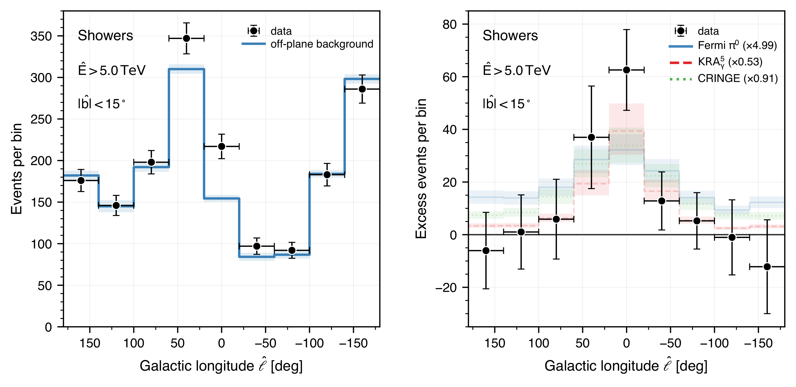
图注：\(\textbf{Distribution and background-subtracted residuals of shower events along Galactic longitude.}\) The left panel shows observed counts (black points) for shower events with reconstructed energy $\hat{E}>\SI{5}{\tera \eV}$ and Galactic latitude $|\hat{b}|<15^\circ$, with error bars corresponding to the uncertainty from Poisson statistics. The blue histogram shows data-derived background expectations, estimated from off-plane regions along the same declination; the shaded band corresponds to its statistical uncertainty. The right panel shows residuals (black points) after background subtraction, $N_{\mathrm{obs}}(\hat{\ell})-N_{\mathrm{bkg}}(\hat{\ell})$, with uncertainties obtained via error propagation. Coloured lines show signal expectations from three of the tested templates, scaled to their best-fit normalizations from the likelihood analysis; shaded bands indicate the corresponding \(\SI{1}{\textsigma}\) uncertainty on the normalization. An excess is visible, concentrated toward the inner Galaxy, that is broadly consistent in scale and shape with diffuse Galactic emission models. Model expectations are overlaid for visual comparison only; no fit is performed to the binned points shown here.
对应解读：对应“建议重点查看的图表”中的银道经度剖面图、能量阈值诊断和内区计数/残差图，也对应“关键图表逐图导读”中关于经度方向内区超额与残差诊断的内容。
入选理由：该图直接展示了 shower 事件在重建能量高于 5 TeV、银纬 |b|<15° 条件下沿银经的观测计数、数据驱动背景、背景扣除残差，以及多个银河弥散模板的最佳拟合预期和 1σ 归一化不确定带。它最能支撑日报中关于银河内区超额、背景估计、模型形状比较和残差是否集中在内区的核心解读。
来源与置信度：\(arxiv_source\)；high；\(arxiv_source\) / main.tex:figure[3]
Fig02
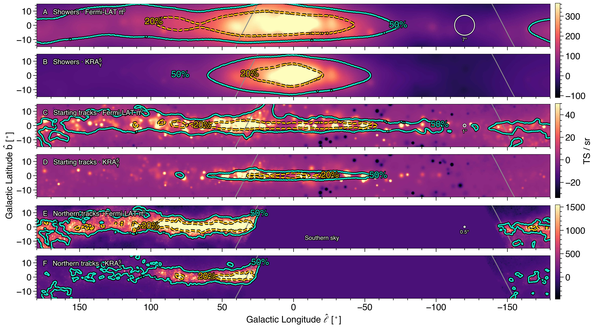
图注：\(\textbf{Test statistic (TS) distributions in Galactic coordinates.}\) Colour maps show the TS per steradian for the shower (A, B), starting-track (C, D) and northern-track (E, F) samples, as indicated by the colour bar (unique to each sample). Contour lines indicate \SI{20}{\%} and \SI{50}{\%} containment regions of the signal probability density function (PDF) for the corresponding template, assuming a typical angular uncertainty for an event from the sample (white circle, \(\ang{7}\) for showers, \(\ang{1}\) for starting tracks and \(\ang{0.5}\) for through-going tracks). Grey lines mark $\delta = \ang{0}$ in equatorial coordinates. The TS distributions depend on the assumed Galactic template: the \(\textit{Fermi}-LAT\) $\pi^0$ model (A, C, E) predicts a broader profile along Galactic longitude, while KRA$_\gamma^5$ (B, D, F) peaks more prominently toward the Galactic Centre. Finer features are visible for the track samples due to their superior angular resolution. The lack of sensitivity from through-going tracks in the northern sky, within the Galactic longitude range from $\ang{-150}$ to $\ang{20}$, is also apparent in the bottom panels. Maps for the CRINGE and KRA$_\gamma^{50}$ results are shown in Extended Data Fig.~\(\ref{fig:ts_stack_method}.\)
对应解读：对应“建议重点查看的图表”中的全天或银道坐标显著性图、事件形态贡献图，以及“关键图表逐图导读”中图 1 和图 5 关于 TS 分布、银道面模板和不同事件拓扑的讨论。
入选理由：该图在银道坐标中分别给出 shower、starting-track、northern-track 样本的 TS/steradian 分布，并比较 Fermi-LAT π0 与 KRAγ5 模板的空间形态，同时标出不同拓扑的典型角分辨率和模板 containment 轮廓。它能直接检验信号是否沿银道面、是否在银河中心方向增强，以及结论是否由单一事件形态驱动。
来源与置信度：\(arxiv_source\)；high；\(arxiv_source\) / main.tex:figure[2]
Fig04
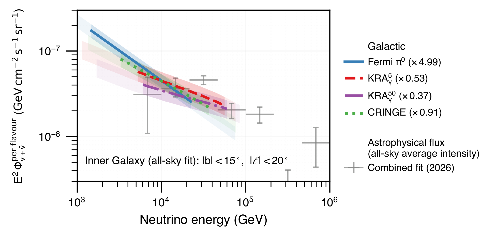
图注：\(\textbf{Diffuse Galactic neutrino spectra averaged over the Inner Galaxy.}\) We present the best-fit per-flavour differential flux for four Galactic emission models: \(\textit{Fermi}-LAT\)~$\pi^0$ (blue), KRA$_\gamma^{5}$ (red), KRA$_\gamma^{50}$ (purple), and CRINGE (green). The model predictions are scaled by the best-fit normalization obtained from the global likelihood analysis. The spectra are shown for the inner Galactic region \((|b|\le15^\circ,\, |\ell|\le20^\circ)\). The sensitive energy range is denoted by the shaded bands; horizontal spans indicate 68\% (90\%) regions in darker (lighter) shades. Vertical spans on the spectra denote 68\% uncertainties from a unified Feldman–Cousins construction~\(\autocite{Feldman:1997qc},\) which includes detector systematics. See Methods for details. The Galactic neutrino spectra are compared to IceCube measurements of the all-sky-averaged astrophysical neutrino flux using a combination of tracks and contained showers~\(\autocite{IceCube:2025tgp}\) (Combined Fit), derived under the assumption of isotropy over the full sky.
对应解读：对应“建议重点查看的图表”中的能量/谱分布、似然置信区间和系统误差诊断，也对应“模型拟合”中关于信号归一化、谱形、模板比较和 detector systematics 的讨论。
入选理由：该图给出内银河区的逐味微分中微子通量谱，比较四个银河发射模型在全局似然最佳归一化后的结果，并显示敏感能区、68%/90% 区间以及包含探测器系统误差的 Feldman–Cousins 不确定度。它比单纯文字结果更适合说明不同模板的谱预期、能量覆盖和系统误差对通量约束的影响。
来源与置信度：\(arxiv_source\)；high；\(arxiv_source\) / main.tex:figure[4]
强相关工作
与本文最直接相关的是 IceCube 早期关于银道面高能中微子的报告，尤其是 2023 年左右基于机器学习选择级联事件、报告银道面中微子辐射证据的工作。本文的进步在于更长曝光、更全的事件形态、更系统的冰模型和重建改进，并把显著性提高到 \(5.7\sigma\)。检索关键词可用 “IceCube Galactic plane neutrinos 2023 Science”、“Galactic diffuse neutrino emission IceCube”、“KRA gamma neutrino Milky Way”。
在理论和多信使背景方面，应把本文与 Fermi-LAT 银河弥散 \(\gamma\) 射线模型、HAWC/LHAASO 多 TeV 银道面源和弥散发射、以及 GALPROP/DRAGON/KRA\(\gamma\) 宇宙线传播模型放在一起读。相反或张力观点主要集中在：银道面中微子是否由平滑弥散过程主导，还是由未分辨源群主导；\(\gamma\) 射线模板能否无偏预测中微子；以及银河贡献在 IceCube 各向同性天体中微子总通量中占比到底多大。检索关键词可用 “unresolved Galactic neutrino sources”、“Fermi diffuse gamma-ray Galactic plane neutrino template”、“KM3NeT Galactic neutrino plane”。
同一事件 / 同类源线索：
相似工作：
基础理论 / 方法工作：
相反观点 / 张力线索：
（未提供）
2. A radio view on Gamma-Loud Protostars: Derivation of jet mechanical luminosity
- 来源：arXiv / astro-ph.HE
- 链接：https://arxiv.org/abs/2607.24969v1
- 作者：Javier Méndez-Gallego, Carlos Carrasco-González, Rubén López-Coto, Iván Agudo, Stefano Menchiari, Rubén Fedriani, Emma de Oña Wilhelmi, Guillem Anglada
- 评分：novelty 7/10，importance 7/10，relevance 10/10，final 9.05/10
- 推荐理由：直接讨论Gamma-Loud Protostars作为银河系强子加速器，连接射电喷流机械功率、宇宙线能量和伽马射线非热辐射效率；伽马射线/宇宙线相关性很高，结果对评估新型Galactic accelerators有阅读价值。
中文题目：用厘米波射电估算“伽马亮原恒星”的喷流机械功率
做了什么：这篇文章把“伽马亮原恒星”（Gamma-Loud Protostars, GLPs）的厘米波射电辐射当作原恒星喷流活动的热辐射示踪量，建立从射电厘米波光度推算喷流机械功率的半经验方法，并把所得机械能注入量与伽马射线推断的非热宇宙线能量作比较。核心结论是：射电推导出的喷流功率能够与红外、射电观测约束相容，且宇宙线能量与喷流机械能之间存在相关性，对应粒子加速效率大致为 \(1\%\) 到 \(10\%\)。
为什么重要：如果这些伽马亮原恒星确实是银河系内的强子加速器，那么它们会把恒星形成区、原恒星喷流和低能宇宙线起源联系起来。过去对年轻恒星体喷流的研究主要集中在质量外流、反馈和星际介质扰动；本文关心的是同一套喷流能量预算是否足以解释非热伽马射线信号。这直接影响我们是否应把大质量或中等质量恒星形成区纳入银河宇宙线源族。
理论 / 观测 / 仪器方法价值：方法上的价值在于，它把比较容易获得的厘米波热自由-自由辐射光度转化为喷流机械 luminosity，再与伽马射线侧的宇宙线能量需求闭合比较。对观测者来说，这提供了一个筛选候选加速源的射电诊断；对理论模型来说，它给出了喷流功率、宇宙线能量和加速效率之间可检验的数量级关系。
为什么应该关注：你应该关注它，因为这不是单纯说某些原恒星附近有伽马射线，而是在问一个更硬的问题：喷流真的有足够的机械能来供给强子加速吗？如果答案在更多源中成立，恒星形成区将不只是背景复杂的伽马射线区域，而可能是银河系宇宙线加速的低能或局域成分来源；如果未来射电高分辨率观测推翻这种对应关系，也能迅速缩小 GLP 解释的参数空间。
展开详细解读：文章讲解、背景、理论、重点章节、图表与相关工作
文章详细讲解
科学问题：本文针对的是所谓伽马亮原恒星，即与原恒星喷流和恒星形成环境空间相关、被解释为潜在强子宇宙线加速器的一类候选源。关键问题不是“那里有没有射电喷流”，而是“从厘米波热射电辐射推出来的喷流机械功率，是否足以供给伽马射线侧所需的非热粒子能量”。这一步很重要，因为伽马射线形态和谱能量分布往往受复杂背景、源混淆和气体靶物质分布影响，仅靠高能数据难以唯一定位加速区。
作者怎么做：文章把厘米波射电光度作为电离喷流的热自由-自由辐射示踪量，再结合已有的原恒星喷流经验关系和理论缩放关系，推导喷流动量率、质量损失率和机械 luminosity。随后，作者把这个机械功率估计与 GLP 的非热伽马射线解释相连接：伽马射线若来自强子过程，所需宇宙线能量可由伽马射线 luminosity、气体密度和质子-质子碰撞损失时间估计；两者相除得到有效加速效率。
关键结果：根据摘要，推导出的喷流功率能够再现实测红外和射电性质，说明这种从厘米波出发的机械功率估计在数量级上没有立即违背多波段观测。更重要的是，宇宙线能量与注入的机械能呈相关关系，得到的加速效率约为 \(1\%\) 到 \(10\%\)。这个效率区间与许多天体激波加速场景中常用的能量转换效率同量级，因此 GLP 作为强子加速器在能量学上并非明显不可行。
局限和下一步：这项工作很可能仍受三个主要限制支配。第一，厘米波热辐射必须与喷流本身可靠关联，而不能被超紧致 \(\mathrm{H\,II}\) 区、背景非热源或多源混叠显著污染。第二，喷流倾角、速度、电离分数和质量损失率之间存在强退化，使机械功率的系统误差可能大于形式统计误差。第三，伽马射线侧的非热能量取决于气体密度、源距离、扩散和背景建模。作者也明确指出，需要未来更好的射电观测来确定真正的加速器并给出更可靠的效率。
关键结果是怎么做出来的
本文最重要的证据链是从厘米波射电光度到喷流机械 luminosity，再到与伽马射线推断的宇宙线能量比较。样本选择围绕已被报告为 GLP 的候选原恒星或原恒星喷流系统展开；从摘要和题录信息无法确认具体源数、各源名称和筛选阈值，因此读者在原文中应首先检查样本表：每个候选源的距离、厘米波通量密度、频率、谱指数、红外 luminosity、是否有已知喷流形态，以及是否存在可能混淆的 \(\mathrm{H\,II}\) 区或背景射电源。
统计上，这类工作通常不是以“发现新伽马源”的检验为主，而是做能量学一致性和相关性检验。关键量应包括射电厘米波 luminosity、由经验关系得到的喷流动量率或质量损失率、进一步得到的机械功率、以及伽马射线建模所需的宇宙线能量。读者应查看作者是否对距离误差、通量误差、谱指数选择、电离分数、喷流速度和年龄作了误差传播；若只给出中心值而未给出系统误差带，则所谓 \(1\%\) 到 \(10\%\) 的效率应理解为数量级结果。
模型比较的核心应是：用射电推导的机械能是否与红外和射电观测关系相容，以及宇宙线能量 \(W_{\rm CR}\) 是否随喷流注入机械能 \(E_{\rm mech}\) 增加。若原文给出相关图，读者应检查坐标是否为对数坐标、是否存在共同距离因子导致的伪相关、是否对上限源进行处理、是否使用 Spearman 或 Pearson 相关系数，或是否通过蒙特卡洛采样传播误差。对于小样本 GLP，单个高 luminosity 源很容易主导斜率和相关性。
支撑结论的图表预计包括：射电 luminosity 与喷流动量率或机械功率的关系图、机械能与宇宙线能量的比较图、加速效率分布或效率随源参数变化图，以及多波段能量预算表。系统误差方面，最需要关注的是距离 \(d\) 的平方放大、热/非热射电成分分离、环境气体密度 \(n\) 对强子伽马解释的影响，以及伽马射线空间模板是否真的对应喷流而不是整个恒星形成复合体。
稳健性检验应至少包括改变喷流速度、改变电离分数、改变源年龄或活动时标、改变伽马射线强子模型参数后，效率是否仍落在合理范围。如果某些源需要 \(\eta_{\rm acc}>1\) 或极端低气体密度才能解释，就会削弱 GLP 统一图像；反之，如果大多数源在宽参数范围内维持 \(\eta_{\rm acc}\sim 0.01\) 到 \(0.1\)，那么本文的能量学论证就比较稳。
展开背景、理论、公式、模型、章节和图表导读
背景知识
原恒星喷流是年轻恒星体吸积-外流系统的基本组成部分。吸积盘把角动量和质量送入中心原恒星，同时通过磁离心机制或盘风驱动准准直喷流，把一部分质量、动量和能量反馈到母分子云中。传统上，原恒星喷流被视为恒星形成反馈、分子外流驱动和角动量移除问题的一部分。
厘米波射电辐射在这一领域通常用于追踪电离喷流。低质量年轻恒星体的厘米波辐射常为热自由-自由辐射，谱指数介于完全光薄和部分光厚之间；对于大质量原恒星，情况更复杂，可能同时有热喷流、超紧致 \(\mathrm{H\,II}\) 区和非热辐射贡献。正因如此，射电 luminosity 与喷流活动之间存在有用但有散布的经验关系。
GLP 的新意在于把原恒星喷流放进高能天体物理框架中：如果喷流终止激波、内部工作面或与云气相互作用区域能加速质子，那么这些质子与周围高密度气体发生强子碰撞，可通过 \(\pi^{0}\) 衰变产生 \(\gamma\) 射线。恒星形成区气体密度高、磁场强、激波丰富，因此从物理直觉上不排除作为低能宇宙线源；但高能观测角分辨率有限，容易把多个源和弥散背景混在一起。
为什么现在值得重新看：一方面，\(Fermi\)-LAT 等长期巡天积累了足够长的 \(\gamma\) 射线曝光，使得恒星形成区和原恒星候选源附近的弱信号可以被重新分析；另一方面，VLA、e-MERLIN、MeerKAT、ALMA 辅助数据等让射电/毫米波对喷流和环境气体的分辨能力明显增强。把高能侧和射电侧做能量闭合，是比单波段关联更强的检验。
常见误区有三类。第一，把所有厘米波辐射都当作喷流示踪，这是危险的，因为 \(\mathrm{H\,II}\) 区和背景活动星系核也能贡献射电通量。第二，把空间重合直接解释为物理关联，而忽略 \(\gamma\) 射线点扩散函数和恒星形成区的源拥挤。第三，把加速效率看作精确测量值；在这类系统中，效率通常是许多不确定量相除得到的有效参数，应首先看数量级和跨源一致性。
基础理论 / 方法脉络
基础物理图像可以从喷流能量预算开始。原恒星吸积释放引力势能，其中一部分转化为准直外流的动能。若喷流质量损失率为 \(\dot{M}_{\rm j}\)，速度为 \(v_{\rm j}\)，则机械功率由动能通量给出。这个功率是粒子加速可用能量的上限之一，但真实进入非热粒子的比例取决于激波强度、磁湍流、逃逸和冷却。
厘米波热自由-自由辐射来自电离气体中电子与离子的库仑散射。对原恒星喷流，辐射通常不是简单的均匀球形 \(\mathrm{H\,II}\) 区，而是有密度梯度和几何准直的外流。部分光厚条件下，观测到的通量密度 \(S_{\nu}\) 与频率 \(\nu\) 呈幂律，谱指数可反映电离喷流结构。经验上，厘米波 luminosity 与外流动量率存在相关性，这正是本文推导机械功率的入口。
伽马射线侧若采用强子解释，核心过程是相对论质子与环境质子碰撞，产生中性介子并衰变为 \(\gamma\) 射线。给定环境气体密度 \(n\) 和宇宙线总能量 \(W_{\rm CR}\)，伽马 luminosity 可用碰撞损失时间近似估计。这里的主要退化是 \(W_{\rm CR}\) 与 \(n\) 反相关：同样的 \(\gamma\) 射线 luminosity，在更高气体密度下需要更少宇宙线能量。
本文的模型假设可概括为：厘米波热辐射可靠追踪喷流活动；经验关系可从射电 luminosity 推到喷流动力学量；喷流机械能的一部分以效率 \(\eta_{\rm acc}\) 转化为宇宙线；伽马射线主要由这些宇宙线的强子相互作用产生。每一步都有系统误差，但如果跨源得到一致的 \(\eta_{\rm acc}\) 范围，便说明这种物理图像值得进一步检验。
观测和统计逻辑上，最需要警惕共同距离因子。射电 luminosity 和伽马 luminosity 都含有 \(d^{2}\)，若样本距离跨度大，相关性可能部分来自距离而非内禀物理关系。因此读者应看作者是否讨论距离误差、是否使用通量空间检验、是否在相关性分析中控制距离，或是否通过重采样评估稳健性。
公式与推导
第一步是把观测到的厘米波通量密度转成单频 luminosity。若源距为 \(d\)，观测频率为 \(\nu\)，通量密度为 \(S_{\nu}\)，各向同性等效单频 luminosity 为
这里 \(L_{\nu}\) 是射电 luminosity 密度，\(d\) 的误差会以 \(d^{2}\) 进入结果；这也是相关性分析中最常见的系统来源。
第二步是描述热自由-自由辐射的基本吸收。电离气体的自由-自由光深可写成近似缩放
其中 \(T_{\rm e}\) 是电子温度，\({\rm EM}=\int n_{\rm e}^{2}dl\) 是发射量，\(C_{\rm ff}\) 含有单位制和 Gaunt 因子近似。该式说明厘米波通量对电离密度、温度和频率都有依赖。
第三步是把辐射强度与光深联系起来。在瑞利-金斯近似下，亮度可写为
若 \(\tau_{\nu}\ll 1\)，通量正比于 \({\rm EM}\)；若部分光厚，谱指数和几何结构会共同决定 \(S_{\nu}\)。
第四步引入原恒星喷流中常用的经验桥梁：厘米波 luminosity 与外流动量率 \(\dot{P}_{\rm out}\) 之间满足幂律关系，形式可写为
这里 \(A\)、\(b\) 和 \(\alpha\) 来自校准样本或理论模型，\(\dot{P}_{\rm out}\) 是喷流/外流动量注入率。本文的机械功率估计本质上依赖这一类关系。
第五步由动量率得到质量损失率。若喷流特征速度为 \(v_{\rm j}\)，则
这里 \(v_{\rm j}\) 通常不易直接测量，倾角修正也会引入系统误差；因此 \(\dot{M}_{\rm j}\) 与 \(v_{\rm j}\) 之间存在明显退化。
第六步计算喷流机械 luminosity：
该式显示，在动量率给定时，机械功率线性依赖假设的喷流速度；若速度取值范围宽，\(L_{\rm mech}\) 的系统误差也会很大。
第七步把机械功率积成总机械能。若有效活动时间为 \(t_{\rm age}\)，则
这是稳态或时间平均近似；真实原恒星喷流常有爆发和结块结构，因此 \(t_{\rm age}\) 与 duty cycle 会影响能量预算。
第八步估计强子伽马射线所需宇宙线能量。质子-质子碰撞损失时间可近似为
其中 \(n\) 是靶气体密度，\(\sigma_{pp}\) 是非弹性碰撞截面，\(\kappa_{pp}\) 是非弹性能量损失比例。若 \(\gamma\) 射线 luminosity 为 \(L_{\gamma}\)，则数量级上
其中 \(f_{\gamma}\) 表示进入 \(\gamma\) 射线通道的能量比例。
第九步定义加速效率并与本文结论相连：
如果得到 \(\eta_{\rm acc}\sim 0.01\) 到 \(0.1\)，说明喷流机械能在数量级上足以支持强子加速；若远大于 \(1\)，则强子 GLP 解释在能量学上会遇到严重困难。
模型拟合 / 应用方法
本文涉及的拟合首先是射电侧的转换关系。观测量包括厘米波通量密度 \(S_{\nu}\)、距离 \(d\)、频率 \(\nu\) 和可能的谱指数 \(\alpha\)。模型量包括射电 luminosity、外流动量率、喷流速度、质量损失率和机械 luminosity。若原文采用文献中的经验关系，读者应注意校准关系本身的内禀散布是否被纳入误差，而不是只传播测光误差。
参数估计可以用对数线性拟合表达，例如在 \(\log(S_{\nu}d^{2})\) 与 \(\log \dot{P}_{\rm out}\) 空间中拟合斜率和截距。实际误差通常非高斯：距离误差乘性进入，通量可能有上限，热/非热分量分离依赖谱指数，多源混叠会造成偏高通量。更稳健的做法是采用层级贝叶斯或蒙特卡洛采样，把 \(A\)、\(b\)、\(v_{\rm j}\)、电离分数和 \(t_{\rm age}\) 都作为带先验的不确定量。
伽马射线侧的拟合通常围绕源谱、空间模板和背景模型。若 \(L_{\gamma}\) 来自 \(Fermi\)-LAT 数据，它会依赖 Galactic diffuse emission 模型、邻近点源处理、能段选择和空间扩展假设。强子模型还需要气体密度或气体质量，常由 CO、\(\mathrm{H\,I}\)、尘埃或红外数据间接推断；这些气体示踪之间的系统差异会直接影响 \(W_{\rm CR}\)。
最关键的退化关系是 \(W_{\rm CR}\propto L_{\gamma}/n\) 和 \(L_{\rm mech}\propto \dot{P}_{\rm j}v_{\rm j}\)。因此，低估气体密度会高估所需宇宙线能量，高估喷流速度会高估机械功率，两者都会改变 \(\eta_{\rm acc}\)。如果作者只给出单一气体密度和单一速度，效率区间应被看作条件结果；如果作者扫描了这些参数并仍得到 \(1\%\) 到 \(10\%\)，结论就更有说服力。
残差诊断应看两个层面。射电经验关系中，某些源是否系统偏离关系，可能指向不同演化阶段或污染源；机械能与宇宙线能量关系中，是否由少数高 luminosity 源支配斜率，或者是否存在只给上限的非探测源。实际应用上，这套方法最适合用于构建 GLP 候选源优先级：优先选择射电喷流清晰、距离可靠、环境气体密度可测、且伽马背景相对简单的目标。
重点章节 / 结果段落怎么读
数据/样本部分应首先阅读。重点不是源名列表本身，而是每个 GLP 候选体的射电测量是否真的对应原恒星喷流：频率、通量、角分辨率、是否解析出双极结构、是否有谱指数、距离和红外 luminosity 的来源都应逐项检查。
方法部分是本文的核心。读者应跟踪作者如何从厘米波 luminosity 过渡到喷流动量率，再到质量损失率和机械 luminosity。尤其要看他们采用的是哪一条经验关系、校准样本是什么、适用质量范围和演化阶段是否与 GLP 候选体匹配。
非热能量比较部分需要和伽马射线文献相互核对。应检查 \(W_{\rm CR}\)、\(L_{\gamma}\)、气体密度和源年龄的定义是否一致，强子解释是否被当作唯一解释，还是作为一种能量学假设来检验。
主结果部分应关注机械能与宇宙线能量的相关图、效率区间和任何跨源趋势。若作者报告加速效率 \(1\%\) 到 \(10\%\)，应查看这是每个源的区间、总体拟合结果，还是在一组假设下得到的代表性范围。
讨论和结论部分应读其保留意见。特别是未来射电观测为何必要：是为了确认喷流身份、分辨多个射电成分、测定谱指数，还是为了得到喷流速度和倾角。若附录中有误差传播或参数扫描，那部分对判断结论稳健性非常关键。
建议重点查看的图表
-
样本和多波段对应图：看 GLP 候选源、射电源、红外源和伽马射线误差区域是否真正重合，特别注意伽马射线点扩散函数范围内是否有其他候选体。
-
厘米波 luminosity 与红外 luminosity 或外流动量率关系图：看本文源是否落在已知原恒星喷流经验关系附近，还是需要外推到未校准区域。
-
从射电推导的喷流机械 luminosity 分布：看误差条是否包括距离、速度、电离分数和经验关系散布；若只画统计误差，要谨慎。
-
宇宙线能量 \(W_{\rm CR}\) 与机械能 \(E_{\rm mech}\) 对比图：看是否存在近似线性趋势，是否有 \(\eta_{\rm acc}=1\%\)、\(10\%\)、\(100\%\) 的参考线，以及哪些源驱动相关性。
-
加速效率图或表：看每个源的 \(\eta_{\rm acc}\) 是否集中在 \(1\%\) 到 \(10\%\)，还是跨度很大但摘要给出了代表区间。
-
稳健性或参数扫描图：看改变气体密度、喷流速度、年龄和射电经验关系后，结论是否仍成立。
-
伽马射线谱能量分布或模型残差：若原文引用或重绘高能拟合结果，应看强子模型是否显著优于其他解释，或者只是能量学可行。
关键图表逐图导读
图 1：若论文给出样本位置或多波段视场图，横纵轴通常是赤经和赤纬，叠加射电等值线、红外源位置和伽马射线置信区域。读图时要检查射电喷流是否位于伽马射线定位区域内，以及定位区域内是否有其他高能候选源。陷阱是把角分辨率不同的数据简单叠加后误判为物理关联。
图 2：若论文展示厘米波 luminosity 与红外 luminosity 或外流动量率的关系，常见坐标是双对数轴，点为 GLP 候选源，线为文献经验关系。应看点是否沿经验关系分布，以及误差条是否主要沿距离方向共同移动。陷阱是共同的 \(d^{2}\) 因子会让不同 luminosity 之间出现表观相关。
图 3：喷流机械 luminosity 推导图可能以 \(L_{\rm mech}\) 为纵轴，以 \(S_{\nu}d^{2}\)、\(L_{\rm bol}\) 或源类别为横轴。模型线代表不同喷流速度或经验关系参数。应看不同假设下的带宽有多大；若模型带跨越一个数量级以上，效率结论应按数量级理解。
图 4：最关键的图很可能是宇宙线能量 \(W_{\rm CR}\) 与注入机械能 \(E_{\rm mech}\) 的比较。坐标一般为双对数，参考线可对应 \(\eta_{\rm acc}=0.01\)、\(0.1\) 和 \(1\)。若数据点集中在 \(1\%\) 到 \(10\%\) 参考线附近，即支持摘要结论。陷阱是气体密度系统误差会整体移动 \(W_{\rm CR}\)。
图 5：若有加速效率分布图，横轴可能是源名、喷流机械 luminosity 或红外 luminosity，纵轴是 \(\eta_{\rm acc}\)。应关注是否所有源都低于 \(1\)，以及误差条是否穿过不合理区域。若少数源效率极高，可能暗示伽马射线并非来自该喷流，或者射电机械功率被低估。
图 6：若有稳健性检验图，通常展示参数变化对 \(L_{\rm mech}\)、\(W_{\rm CR}\) 或 \(\eta_{\rm acc}\) 的影响。读者应看结论是否依赖单一默认值，例如固定 \(v_{\rm j}\)、固定 \(n\) 或固定源年龄。真正有力的结果应在合理参数空间内保持 GLP 能量学可行。
论文原图 / 可嵌入图片
Fig05
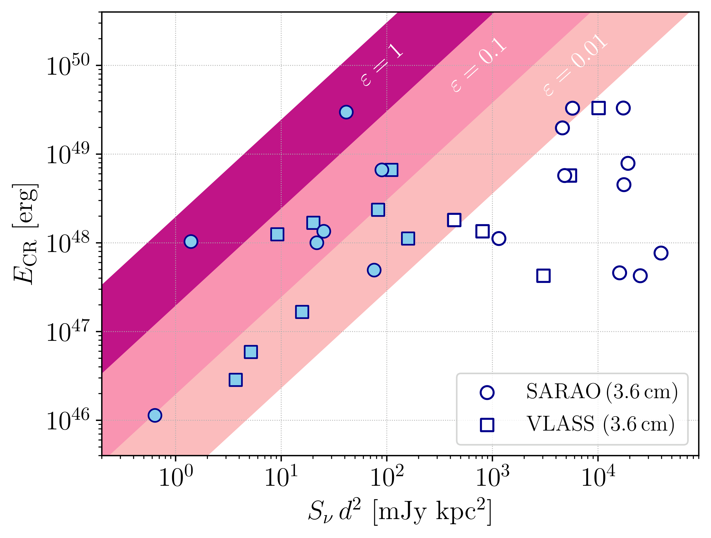
图注：Non-thermal CR energy calculated for a hadronic scenario versus radio cm luminosity. Markers follow the same notation as in Fig.~\(\ref{fig:YSO}.\) Colored areas show the expected CR energy computed using Eq.~(\ref{eq:Ljet}) for different efficiencies.
对应解读：对应“建议重点查看的图表”第4、5项，以及“关键图表逐图导读”中关于宇宙线能量、机械能和加速效率的核心判断。
入选理由：这是最直接支撑论文摘要结论的图：纵轴为强子情景下的非热宇宙线能量，横轴为3.6 cm射电光度，并用不同效率的彩色区域给出由喷流机械功率关系预期的宇宙线能量范围。它最适合检验GLP是否集中在约1%到10%加速效率附近，以及是否存在效率过高或能量学不可行的源。
来源与置信度：\(arxiv_source\)；high；\(arxiv_source\) / main.tex:figure[5]
Fig02
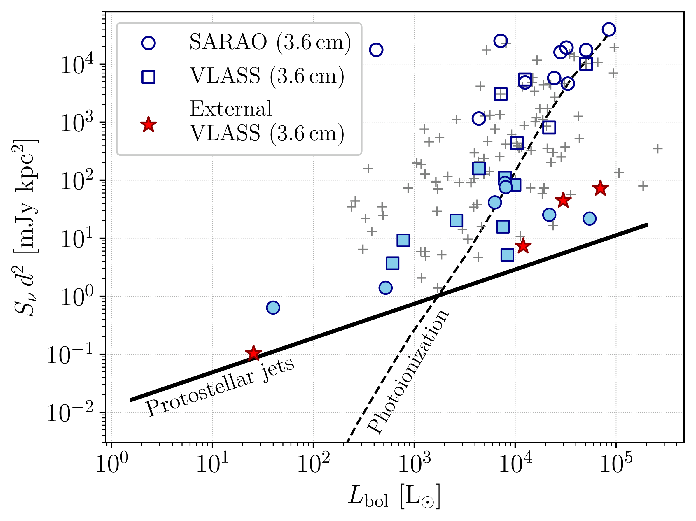
图注：Radio luminosity at 3.6 cm versus bolometric luminosity for the 24 GLPs with a counterpart in VLASS or SARAO. Filled circles and squares indicate sources consistent with protostellar jets, while empty symbols follow the Ly-continuum emission for compact \(\ion{H}{ii}\) regions. Red stars mark the external GLP associations reported by \(\cite{2026Mendez},\) all of them behaving as protostellar jets. Grey crosses show the radio counterparts identified within 1~arcmin of the YSO positions. Solid black line marks the relation expected for protostellar jets and dashed line is the relation for photoionized sources, both extracted from \(\cite{2018Anglada}.\)
对应解读：对应“建议重点查看的图表”第2项和“关键图表逐图导读”图2：厘米波 luminosity 与红外/bolometric luminosity 的经验关系检验。
入选理由：该图直接展示3.6 cm射电光度与YSO bolometric luminosity 的双对数关系，并区分原恒星喷流、紧致HII区、外部GLP关联源和1角分内的射电对应体。它是判断厘米波辐射是否可作为喷流热自由-自由辐射示踪量的关键证据，也能看出样本是否落在Anglada等文献的喷流经验关系附近。
来源与置信度：\(arxiv_source\)；high；\(arxiv_source\) / main.tex:figure[2]
Fig01
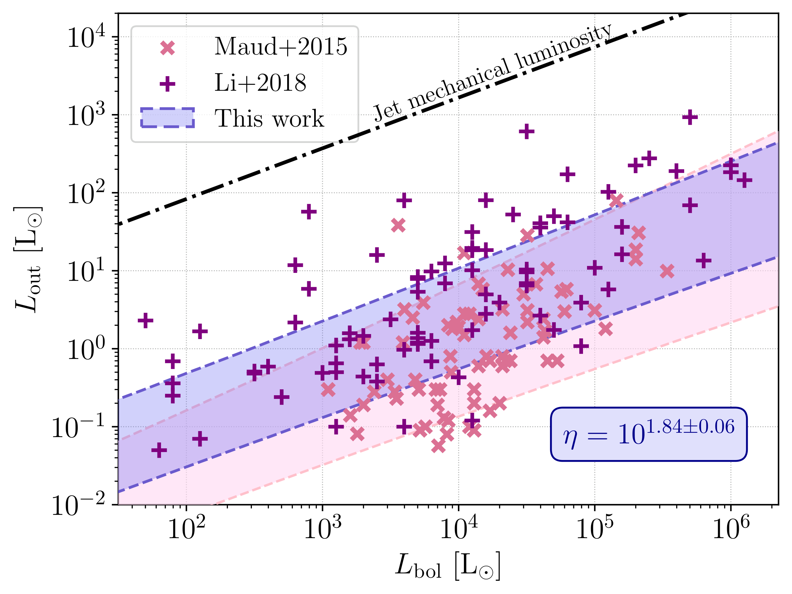
图注：Mechanical luminosity of molecular outflows versus bolometric luminosity of driving YSOs. Markers show the observational data reported by \(\cite{2015Maud}\) and \(\cite{2018Li}.\) Equation (\ref{eq:Maud}) is marked with the shadowed pink area. Equation (\ref{eq:Ljet_Lbol}) (black dot-dashed line) is rescaled $\eta^{-1}$ times to match the samples of observational data (blue area).
对应解读：对应“建议重点查看的图表”第3项，以及模型拟合段落中从经验关系推导喷流机械 luminosity 的部分。
入选理由：该图展示分子外流机械 luminosity 与驱动源 bolometric luminosity 的关系，并叠加Maud经验关系及作者采用的喷流机械 luminosity 缩放关系。它支撑本文从红外/射电观测推导喷流机械功率的标定基础，能够帮助读者判断机械功率估计是否需要大幅外推以及模型带宽有多大。
来源与置信度：\(arxiv_source\)；high；\(arxiv_source\) / main.tex:figure[1]
Fig04
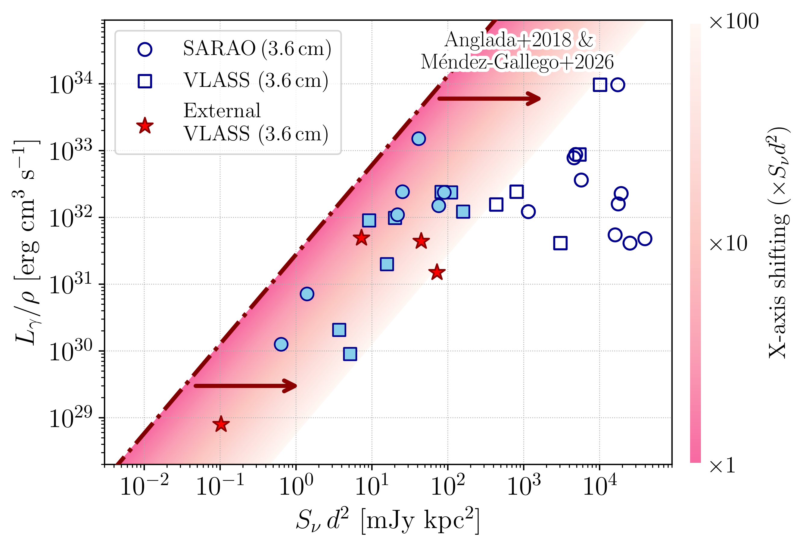
图注：CR output versus cm luminosity at 3.6~cm. Marker styles follow the same notation as in Fig. \(\ref{fig:YSO}.\) The combination of relations from Figs. \(\ref{fig:YSO}\) and \(\ref{fig:mendez26}\) is a dot-dashed line. The colorbar indicates the x-axis shift of the dot-dashed line.
对应解读：对应“建议重点查看的图表”第4项和模型拟合段落中射电侧与伽马射线侧连接的关系诊断。
入选理由：该图把CR输出量与3.6 cm射电光度直接联系起来，并叠加由前面经验关系组合得到的模型线，同时用色标表示模型线在横轴方向的平移。它比单独的Lbol关系更接近本文核心问题，即射电喷流指标是否能预测或解释伽马射线非热输出。
来源与置信度：\(arxiv_source\)；high；\(arxiv_source\) / main.tex:figure[4]
Fig03
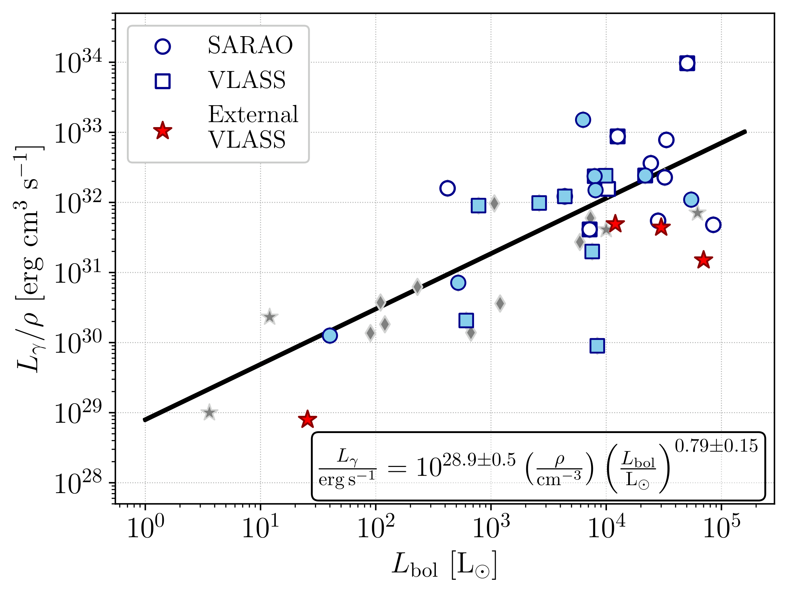
图注：CR output ($L_\gamma / \rho$) versus YSO bolometric luminosity. Marker styles follow the same notation as in Fig. \(\ref{fig:YSO}.\) Grey markers show the position of GLPs (diamonds) and external sources (stars) that were not identified in VLASS or SARAO. Solid line show the correlation found by \(\cite{2026Mendez}.\)
对应解读：对应“建议重点查看的图表”第2、4项的辅助诊断：CR output 与YSO bolometric luminosity 的相关性。
入选理由：该图展示CR输出量随YSO bolometric luminosity 的变化，并包含未在VLASS或SARAO中识别的GLP及外部源。它有助于判断伽马射线侧非热输出是否随原恒星总能量尺度变化，但相较Fig05和Fig04，它没有直接给出机械能或加速效率，因此科学支撑性略弱。
来源与置信度：\(arxiv_source\)；high；\(arxiv_source\) / main.tex:figure[3]
强相关工作
这篇工作与两条文献线相接。第一条是原恒星射电喷流的经验标定，包括厘米波 luminosity 与外流动量率、红外 luminosity 之间的关系；检索关键词可用“protostellar radio jets centimeter free-free emission momentum rate Anglada correlation”。第二条是年轻恒星体或恒星形成区作为 \(\gamma\) 射线/宇宙线源的研究；检索关键词可用“gamma-loud protostars hadronic accelerators protostellar jets cosmic rays”。
同类或相反观点主要围绕高能辐射来源展开：GLP 的 \(\gamma\) 射线可以被解释为喷流加速质子与稠密气体相互作用，也可能受邻近脉冲星、超新星遗迹、未分辨活动星系核、星团风或弥散背景建模误差影响。读者应把本文与具体 GLP 发现论文、\(Fermi\)-LAT 源表、相关恒星形成区的气体研究和射电高分辨率图像一起读，而不要只看效率数字。
如果要系统追踪该方向，建议在 NASA ADS 或 arXiv 中检索“Gamma-Loud Protostars”、“GLPs protostellar jets gamma rays”、“young stellar objects gamma rays”、“massive protostellar jets non-thermal emission”和“radio luminosity protostellar outflow force”。由于本文不对应单一命名瞬变或单一源，而是一个候选源类别和方法论文，相关背景应按“同类源”“方法标定”“高能解释张力”三类文献组织。
同一事件 / 同类源线索：
相似工作：
- https://arxiv.org/search/astro-ph?query=Gamma-Loud+Protostars&searchtype=all
- https://ui.adsabs.harvard.edu/search/q=%22Gamma-Loud%20Protostars%22
基础理论 / 方法工作：
- https://ui.adsabs.harvard.edu/search/q=protostellar%20radio%20jets%20centimeter%20free-free%20emission%20momentum%20rate
- https://ui.adsabs.harvard.edu/search/q=protostellar%20outflows%20radio%20continuum%20Anglada
相反观点 / 张力线索：
3. The afterglow of gamma-ray burst - supernova connections
- 来源：arXiv / astro-ph.HE
- 链接：https://arxiv.org/abs/2607.25476v1
- 作者：Marco Muccino, Rahim Moradi, Yu Wang
- 评分：novelty 7/10，importance 7/10，relevance 9/10，final 8.70/10
- 推荐理由：GRB-SN connection paper with an analytical framework linking non-thermal afterglow and thermal SN-ejecta response; GRBs are a high-priority HE topic and the unified treatment may be useful, though based on simplified modeling and a small sample.
中文题目：伽马暴—超新星联系中的余辉：把非热喷流余辉和热成分放进同一个解析框架
做了什么：这篇文章讨论长伽马暴与宽线型 Ib/c 超新星成协系统中一个长期存在的问题：X 射线余辉里既有通常解释为相对论喷流同步辐射的非热成分，也有随时间演化的热成分，二者是否只是并列现象，还是来自同一个喷流—抛射物耦合过程。作者把非热余辉用现象学同步辐射能量释放描述，把热成分用受喷流影响的超新星抛射物扩散冷却模型描述，并推导出热、非热光度的闭合解析表达式。模型被用于 GRB 060218A/SN 2006aj 和 GRB 171205A/SN 2017iuk，能够再现两套系统的主要热光变和非热光变特征。核心结论是：热光度在平台阶段前与非热成分有相似时间演化，喷流影响区域储存的热能只是与观测非热辐射相关能量的一部分，拟合得到的特征时标支持喷流演化与抛射物热响应之间存在直接联系。
为什么重要：GRB—SN 成协是大质量恒星核心坍缩、相对论喷流产生、非球对称爆炸和超新星抛射物动力学交汇的关键实验场。过去热成分常被分别解释为 shock breakout、喷流 cocoon、热化喷流能量或早期超新星包层冷却，但这些解释往往与标准非热余辉分开建模。本文重要之处在于尝试用一个解析耦合框架同时描述两类光度演化，从而把“喷流怎样把能量交给抛射物”这个物理问题变成可拟合的时标和能量分配问题。
理论 / 观测 / 仪器方法价值：它的理论价值在于提供一个低维、可解释的半解析模型，可作为复杂数值喷流—超新星模拟和纯经验光变拟合之间的桥梁。观测价值在于它给出一套可直接用于早期 X 射线/紫外/光学光变分解的诊断量，例如非热能量注入时标、热扩散时标、喷流影响抛射物的热能比例。方法价值在于它强调同时拟合热和非热光变，而不是只对单一波段或单一成分做经验幂律。
为什么应该关注：如果你关心长暴中心引擎、低光度 GRB、宽线 Ic 超新星、喷流窒息与突破、或者未来快速响应多波段巡天如何识别 GRB—SN 成协，那么这篇文章值得看。它不声称解决所有辐射转移和流体动力学细节，但给出了一套足够简单、能和数据直接对接的语言：热成分不只是“额外黑体”，而可能是喷流能量沉积在一小部分抛射物中的时间响应。
展开详细解读：文章讲解、背景、理论、重点章节、图表与相关工作
文章详细讲解
科学问题：长伽马暴与宽线型 Ib/c 超新星的成协系统中，早期 X 射线和紫外/光学辐射常显示两种成分。一种是非热余辉，通常来自相对论喷流外激波中的电子同步辐射；另一种是近似热谱成分，表现为可演化温度和半径。难点在于，二者时间上相近，却常被分别解释：非热余辉归于喷流，热成分归于 shock breakout、cocoon 冷却、抛射物扩散或中心引擎加热。本文要回答的是，能否把它们看成同一喷流—抛射物相互作用的两个辐射通道。
作者怎么做：文章构造了一个解析耦合框架。非热部分不从完整流体动力学出发，而用现象学同步辐射余辉能量释放来表示喷流可观测非热功率；热部分则把被喷流影响的一部分超新星抛射物看成储能区，采用扩散模型描述其热能随膨胀和辐射逸出的演化。这样，非热光度和热光度不再是两个完全独立的经验曲线，而是通过能量输入、热化比例、扩散时标和动力学时标联系起来。作者声称该耦合系统可以解析求解，得到闭合形式的热光度与非热光度表达式。
关键结果：模型应用到 GRB 060218A/SN 2006aj 和 GRB 171205A/SN 2017iuk。前者是低光度、长持续时间 X-ray flash/GRB 与 SN 2006aj 的经典成协事件，后者是近邻低红移 GRB 与 SN 2017iuk 的成协事件。对这两个系统，模型都能复现热成分和非热成分的主要光变形状。尤其值得注意的是，热光度在进入平台阶段前与非热光度表现出相似的时间演化，说明热响应可能跟随喷流能量沉积或喷流影响区的演化，而不是完全独立的超新星冷却尾。
物理解释：拟合推断出喷流影响抛射物中储存的热能只是与观测非热辐射相关能量的一部分。这一点很重要，因为它避免了要求大部分喷流能量完全热化到可见抛射物中；相反，只需要喷流和其周围少量抛射物发生部分耦合，就可能产生观测热成分。拟合的特征时标还提示非热喷流演化时标与热扩散/响应时标之间存在对应关系，这为“喷流—超新星抛射物连接”提供了可观测检验。
局限和下一步：模型是解析和简化的，未显式处理多维流体动力学、非球对称抛射物、频率依赖辐射转移、真实喷流角结构、微物理参数随时间演化、以及不同波段交叉定标。样本也只有两个代表性事件，因此结论更像是物理框架的可行性展示，而非统计普适性证明。下一步应把该模型用于更大 GRB—SN 样本，和宽带谱能量分布同步拟合，并与数值 cocoon/shock breakout 模拟比较其拟合时标和能量比例是否物理一致。
关键结果是怎么做出来的
本文最关键的证据链来自两个具体系统的光变分解和联合拟合：GRB 060218A/SN 2006aj 与 GRB 171205A/SN 2017iuk。样本选择不是统计巡天样本，而是两例有较好早期多波段覆盖、且已经明确与宽线 Ib/c 超新星成协的低红移长暴。这样的选择适合测试解析模型能否同时解释热、非热成分，但不适合直接给出 GRB—SN 总体发生率或参数分布。
在数据层面，作者需要把观测光变拆成非热同步辐射部分和热辐射部分。非热成分一般依赖 X 射线谱的幂律形状和时间衰减，热成分则依赖黑体或准黑体谱拟合得到的温度、半径和玻尔光度。读者应重点检查论文中用于 GRB 060218A 和 GRB 171205A 的光度数据点：哪些来自 X 射线，哪些来自 UV/optical，是否做了红移、消光、吸收和能带校正，热光度是否为玻尔修正后的量。
统计上，摘要未给出具体显著性数值，因此读者不应把这篇文章理解为“检测到新成分”的发现论文，而应理解为“给定已有热/非热分解，测试一个耦合解析模型是否能统一描述”的建模论文。关键比较应是模型曲线相对数据点的残差、拟合参数的不确定度、以及是否比相互独立的经验幂律加黑体演化更具物理解释力。如果正文提供 \(\chi^2\)、约化 \(\chi^2\)、AIC/BIC 或后验置信区间，应优先看这些量，而不仅看光变曲线是否“视觉上贴合”。
支撑结论的图表应包括：两例源的非热光度拟合、热光度拟合、热与非热光度的时间对比、以及参数表。最重要的判断是平台阶段前热光度与非热光度是否真的有相似斜率，还是由稀疏采样和误差棒造成的视觉相关；另外，热扩散时标和非热能量释放时标是否在误差范围内有物理相关，而不是简单由模型结构强行绑定。
主要系统误差包括宿主星吸收柱密度、银河系和宿主星消光、热谱与非热谱的分解退化、不同仪器能带间的玻尔修正、喷流几何角度、以及早期数据采样不均匀。稳健性检验应包括改变热成分拟合窗口、改变非热基线模型、剔除早期或晚期异常点、检查不同消光假设下的热光度变化。如果这些检验不充分，那么本文结论应被看作一种有启发性的统一参数化，而不是唯一物理解释。
展开背景、理论、公式、模型、章节和图表导读
背景知识
研究对象是长伽马暴与宽线型 Ib/c 超新星成协系统。长暴一般与大质量恒星核心坍缩有关，宽线 Ic 超新星显示高速、缺氢缺氦抛射物，说明爆炸能量大且非球对称性可能很强。经典图像中，中心引擎发射相对论喷流，喷流成功突破恒星外层后产生 prompt \(\gamma\) 射线，随后与星周介质相互作用产生多波段余辉；同时，恒星其余部分发生超新星爆炸。
历史问题在于，GRB—SN 不是简单的“两件事同时发生”。观测上，某些近邻低光度 GRB，如 GRB 060218A/SN 2006aj，显示长时间软 X 射线辐射和热成分；另一些 GRB—SN 也显示早期蓝光、紫外超额或热 X 射线成分。这些信号可能来自 shock breakout、喷流 cocoon、中心引擎风、非球对称抛射物的冷却，也可能是多种机制混合。由于这些机制在早期时间尺度和温度范围上有重叠，单靠一个黑体半径随时间增长并不能唯一判断物理起源。
观测背景上，Swift、XMM-Newton、Chandra 以及地面光学快速随访使得早期 X 射线与 UV/optical 光变可被较连续地记录。GRB 060218A 是因为距离近、持续时间长、热成分明显而成为原型事件；GRB 171205A/SN 2017iuk 也是近邻 GRB—SN 研究中常被讨论的对象。随着样本增加，问题从“是否存在热成分”转向“热成分如何与喷流动力学相连”。
现在值得重新看的原因是，单一机制解释常遇到能量、时标或半径矛盾。例如把热成分简单解释为球对称 shock breakout，可能需要过大的 breakout 半径或不自然的包层结构；把它解释为独立超新星冷却，又难以解释与非热余辉相似的早期演化。解析耦合模型虽然简化，但能把能量分配和时标相关性写成可拟合量，有助于在不同事件之间做横向比较。
该领域常见误区包括：第一，把任何热谱成分都直接等同于 shock breakout；第二，把 X 射线幂律余辉的存在当作足以排除热化喷流或 cocoon；第三，把黑体拟合得到的半径当作真实球形光球半径，而忽略非球对称、颜色修正和投影效应；第四，用单波段光变斜率判断物理机制，而不同时检查谱演化和能量预算。本文的价值正是在这些误区之间提供一个统一但可检验的中间模型。
基础理论 / 方法脉络
基本物理图像是：核心坍缩后，中心引擎释放能量，一部分以相对论喷流形式逃逸并产生非热辐射，一部分通过喷流头、剪切层或 cocoon 与超新星抛射物耦合并被热化。非热余辉主要反映加速电子在磁场中的同步辐射；热成分则反映被加热物质的辐射扩散和膨胀冷却。二者共享同一个能量源或动力学时钟，因此可能在早期表现出相似时间演化。
同步辐射余辉的核心量包括喷流能量、外部介质密度、电子能量分布指数、磁场能量分数和电子能量分数。完整的余辉模型需要处理谱断频、光变 break、喷流开角和观测角。但本文为了建立可解析框架，采用更现象学的非热光度演化，即用少数特征能量和时标表示可观测非热功率，而不是从流体动力学逐点计算宽带谱。
热扩散模型的核心量是喷流影响抛射物的质量、速度、不透明度、初始或注入热能，以及有效扩散时标。若扩散时标短，热能较快释放，光变跟随输入；若扩散时标长，辐射被平滑并延迟。超新星抛射物还会因膨胀做功而损失内能，因此热光度不是简单等于能量注入率，而是注入、扩散和绝热冷却共同决定。
本文的模型假设重点在“受喷流影响的那部分抛射物”，而非整个超新星球对称抛射物。这一点避免了把所有超新星质量都纳入热扩散区，也更符合喷流—cocoon 的非球对称图像。相应地，拟合得到的热能和扩散时标应理解为局部等效参数，而不是整个 SN ejecta 的全局质量和能量。
常见退化包括：热化能量与不透明度/质量/速度之间的退化，宿主消光与黑体温度之间的退化，非热幂律谱与热高能尾之间的退化，以及喷流能量与辐射效率之间的退化。系统误差则来自能带覆盖不足、早期采样缺口、吸收柱密度估计、玻尔修正和不同仪器交叉定标。阅读本文时，应把解析参数看作“有效描述量”，再追问它们是否落在物理合理区间。
公式与推导
第一步，从能量守恒写起。设喷流相关可用能量为 \(E_{\rm j}\)，其中一部分以非热辐射通道释放，另一部分以热化形式沉积到受喷流影响的抛射物中。可写成
其中 \(E_{\rm nt}\) 是与观测非热辐射相关的能量，\(E_{\rm th}\) 是沉积在局部抛射物中的热能，\(E_{\rm kin}\) 是动能项，\(E_{\rm loss}\) 表示未观测或绝热损失。本文关心的是 \(E_{\rm nt}\) 与 \(E_{\rm th}\) 的相对比例和时间响应。
第二步，用一个可解析的非热光度核表示喷流余辉能量释放。若非热光度近似为带特征时标的衰减函数，可写成
其中 \(L_{{\rm nt},0}\) 是归一化，\(t_{\rm nt}\) 是非热演化时标，\(q\) 是衰减指数。这个式子不是完整同步辐射谱模型，而是把喷流可观测功率压缩成少数可拟合量。
第三步，非热通道的总辐射能由时间积分给出：
这里 \(q>1\) 保证积分收敛。若观测只覆盖有限时间，积分上下限应换成实际观测窗口，得到的是带外推依赖的能量估计。
第四步，把非热喷流功率的一部分作为热输入。设热化效率为 \(\epsilon_{\rm th}\)，则
其中 \(\dot{Q}_{\rm th}\) 是注入到受喷流影响抛射物的热功率。若热成分与非热成分在早期斜率相近，物理上可理解为扩散尚未完全抹平输入函数，或者二者共享相近的驱动时标。
第五步，局部抛射物内能 \(U(t)\) 满足扩散和膨胀冷却方程：
其中 \(L_{\rm th}\) 是热光度，\(t_{\rm exp}\) 是等效膨胀冷却时标。最后一项代表绝热做功导致的内能损失。
第六步，扩散近似给出热光度与内能的关系：
其中 \(t_{\rm diff}\) 是有效光子扩散时标。若 \(t_{\rm diff}\) 很小，则 \(L_{\rm th}(t)\approx \dot{Q}_{\rm th}(t)\)；若 \(t_{\rm diff}\) 很大，则热光变相对输入被延迟并变宽。
第七步，扩散时标可与抛射物参数联系起来。对质量 \(M_{\rm ej,j}\)、速度 \(v_{\rm ej,j}\)、不透明度 \(\kappa\) 的局部喷流影响抛射物，常用标度为
其中 \(c\) 是光速，\(\beta\) 是几何和密度结构相关常数。这里 \(M_{\rm ej,j}\) 不应理解为整个超新星抛射物质量，而是喷流影响区域的等效质量。
第八步，热谱观测常通过黑体关系转换为光度、温度和半径：
其中 \(R_{\rm bb}\) 是黑体等效半径，\(T_{\rm bb}\) 是颜色温度，\(\sigma_{\rm SB}\) 是 Stefan--Boltzmann 常数。若几何非球对称或颜色修正显著，\(R_{\rm bb}\) 只是等效量。
第九步，拟合时通常比较观测光度 \(L_i\) 与模型 \(L_{\rm mod}(t_i;\boldsymbol{\theta})\)。高斯误差下的诊断量可写为
其中 \(\boldsymbol{\theta}\) 包括 \(L_{{\rm nt},0}\)、\(t_{\rm nt}\)、\(q\)、\(\epsilon_{\rm th}\)、\(t_{\rm diff}\) 等参数，\(\sigma_i\) 是观测误差。这个量帮助判断模型是否同时贴合热和非热光变，而不是只贴合其中一个。
第十步，判断热—非热耦合的关键无量纲量可写为
其中 \(f_{\rm th}\) 衡量喷流相关能量中有多少以局部热形式储存或释放。本文摘要指出 \(f_{\rm th}\) 为小于一的比例量，这支持“部分耦合、局部热化”的解释，而非要求整个喷流能量完全转化为热辐射。
模型拟合 / 应用方法
本文这类模型的拟合对象主要是随时间变化的非热光度和热光度。非热光度可以来自 X 射线幂律谱成分或宽带余辉分解，热光度则来自黑体/准黑体谱拟合后的玻尔光度。参数通常包括非热归一化、衰减指数、非热时标、热化效率或热能比例、扩散时标、膨胀冷却时标，以及可能的初始热能项。
似然函数可采用光度空间的高斯 \(\chi^2\)，也可在对数光度空间拟合以降低动态范围对早期高光度点的支配。若热成分来自谱拟合而非直接观测量，严格做法应把温度、半径和光度的协方差传入光变拟合；否则会低估热参数不确定度。对于采样稀疏的早期数据，参数后验可能强烈依赖先验范围和所选时间窗口。
关键退化包括热化效率与扩散时标之间的退化：更高的热输入配合更长扩散时标，可能产生与较低输入、较短扩散时标相似的峰值光度。局部抛射物质量、不透明度和速度也通过 \(t_{\rm diff}\) 组合进入模型，单靠光变很难分别确定。非热衰减指数和平台时标也会影响热输入历史，从而与热模型参数相关。
残差诊断很重要。若模型在早期系统性低估热光度，可能说明存在 shock breakout 或 cocoon 初始冷却脉冲；若在晚期高估热成分，可能说明热输入随时间截断或透明度下降；若非热残差有明显谱 break 对应的时间结构，简单现象学幂律就不足以代表同步辐射余辉。联合拟合应检查热、非热两部分残差是否同相，否则所谓耦合关系可能只是归一化巧合。
实际应用上，这个模型适合快速估计 GRB—SN 事件中喷流影响抛射物的等效热能和扩散时标，也适合在大样本中寻找热—非热时标相关性。它不适合替代详细多维辐射流体模拟，也不应被用于从单个黑体半径直接推出完整超新星结构。最合理的用法是作为“物理压缩模型”：先用它筛选事件和参数范围，再用更复杂模型跟进。
重点章节 / 结果段落怎么读
-
引言和科学动机：读者应关注作者如何定义“热成分”和“非热成分”，以及为什么认为二者可能有关联。这里也应检查他们对 GRB 060218A/SN 2006aj 和 GRB 171205A/SN 2017iuk 的已有解释如何取舍，特别是 shock breakout、cocoon 和标准余辉模型之间的关系。
-
解析模型构建：这是全文核心。应重点读非热光度的现象学表达式、热扩散方程、能量耦合假设、解析解的边界条件。需要判断模型参数是否都有清楚物理含义，还是部分只是经验拟合自由度。
-
数据和拟合方法：应看两例事件的光度数据来源、热/非热分解方法、时间零点定义、红移修正、吸收和消光处理。若文中列出参数表，应检查误差条和参数相关性，尤其是热能比例、扩散时标和非热时标。
-
两个源的结果：读者应分别看 GRB 060218A/SN 2006aj 与 GRB 171205A/SN 2017iuk 的拟合图。不要只看模型线是否穿过数据点，还要看早期、平台期和晚期是否由同一组参数自然解释。
-
讨论和局限：重点看作者如何解释热光度与非热光度相似演化，以及他们是否承认模型的简化，例如局部抛射物、灰不透明度、球对称等效扩散、缺少完整宽带同步辐射谱。附录若给出解析解推导或稳健性检验，应优先阅读。
建议重点查看的图表
-
两例事件的非热 X 射线余辉光变及模型曲线：看坐标是否为源静止系时间和光度，早期斜率、平台段和晚期衰减是否都被捕捉。
-
热光度随时间演化图：看热光度数据点误差、玻尔修正、模型峰值时间和下降斜率，尤其比较平台阶段前是否与非热成分同斜率。
-
热成分温度和黑体半径演化：如果论文给出，应检查 \(T_{\rm bb}\) 是否单调下降、\(R_{\rm bb}\) 是否物理合理，以及是否存在由谱分解导致的异常跳变。
-
参数表或后验置信区间：看 \(t_{\rm nt}\)、\(t_{\rm diff}\)、\(E_{\rm th}\)、\(E_{\rm nt}\)、\(f_{\rm th}\) 的误差范围，判断所谓时标关联是否显著。
-
热光度与非热光度直接对比图：看二者是否只是归一化不同但形状相似，还是只在少数点上重合。
-
残差图或拟合优度诊断：若有，应检查残差是否随机分布，是否在早期或晚期有系统偏离。
-
稳健性检验图：如改变消光、吸收、拟合时间窗口或非热基线模型后，关键参数是否稳定。
关键图表逐图导读
图 1：通常应是样本或模型示意图。若论文给出喷流、受喷流影响抛射物和热扩散区的结构图，读者要看清哪些区域产生非热同步辐射，哪些区域储存热能。读图陷阱是把示意图理解为严格球对称几何；实际参数多半是等效量。
图 2：若为 GRB 060218A/SN 2006aj 的非热与热光变拟合，横轴应为爆发后源静止系时间，纵轴为光度或能量通量。数据点代表观测分解出的热/非热成分，模型线代表解析解。重点看早期软 X 射线阶段和平台前阶段，判断热、非热曲线是否确有相似时间行为。陷阱是低红移事件数据很丰富，视觉拟合好不等于模型唯一。
图 3：若为 GRB 171205A/SN 2017iuk 的对应拟合，应重点比较其参数是否与 GRB 060218A 同量级。若同一模型能解释两个物理环境不同的事件，说明框架有泛化潜力；若需要非常不同或不自然的参数，则说明模型可能只是灵活经验函数。
图 4：若为热光度与非热光度的归一化对比，横轴一般是时间，纵轴可能是归一化光度或光度比。读者应看两条曲线在平台前的斜率是否在误差范围内一致，以及平台后是否出现分离。这个图最直接支撑“共同演化时标”的论点，但也最容易受到时间采样和归一化选择影响。
图 5：若为参数置信区间或角图，应检查 \(t_{\rm diff}\) 与 \(\epsilon_{\rm th}\)、\(E_{\rm th}\) 与 \(t_{\rm nt}\) 的相关性。若等高线很长，说明参数退化强，单个最佳拟合值不应被过度解释。
图 6：若为残差或稳健性检验，应看残差是否在零附近随机散布。早期系统正残差可能暗示额外 breakout/cocoon 脉冲，晚期系统负残差可能说明模型热输入持续过久或不透明度演化处理过简。
论文原图 / 可嵌入图片
Fig02
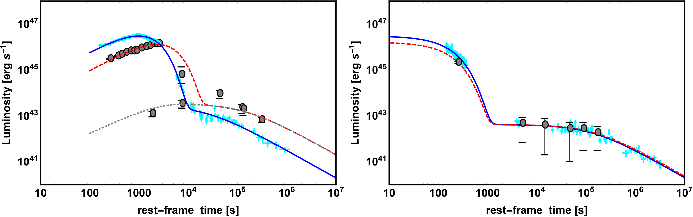
图注：Fits of non-thermal (cyan data and blue curve) and thermal (gray data and red-dashed curve) components of LGRBs~060218A and 171205A. For LGRB~060218A some data points on the boosted SN emission have been obtained from early optical data and their behavior is shown with a gray dotted curve. The corresponding parameters are given in Table~\(\ref{tab:1}.\)
对应解读：对应“建议重点查看的图表”第1、2、5项，以及“关键图表逐图导读”中关于GRB 060218A/SN 2006aj与GRB 171205A/SN 2017iuk热/非热光变拟合的核心解读。
入选理由：这是候选图中唯一直接展示两例GRB-SN事件非热X射线余辉与热成分光变数据及模型曲线的图，能直接检验论文最核心结论：热光度和非热光度是否在平台前呈现相似时间演化，以及同一解析框架是否能同时拟合两个事件。相比其他候选图，它包含真实观测数据点、热/非热模型线和两例目标源，是日报详细解读最需要嵌入的主图。
来源与置信度：\(arxiv_source\)；high；\(arxiv_source\) / Afterglow.tex:figure[2]
Fig01
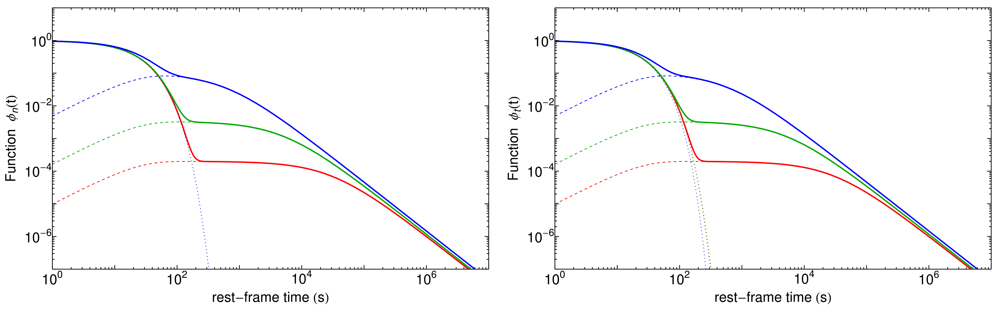
图注：{\(\it\) Left panel}: plot of $\phi_n(t)$ obtained by fixing $\tau_c=20$~s and $\alpha=-1.5$, and setting: $(\tau_j,\,\tau_n)=(600\,{\rm s},\,200\,{\rm s})$ (blue curve), $(5000\,{\rm s},\,6000\,{\rm s})$ (green curve), and $(30000\,{\rm s},\,10^5\,{\rm s})$ (red curve). {\(\it\) Right panel}: plot of $\phi_t(t)$ obtained by fixing $\tau_0=20$~s and $\alpha=-1.5$, and setting $(\tau_h,\,\tau_t)$ with the same values of $(\tau_j,\,\tau_n)$ and the same color and symbol code.
对应解读：对应“关键图表逐图导读”中模型示意/解析模型行为部分，也对应“模型拟合”段落中关于非热时标、热扩散/响应时标如何控制光变形状的说明。
入选理由：该图展示解析模型中非热函数phi_n(t)与热函数phi_t(t)在不同特征时标组合下的时间行为，有助于读者理解拟合参数如tau_j、\(tau_n\)、\(tau_h\)、tau_t如何改变早期上升、平台和衰减形状。它不含观测数据，但能支撑日报对模型物理压缩含义和时标关联的解释。
来源与置信度：\(arxiv_source\)；high；\(arxiv_source\) / Afterglow.tex:figure[1]
Fig03
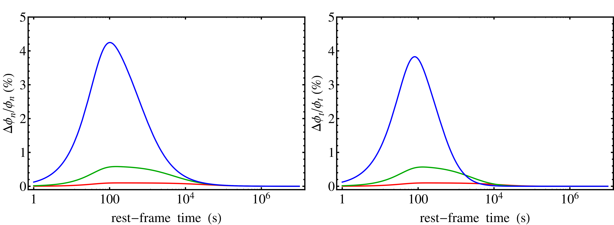
图注：Accuracies of the approximated solutions $\Delta \phi_n(t)/\phi_n(t)$ (left panel) and $\Delta \phi_t(t)/\phi_t(t)$ (right panel) obtained for the same values selected for Fig.~\(\ref{fig:1},\) marked with the same choice of colors.
对应解读：对应“模型拟合”段落中对解析近似可靠性、模型诊断和系统误差的讨论，但不是观测残差图。
入选理由：该图给出近似解析解相对精确解的误差Delta phi/phi，可用于判断论文所用闭合表达式本身的数值准确性。它不是热/非热光变拟合残差，也不能直接检验观测拟合优度，因此科学优先级低于Fig02和Fig01，但仍可作为模型有效性诊断的辅助图。
来源与置信度：\(arxiv_source\)；high；\(arxiv_source\) / Afterglow.tex:figure[3]
强相关工作
这篇工作直接处在 GRB—SN 成协、低光度长暴、热 X 射线成分和喷流 cocoon 研究的交叉点。GRB 060218A/SN 2006aj 是同类研究的历史原型之一，相关论文常讨论其长持续时间软 X 射线辐射、热成分、shock breakout 解释以及 SN 2006aj 的低质量高能爆炸性质。GRB 171205A/SN 2017iuk 则是较新的近邻 GRB—SN 事件，常用于讨论喷流突破、早期超新星光谱和非球对称抛射物。
与相似工作相比，本文不是做新观测发现，也不是完整数值模拟，而是提出统一解析参数化。应把它与三类文献对读：一类是标准 GRB 余辉同步辐射理论，检索关键词为 “GRB afterglow synchrotron external shock”；第二类是 GRB 060218A 热成分和 shock breakout 解释，检索关键词为 “GRB 060218 SN 2006aj thermal component shock breakout”；第三类是喷流 cocoon 与窒息喷流模型，检索关键词为 “GRB supernova cocoon thermal emission jet breakout”。如果要找可能相反观点，应检索强调球对称 shock breakout 或独立超新星冷却即可解释热成分的论文。
同一事件 / 同类源线索：
相似工作：
（未提供）
基础理论 / 方法工作：
（未提供）
相反观点 / 张力线索：
（未提供）
4. Simulation of combined radio and radar signals at the Radar Echo Telescope for Cosmic Rays
- 来源：arXiv / astro-ph.HE
- 链接：https://arxiv.org/abs/2607.24955v1
- 作者：K. Nivedita, I. Loudon, J. Loonen, P. Allison, J. J. Beatty, D. Z. Besson, A. Connolly, A. Cummings
- 评分：novelty 7/10，importance 7/10，relevance 9/10，final 8.70/10
- 推荐理由：RET-CR/RET-N相关的高能宇宙线与超高能中微子探测技术模拟，首次组合射电、Askaryan和雷达回波信号框架；对>10 PeV中微子天文学和宇宙线仪器方法有明确价值。
中文题目：RET-CR 中宇宙线空气簇射无线电信号与冰内雷达回波信号的联合模拟
做了什么：这篇文章为 Radar Echo Telescope for Cosmic Rays（RET-CR）建立了一个联合模拟框架，用来同时预测三类会到达浅层冰内接收天线的信号：空气簇射本身的无线电辐射、簇射核进入冰层后产生的 Askaryan 脉冲，以及发射机信号被冰内电离尾迹散射后的雷达回波。核心问题不是单独证明某一种辐射机制，而是回答在真实 RET-CR 几何和冰层环境下，这三种信号在时间、空间足迹和波形上如何相互区分、相互污染或相互辅助。它的重要性在于，RET-CR 是未来用雷达技术探测超高能中微子级联的 RET-N 的前驱实验；如果不能理解宇宙线标定样本中的联合信号，就很难判断雷达法是否真的可扩展到大体积冰内中微子探测。
为什么重要：高能中微子天文学在 \(E\gtrsim 10\\,\mathrm{PeV}\) 以上受到有效体积和成本的强限制。Askaryan 阵列已经是成熟路线，但雷达法若可行，可能利用发射机照亮更大冰体，对长寿命电离等离子体尾迹进行主动探测。RET-CR 的价值在于用自然宇宙线在冰面附近制造类似冰内级联的标定事件；本文则给出把空气无线电、冰内 Askaryan 和雷达回波放在同一时域、同一阵列几何下比较的工具。
理论 / 观测 / 仪器方法价值：对理论和方法的价值主要体现在三个方面：第一，它把原本分散的空气簇射无线电模拟、冰内 Askaryan 发射模拟和雷达散射/传播模拟连接起来；第二，它给出不同信号分量在浅层冰内接收器上的到达时间、极化、空间足迹和波形差异，可用于触发、重建和背景剔除；第三，它为 RET-N 的设计提供了可迁移的端到端仿真思想，尤其是发射机频率、接收器深度、站点布局和信号分类策略的优化。
为什么应该关注：如果你关注超高能中微子、冰内射电探测、Askaryan 阵列或主动雷达探测，这篇文章值得看，因为它处理的是未来实验成败前必须解决的现实问题：实际接收器看到的不是干净的单一物理信号，而是多个相近时间尺度、相近频段、经过冰层折射和天线响应调制后的叠加波形。本文提供的模拟框架可以帮助判断哪些观测特征是真雷达回波的判据，哪些可能只是空气簇射无线电或冰内 Askaryan 脉冲的混淆。
展开详细解读：文章讲解、背景、理论、重点章节、图表与相关工作
文章详细讲解
科学问题：RET-CR 想验证一种相对激进的高能粒子探测路线，即用主动雷达探测冰内粒子级联留下的电离尾迹。传统 Askaryan 探测依赖级联自身产生的相干射电脉冲，而雷达法还需要考虑发射机信号如何照亮短寿命等离子体、散射后如何穿过冰层到达接收器。对 RET-CR 来说，宇宙线空气簇射核撞入高海拔冰盖，会在浅层冰内产生次级级联，因此它既是背景又是标定源。难点在于同一事件会同时产生空气簇射无线电、冰内 Askaryan 辐射和主动雷达回波，三者到达同一批冰内天线时可能在时间和频率上接近。
作者怎么做：文章的主要贡献是构建一个联合模拟包，把 RET-CR 中必须同时考虑的信号链放进统一几何中。模拟从高能宇宙线空气簇射开始，跟踪簇射在空气中的无线电发射；随后处理簇射核进入冰层后的二次级联及其 Askaryan 辐射；最后计算发射机电磁波与冰内电离尾迹的雷达散射，并传播到浅层冰内接收器。文章特别强调信号的空间足迹和时间结构，而不是只给出一个总能量或单天线振幅，因为对于实验判别来说，到达时间排序、波形宽度、极化和阵列相关性往往比单个峰值更有诊断力。
关键结果：按摘要给出的信息，本文展示了三类信号在冰内接收器上的显著特征。空气簇射无线电信号来自冰面上方，传播路径和波前几何与冰内源不同；冰内 Askaryan 信号来自浅层级联，具有由 Cherenkov 几何控制的空间足迹；雷达信号则携带发射机调制和散射几何的印记，预期在时域上与前两类脉冲有不同的延迟和持续时间。联合模拟使研究者能判断在什么接收器位置、什么触发时间窗和什么频率处理方式下，雷达分量最可能被单独识别出来。
局限和下一步：这类模拟工作的限制通常不在某一个公式，而在端到端链条中的系统误差叠加。关键不确定性包括高海拔冰层的折射率剖面、冰的射频衰减长度、空气簇射核进入冰后的能量沉积、等离子体寿命和碰撞频率、发射机与接收天线响应、以及真实噪声环境。下一步应当是把模拟与 RET-CR 实测触发事件逐项比较，用时间残差、振幅分布、极化和站间相关性检验模型；再进一步，利用宇宙线样本反推雷达散射模型中最不确定的等离子体参数，为 RET-N 的高能中微子灵敏度估计提供实测约束。
关键结果是怎么做出来的
本文最重要的结果不是一个单独的探测显著性数字，而是给出了 RET-CR 事件中三种物理信号的统一可比预测。样本选择在模拟层面以高能宇宙线空气簇射为起点，重点关注簇射核能够进入高海拔冰层并在浅层冰内产生明显次级级联的几何。这样的事件对 RET-CR 特别有用，因为空气段提供可预期的无线电标记，冰内段提供与高能中微子级联相似的 Askaryan 和雷达测试目标。
证据链的第一步是把空气簇射无线电传播到冰内接收器。这里要检查的是空气信号的足迹是否会覆盖 RET-CR 的浅层天线，以及它的到达时间是否可能与冰内信号重合。若空气无线电在多数接收器上形成强而短的脉冲，它既可作为事件时间零点，也可能在雷达回波搜索中形成强背景。因此，文章关注空间足迹和时间特征是合理的：只有知道不同天线上空气脉冲的相对时延，才能定义后续雷达候选的时间窗。
证据链的第二步是冰内 Askaryan 分量。该分量由簇射核入冰后的电荷不对称发展产生，空间分布通常受冰中 Cherenkov 角和浅层折射影响控制。关键诊断量是接收器振幅随横向距离和深度的变化、脉冲宽度、极化方向以及相对于空气无线电脉冲的延迟。如果 Askaryan 分量在某些几何下很强，它会成为验证冰内级联能量沉积模型的手段；如果它与雷达分量在时间上接近，则需要波形或频谱判别。
证据链的第三步是雷达散射信号。雷达分量与前两者不同，它不是单纯的瞬时宽带脉冲，而是由发射机波形、等离子体尾迹反射/散射和传播路径共同决定。本文的联合模拟使研究者可以看雷达候选是否出现在符合双程传播延迟的位置，是否带有发射机频率结构，是否在阵列中呈现与散射点几何一致的相干时间模式。模型比较在实际分析中可写成“空气加 Askaryan”与“空气加 Askaryan 加雷达”的波形似然对比；本文为这种对比提供了模板。
稳健性方面，读者应重点看作者如何处理冰层介质、接收器响应和等离子体参数。如果雷达回波只在非常乐观的等离子体寿命或散射截面假设下可见，那么它对 RET-N 的外推价值有限；如果在合理参数范围内，雷达分量仍表现出清晰的到达时间和频谱特征，则说明 RET-CR 有机会通过实测事件校准雷达技术。支撑结论的图表应包括阵列平面上的足迹图、各接收器波形叠加图、三分量分解图以及参数变化下的振幅或信噪比响应。
展开背景、理论、公式、模型、章节和图表导读
背景知识
研究对象是 RET-CR，即 Radar Echo Telescope for Cosmic Rays。它不是一个常规宇宙线能谱实验，而是为未来 Radar Echo Telescope for Neutrinos（RET-N）服务的前驱验证平台。其核心思想是利用高能宇宙线空气簇射的簇射核进入冰层，在冰内产生与超高能中微子相似的粒子级联，从而测试主动雷达探测冰内级联的可行性。
历史上，冰内高能粒子射电探测主要围绕 Askaryan 效应发展。级联中正负电荷数略不对称，形成快速运动的净负电荷团，在无线电波段产生相干 Cherenkov 辐射。RICE、ANITA、ARA、ARIANNA、IceCube-Gen2 Radio 等项目都与这一思想有关。雷达探测则更困难：它要求级联留下的电离介质在足够长时间内对射频波表现出可散射或反射特性，同时散射信号还要能在热噪声和直接串扰中被识别。
为什么现在值得重新看？一方面，\(10\\,\mathrm{PeV}\) 到 EeV 能区的中微子通量仍高度不确定，常规光学 Cherenkov 探测器在更高能区受体积限制；另一方面，射频技术、现场同步、宽带数字采样和端到端模拟能力都比早期雷达设想成熟得多。RET-CR 的意义在于用可预期的宇宙线事件在真实冰层环境中进行工程和物理校准，而不是直接跳到稀有中微子候选。
这个领域的常见误区之一是把“有电离尾迹”直接等同于“有强雷达回波”。实际上，回波强度取决于等离子体频率、电子碰撞频率、寿命、尾迹尺度、入射波频率、几何相干性和冰中衰减。另一个误区是把空气簇射无线电当作单纯背景；在 RET-CR 中，它也可能是关键的时间和方向标定信号。第三个误区是认为 Askaryan 信号和雷达信号很容易分开；在浅层几何下，两者可能都进入同一接收时间窗，必须依赖阵列波前、频谱和极化联合判别。
基础理论 / 方法脉络
从物理图像看，高能宇宙线进入大气后产生扩展空气簇射。带电粒子在地磁场中偏转产生主导的地磁无线电辐射，同时还存在由电荷盈余引起的 Askaryan-like 空气无线电分量。对于 RET-CR，这个空气段辐射会穿过空气-冰界面并到达浅层冰内天线，成为最早且常常较强的脉冲分量之一。
当簇射核心到达冰面并继续在冰中发展时，它会形成更紧凑的电磁/强子级联。冰中介质折射率较高，Cherenkov 条件决定了 Askaryan 脉冲的角分布；在无线电波长大于或可比级联横向尺度时，辐射近似相干，场强随级联能量近似线性增长，功率随能量近似二次增长。接收器实际看到的波形还要乘以冰中传播衰减、折射路径和天线方向图。
雷达分量的基础图像则是主动探测。发射机发出已知频率或波形的电磁波，照射到级联留下的电离电子尾迹；如果等离子体对入射射频的响应足够强，且寿命足以覆盖入射和散射过程，则一部分能量会被散射到接收天线。这里的关键量包括电子数密度、等离子体频率、碰撞频率、尾迹寿命、发射频率、散射几何和双程传播损耗。
本文的模型假设可以概括为三条链路：源项、传播项和仪器响应。源项包括空气簇射无线电、冰内 Askaryan 源以及雷达散射源；传播项包括空气和冰的折射、界面透射、几何扩散与吸收；仪器项包括发射天线、接收天线、带通、采样和噪声。常见退化是信号振幅不足时无法区分“源弱”和“传播/天线响应弱”，到达时间不确定时无法区分“几何误差”和“折射率模型误差”，频谱差异不明显时无法区分“雷达回波”和“滤波后的 Askaryan 脉冲”。
公式与推导
第一步从级联能量沉积出发。若入射宇宙线能量为 \(E_{\rm CR}\)，进入冰内级联的能量可写成
其中 \(f_{\rm core}\) 表示簇射核心入冰后保留下来并转化为冰内级联的能量比例。这个量受初级质量、入射天顶角、冰面高度和空气簇射发展阶段影响，是连接空气事件与冰内类中微子级联的第一层不确定性。
第二步是 Askaryan 相干辐射的尺度关系。在相干频段内，远场电场幅度近似满足
其中 \(\nu\) 是频率，\(R\) 是源到接收器的传播距离，\(\theta\) 是相对于级联轴的观测角，(A(\
u,\theta)) 包含 Cherenkov 锥和级联形状因子，(L_{\rm att}(\
u)) 是冰中射频衰减长度。这个公式说明振幅同时受能量、几何和冰性质控制。
第三步是 Cherenkov 几何。冰中相干辐射的峰值角大致由
给出，其中 \(n_{\rm ice}\) 是冰的折射率，\(\beta c\) 是级联中相对论带电粒子的速度。由于 \(\beta\simeq 1\)，\(\theta_{\rm C}\) 主要由 \(n_{\rm ice}\) 决定；浅层冰中 \(n_{\rm ice}\) 的深度变化会弯曲射线路径并改变足迹。
第四步是雷达散射介质的等离子体响应。电离电子数密度 \(n_e\) 对应的等离子体角频率为
其中 \(e\) 是元电荷，\(m_e\) 是电子质量，\(\epsilon_0\) 是真空介电常数。若入射角频率 \(\omega=2\pi\nu\) 与 \(\omega_p\)、碰撞频率 \(\nu_c\) 的关系合适，电离尾迹才可能提供有效散射；否则信号会被强阻尼或呈现弱的欠密度散射。
第五步可用简化雷达方程估计回波功率：
其中 \(P_t\) 是发射功率，\(G_t\) 和 \(G_r\) 是发射与接收增益，\(\lambda\) 是波长，\(\sigma_{\rm eff}\) 是电离尾迹的有效雷达截面，\(R_t\) 和 \(R_r\) 分别是发射机到散射区、散射区到接收器的距离。该式展示了主动雷达的强几何惩罚：双程传播导致距离依赖比单次 Askaryan 传播更陡。
第六步是到达时间诊断。对一个候选散射点 \(\mathbf{x}_s\)，雷达信号到接收器 \(i\) 的到达时刻可近似写为
其中 \(t_0\) 是发射参考时间，\(n(\mathbf{x})\) 是沿路径变化的折射率，\(dl\) 是路径元。空气无线电和 Askaryan 脉冲通常没有发射机到散射点这一段，因此三者的站间时延模式不同。
第七步是接收电压与电场的关系。接收器记录的频域电压可写成
其中 \(\mathbf{h}_i\) 是天线有效长度向量，\(\hat{\mathbf{k}}\) 是入射方向，\(\mathbf{E}_i\) 是传播到天线的电场，\(N_i\) 是噪声和电子学贡献。不同极化和方向的信号会被天线响应不同地投影，这正是联合模拟必须包含仪器响应的原因。
第八步是波形模型比较。若数据为 \(d_i(t)\)，三分量模板为 \(m_i(t;\boldsymbol{\theta})=m_i^{\rm air}+m_i^{\rm Ask}+m_i^{\rm rad}\)，高斯噪声下的似然可写成
其中 \(\boldsymbol{\theta}\) 包括能量、方向、核心位置、散射参数和时间偏移，\(\sigma_i\) 是通道噪声。比较有无雷达项的 \(\Delta(-2\ln\mathcal{L})\) 可作为实际数据中雷达分量显著性的诊断。
模型拟合 / 应用方法
虽然本文是模拟框架论文，实际应用中仍然自然对应到一个多分量波形拟合问题。待拟合量包括宇宙线能量与方向、核心落点、冰内级联能量比例、Askaryan 源位置与轴向、雷达散射区位置、等离子体寿命或有效截面、发射机时间零点、以及每个接收通道的增益和时延校准。观测量则是多通道电压波形、频谱、触发时间、相对相位和极化投影。
似然可以按时间域波形残差构造，也可以在频域中利用发射机频率结构进行匹配滤波。对空气无线电和 Askaryan 脉冲，短脉冲模板的峰值时间、带宽和极化很重要；对雷达分量，发射波形的相干匹配、双程传播延迟和持续时间更关键。实际分析中很可能先用空气无线电确定事件方向和时间，再在相应几何下预测冰内 Askaryan 与雷达候选窗口。
主要退化关系包括：\(E_{\rm ice}\) 与冰中衰减长度之间的振幅退化，核心位置与 Cherenkov 锥命中位置之间的几何退化，等离子体有效截面与发射/接收增益之间的归一化退化，以及折射率剖面误差与到达时间残差之间的退化。若只看单个天线的峰值，几乎无法可靠区分这些效应；必须利用阵列的站间时延、空间足迹和极化一致性。
系统误差的处理应包括冰层模型、天线方向图、电子学带通、触发偏差、热噪声、发射机串扰和环境射频干扰。尤其对雷达搜索，直接发射机漏入接收器的信号可能比真实散射强得多，因此模板拟合必须允许并剔除直接耦合项。残差诊断应看三个层面：单通道波形残差是否呈随机噪声，多通道残差是否有共同相干结构，参数改变后雷达候选是否仍出现在相同物理几何上。
这种模型拟合的实际用途不止是“发现雷达回波”。即使未检测到明确回波，也能给出等离子体散射强度或寿命的上限，从而约束 RET-N 的可行参数空间。若检测到候选回波，则需要用宇宙线空气无线电和 Askaryan 分量作为内部交叉校准，证明候选的时间延迟、频率结构和阵列相干性不能由常规射电脉冲或仪器串扰解释。
重点章节 / 结果段落怎么读
数据/样本与实验几何部分应首先读。重点是 RET-CR 的发射机、浅层冰内接收器、冰面和宇宙线入射几何如何定义。读者应确认模拟针对的是哪些能量、天顶角、核心落点和接收器深度，因为这些选择直接决定三类信号是否有机会同时被看到。
模拟框架部分是本文核心。应看作者如何连接空气簇射无线电、冰内 Askaryan 和雷达散射三套计算，尤其是坐标系、时间零点、传播介质和天线响应是否统一。如果不同模块之间只传递简化量，需注意哪些物理细节可能被平均掉。
信号空间足迹部分应重点读二维分布图和接收器位置上的振幅变化。空气无线电、Askaryan 和雷达三者的足迹形状不同：空气分量与空气簇射波前和界面透射有关，Askaryan 分量与冰中 Cherenkov 锥有关，雷达分量与发射机-散射区-接收器的双基地几何有关。
时间特征和波形部分应紧接着读。核心问题是三分量到达时间是否可分离，脉冲宽度和频率结构是否足够不同，以及接收器之间的相对时延能否提供稳健判据。对实验分析者来说，这一部分比总能量估计更直接。
讨论和稳健性部分应检查作者如何看待 RET-CR 到 RET-N 的外推。宇宙线入冰级联与中微子深冰级联并不完全相同：入射方向、顶点深度、背景环境和可用外部标记都不同。因此应看作者是否明确区分“验证雷达物理机制”和“直接给出中微子灵敏度”这两件事。
建议重点查看的图表
-
RET-CR 几何示意图：应看发射机、接收器、冰面、空气簇射轴和冰内级联的位置关系，尤其是浅层天线深度和基线长度。
-
三种信号的空间足迹图：应比较空气无线电、冰内 Askaryan 和雷达回波在接收器平面或冰面投影上的振幅分布，看足迹峰值位置是否相互错开。
-
多通道时域波形图：应看每个接收器上的到达顺序、峰值时间、脉冲宽度和是否存在雷达分量的延迟结构。
-
三分量分解图：应确认总波形中的每个特征分别由空气、Askaryan 还是雷达贡献，避免把叠加峰误读为单一机制。
-
频谱或带通后波形诊断：应看雷达分量是否保留发射机频率特征，而 Askaryan 与空气无线电是否更接近宽带脉冲。
-
参数扫描或稳健性表：应检查能量、核心位置、入射角、冰衰减长度、等离子体参数变化时，雷达可见性的变化幅度。
关键图表逐图导读
图 1：通常应是实验或模拟几何图。横纵坐标可能为空间坐标或示意距离，包含冰面、空气簇射轴、入冰点、发射机和浅层接收器。读图重点是发射机到散射区、散射区到接收器的双基地路径，以及空气无线电和 Askaryan 信号的单程传播路径。陷阱是不要把示意图中的比例尺当作真实阵列尺寸，需回到表格或正文确认深度和距离。
图 2：应关注空气簇射无线电足迹。若坐标是接收器平面位置，颜色通常代表峰值电场或电压。模型线或色带若显示波前结构，读者应看足迹是否覆盖全部浅层阵列，以及强信号区是否与簇射轴投影或 Cherenkov-like 环结构相关。陷阱是空气信号经过空气-冰界面透射后，振幅分布不能简单等同于地表天线观测的足迹。
图 3：应关注冰内 Askaryan 分量。坐标可能同样是阵列平面或接收器编号，颜色/点值表示峰值振幅或到达时间。读图时要看 Cherenkov 锥命中哪些接收器，以及 Askaryan 分量相对于空气无线电是否有可分辨的延迟。陷阱是 Askaryan 足迹的强弱高度依赖入冰能量和冰中折射率剖面，不能只凭单一事件外推所有几何。
图 4：应是雷达信号足迹或波形。读者应看雷达分量是否呈现双程传播导致的更晚到达时间，是否与发射机波形相关，以及哪些接收器满足有利散射角。若图中有不同等离子体参数的曲线，应看幅度变化是否跨越数量级。陷阱是延迟出现的窄带结构也可能来自发射机串扰或滤波振铃，必须结合几何一致性判断。
图 5：若文章给出三分量叠加的时域波形，这是最值得细看的图。横轴应为时间，纵轴为电压或电场，不同颜色表示空气、Askaryan、雷达和总和。读图重点是峰的重叠程度、符号相位、脉冲宽度以及残余结构。陷阱是总波形的最大峰不一定是雷达信号；雷达判别常依赖较弱但相干的延迟特征。
图 6：若有参数扫描、信噪比或可探测性图，应看横轴参数如入射能量、核心距离、发射频率或散射截面，纵轴如峰值场强、信噪比或触发概率。关键是识别结论是否只在窄参数区间成立，以及系统误差带是否与模型差异同量级。
论文原图 / 可嵌入图片
Fig09
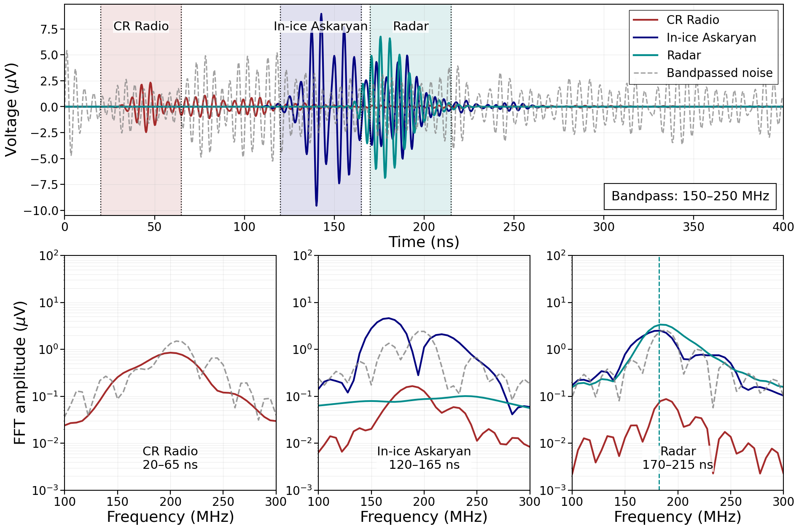
图注：Top: First order demonstration for voltage estimates at RET-CR within a bandpass of 150--250 MHz, for a cosmic ray primary proton of energy $10^{18}$eV and a vertical shower. Bottom: Signal Spectrum for the corresponding time windows corresponding to the three signal components - CR Radio (left), In-ice Askaryan (center), and radar signal (right).
对应解读：对应“建议重点查看的图表”第3、4、5项，以及“关键图表逐图导读”中关于三分量叠加、带通后波形和频谱诊断的部分。
入选理由：该图直接给出150–250 MHz带通后的电压估计，并把时间窗对应到 CR Radio、In-ice Askaryan 和 radar signal 三个分量的频谱，是区分三种机制、判断雷达是否保留发射机频率结构的最核心诊断图。相比只展示总场或单一几何的图，它最能支撑日报中关于多分量波形拟合、频域匹配滤波和避免误判叠加峰的讨论。
来源与置信度：\(arxiv_source\)；high；\(arxiv_source\) / cas-dc-template.tex:figure[9]
Fig04
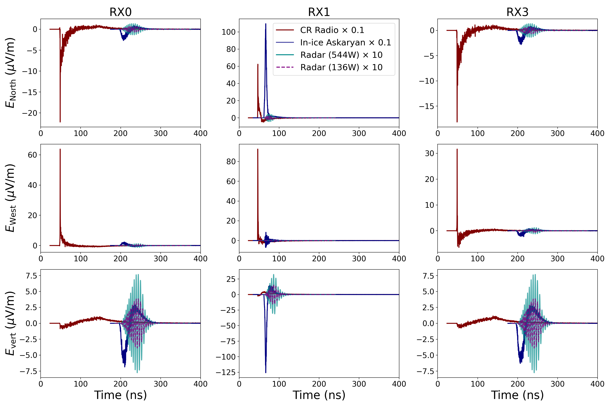
图注：Combined radio and radar signals simulated for all polarizations at the three RET-CR receivers for the geometry shown in Figure \(\ref{fig:configuration}(i).\) The amplitudes are scaled for clarity of presentation and are not directly comparable in this figure.
对应解读：对应“建议重点查看的图表”第3、4项，以及“关键图表逐图导读”中图5式的多通道时域波形和三分量叠加解读。
入选理由：该图展示RET-CR三个接收器、所有极化下的联合 radio 和 radar 模拟信号，是判断不同接收通道到达顺序、峰值时间、脉冲宽度和可能延迟结构的关键图。虽然图注说明振幅被缩放、不可直接比较，但它仍然最直接呈现同一事件在浅层接收阵列中的时域形态。
来源与置信度：\(arxiv_source\)；high；\(arxiv_source\) / cas-dc-template.tex:figure[4]
Fig06
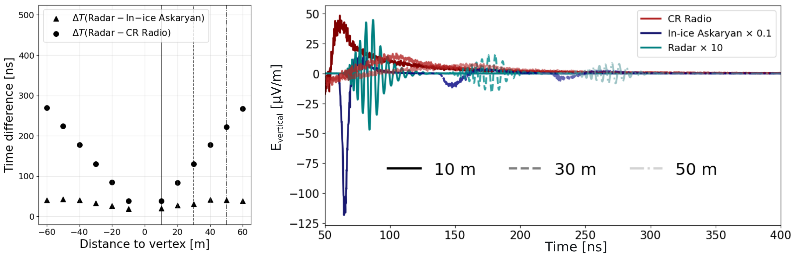
图注：Left: Arrival-time difference as a function of observer position relative to the shower vertex, evaluated for various observer locations between $-60$ m and $+60$ m. The dashed vertical lines indicate the three representative observer positions at 10 m, 30 m, and 50 m from the vertex. Right: Simulated signals for these three observer locations. The corresponding geometry is shown in Figure~\(\ref{fig:configuration}(ii).\) The amplitudes are scaled for clarity of presentation and are not directly comparable in this figure.
对应解读：对应“建议重点查看的图表”第3、6项，以及模型拟合段落中关于站间时延、几何退化和到达时间残差的讨论。
入选理由：左图给出到达时间差随观测者相对簇射顶点位置的变化，右图给出三个代表位置的模拟波形，能直接检验空气无线电、Askaryan和雷达候选信号是否可由时延结构分开。它比单纯示意图更能支撑日报中强调的阵列时延诊断和几何一致性判断。
来源与置信度：\(arxiv_source\)；high；\(arxiv_source\) / cas-dc-template.tex:figure[6]
Fig08
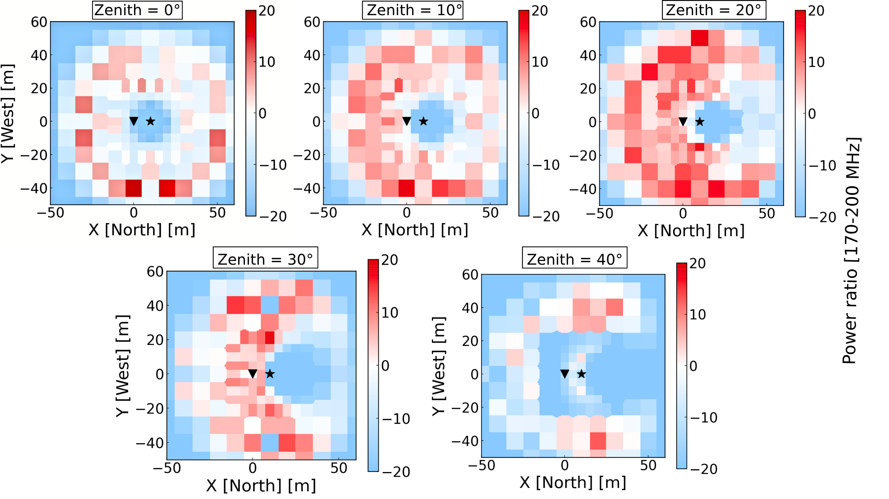
图注：Heat map that depicts regions with higher radar emission in a narrow bandwidth of 170-200 MHz. Zenith angles for the secondary cascade are $0^\circ$, $10^\circ$, $20^\circ$, $30^\circ$, and $40^\circ$. The transmitter (TX) is indicated by ($\blacktriangle$), while the shower core is marked by ($\bigstar$).
对应解读：对应“建议重点查看的图表”第2、6项，以及“关键图表逐图导读”中关于雷达信号空间足迹、散射角和入射角依赖的解读。
入选理由：该热图显示170–200 MHz窄带中雷达发射较强的空间区域，并比较不同次级级联天顶角，直接对应雷达可见性和空间足迹问题。它能帮助读者判断哪些接收位置更有利于雷达回波探测，以及结论是否依赖入射角。
来源与置信度：\(arxiv_source\)；high；\(arxiv_source\) / cas-dc-template.tex:figure[8]
Fig05
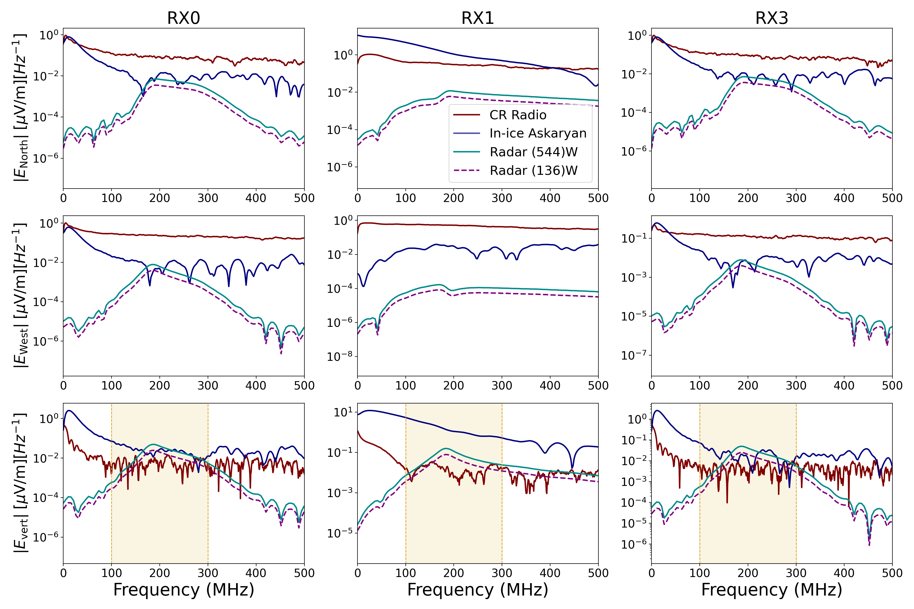
图注：Combined radio and radar spectrum simulated for all polarizations at the three RET-CR receivers for the geometry shown in Figure \(\ref{fig:configuration}.\) The corresponding electric fields are in Figure \(\ref{fig:case_study}.\) RET-CR receiver bandwidth is indicated by the yellow band.
对应解读：对应“建议重点查看的图表”第5项，以及模型拟合段落中关于频域匹配滤波、接收器带宽和发射机频率结构的讨论。
入选理由：该图给出三个RET-CR接收器、所有极化的联合 radio/radar 频谱，并标出RET-CR接收器带宽。它是判断哪些信号成分落入有效带宽、雷达窄带结构是否可观测、以及频域分析是否可行的重要补充。
来源与置信度：\(arxiv_source\)；high；\(arxiv_source\) / cas-dc-template.tex:figure[5]
Fig01
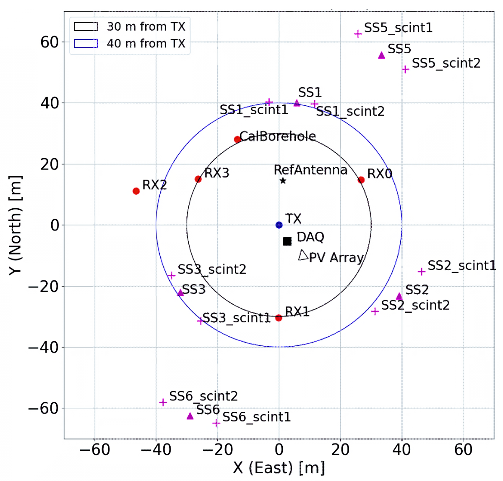
图注：The RET-CR experimental layout (taken from GNSS satellite survey) is depicted. The surface stations (SS) (($+$) denotes the scintillator panels, while the solid triangles ($\blacktriangle$) denote the radio antennas), and the in-ice radar system (TX and RX) are labelled.
对应解读：对应“建议重点查看的图表”第1项和“关键图表逐图导读”中图1的实验几何说明。
入选理由：该图是真实RET-CR实验布局，标出地表站、闪烁体、无线电天线以及冰内TX/RX系统，是理解双基地雷达路径、浅层接收器位置和阵列基线的基础。虽然它不直接展示信号诊断量，但对后续所有波形、频谱和空间足迹图的几何解释不可缺少。
来源与置信度：\(arxiv_source\)；high；\(arxiv_source\) / cas-dc-template.tex:figure[1]
强相关工作
这篇工作处在 Askaryan 射电中微子探测与主动雷达探测的交界处。相似观测和实验包括 ARA、ARIANNA、RNO-G、ANITA 以及 IceCube-Gen2 Radio，它们主要使用被动 Askaryan 信号；RET-CR/RET-N 则尝试利用主动发射机增加可控信号源和可能的探测体积。检索关键词可用 “Radar Echo Telescope cosmic rays”, “RET-CR”, “RET-N”, “radar detection particle cascades in ice”, “Askaryan radio detection neutrinos”。
基础理论上应追溯 Askaryan 效应、介质中相干 Cherenkov 射电辐射、冰中射频传播和等离子体雷达散射。相反或张力观点主要集中在雷达回波是否足够强、冰内级联电离寿命是否足够长、以及实验中能否把真实散射与发射机串扰/常规无线电脉冲分开。建议检索 “radar detection of high energy neutrinos”, “plasma lifetime ice particle cascade”, “TARA radar cosmic ray detection”, “bistatic radar particle shower”。
就同类源或同类事件而言，本文不是关于某个命名天体源或单个瞬变事件，而是关于 RET-CR 仪器和模拟方法；因此 \(source_context_links\) 主要应放实验、方法和同类探测技术页面，而不是同一源论文。若需要扩展阅读，应优先查 arXiv 和 NASA ADS 中 RET-CR、RET-N、TARA、ARA、ARIANNA 与 IceCube-Gen2 Radio 的方法论文和综述。
同一事件 / 同类源线索：
相似工作：
基础理论 / 方法工作：
- https://doi.org/10.1016/0029-554X(62)90146-2
- https://arxiv.org/abs/hep-ex/0205043
- https://arxiv.org/abs/astro-ph/0102607
相反观点 / 张力线索：
（未提供）
5. Progenitor and Explosion Mechanism of 3C 397 Indicated from XRISM High-resolution Spectroscopy of Fe-group Elements
- 来源：arXiv / astro-ph.HE
- 链接：https://arxiv.org/abs/2607.25575v1
- 作者：Hiroshi Nakajima, Yuken Ohshiro, Shing-Chi Leung, Koji Mori, Yoshiaki Kanemaru, Yoshitomo Maeda, Hiroya Yamaguchi, Masayoshi Nobukawa
- 评分：novelty 8/10，importance 8/10，relevance 7/10，final 8.65/10
- 推荐理由：XRISM high-resolution spectroscopy of SNR 3C 397 gives strong abundance constraints on Type Ia progenitor density and explosion mechanism; important HE/X-ray observational result with reusable calorimeter-era methods.
中文题目：XRISM 高分辨率光谱揭示 3C 397 的近钱德拉白矮星前身星与爆炸机制
做了什么：这篇文章用 XRISM 的 Resolve 微量热计和 Xtend 成像谱仪对 Ia 型超新星遗迹 3C 397 的东半部做空间分辨 X 射线光谱分析，重点测量 Ti、Cr、Mn、Fe、Ni 等铁族元素的 K 壳层发射线。作者发现东南区域的 Ti/Fe 与 Cr/Fe 质量比只能由爆炸白矮星内层的高密度电子俘获、也就是中子化环境解释，从核合成模型比较推断前身星接近钱德拉质量；同时，全视场 Ni/Fe 偏高，暗示除电子俘获外还需要较高初始金属丰度等额外中子化来源。
为什么重要：3C 397 长期被认为是近钱德拉质量 Ia 型超新星的强候选，但过去 CCD 光谱受能量分辨率限制，Ti、Cr、Mn、Fe、Ni 线系的分离和等离子体建模存在较大退化。XRISM Resolve 的高分辨率让铁族元素线宽、线心和线通量约束更直接，使“近钱德拉质量白矮星是否真的留下了可测核合成指纹”这个问题有了更硬的观测证据。
理论 / 观测 / 仪器方法价值：这项工作的价值不只在于给 3C 397 贴上“近钱德拉质量”标签，而是展示了高分辨率 X 射线谱如何把超新星遗迹中的元素丰度、非平衡电离状态、速度展宽和核合成模型连接起来。对理论而言，它给延迟爆轰和湍动纯爆燃模型的中心密度提供了观测下限；对观测而言，它说明 Ti、Cr、Ni 的空间差异可以成为判别爆炸密度结构和前身星金属丰度的工具；对仪器方法而言，它是 XRISM Resolve 研究扩展源化学丰度的一个标杆案例。
为什么应该关注：如果你关心 Ia 型超新星如何作为宇宙学标准烛光、白矮星爆炸是否主要来自近钱德拉质量通道、或者 X 射线微量热计能给遗迹物理带来什么新约束，这篇文章都值得读。它把“元素丰度比”从低分辨率谱拟合中的模型参数推进到可以与具体核反应环境、中心密度和中子化机制相联系的诊断量。
展开详细解读：文章讲解、背景、理论、重点章节、图表与相关工作
文章详细讲解
科学问题：3C 397 是银河系内一个 X 射线明亮、富铁的超新星遗迹，长期被归类为 Ia 型爆炸产物，并且因为 Mn、Ni 等中子化元素相对 Fe 偏高，被认为可能来自接近钱德拉质量的白矮星。核心问题是：这些丰度异常究竟能否被高密度电子俘获核合成解释？还是可以由亚钱德拉爆炸、前身星金属丰度、环境混合或低分辨率谱拟合偏差造成？这篇论文把问题具体化为 Ti/Fe、Cr/Fe、Ni/Fe 等质量比及其空间分布能否限定爆炸白矮星的中心密度和爆炸机制。
作者怎么做：XRISM 在性能验证阶段观测了 3C 397，Resolve 视场覆盖遗迹东半部，作者将视场分成东南和东北两个区域，同时使用 Resolve 的高分辨率谱和 Xtend 的宽能段成像谱。Resolve 谱中，中等质量元素如 Si、S、Ar、Ca 的 K 壳层线较窄，而铁族元素如 Cr、Mn、Fe、Ni 的 K 壳层线更宽；Ti 与 Cr 在东南局部增强，这与先前观测趋势一致。作者用多温度、多电离时标的非平衡电离等离子体模型同时拟合 Resolve 和 Xtend，以降低单一温度模型把电离结构误当作丰度变化的风险。
关键结果：东南区域的 Ti/Fe 与 Cr/Fe 质量比明显偏高。作者将这些观测质量比与 Ia 型核合成模型比较，认为只有在爆炸白矮星最内层发生显著电子俘获、形成富中子核素的条件下才能产生这样的 Ti 与 Cr 丰度。对于延迟爆轰模型，中心密度需满足 \(\rho_{\rm c}\ge 4.0\times 10^{9}\,{\rm g\,cm^{-3}}\)；对于纯湍动爆燃模型，则需 \(\rho_{\rm c}\ge 6.0\times 10^{9}\,{\rm g\,cm^{-3}}\)。这直接支持 3C 397 的前身星接近钱德拉质量，而不是典型低密度亚钱德拉爆炸。
局限和下一步：Resolve 这次只覆盖东半部，不是整个遗迹；元素质量比还依赖等离子体温度分布、电离年龄、线混合、背景处理、仪器响应和空间投影。Ni/Fe 在整个视场都增强，而不仅限于预期的最内层电子俘获产物区域，这提示单靠高密度电子俘获不足以解释所有中子化信号，可能还需要较高前身星金属丰度或其他中子化机制。下一步最自然的是用更完整的 XRISM 或未来 Athena/Lynx 观测覆盖全遗迹，结合三维流体混合和详细核合成后处理，检验局部 Ti、Cr 增强是否对应真正的内层喷发物不对称。
关键结果是怎么做出来的
样本和数据选择上，这篇文章不是做大样本统计，而是对一个关键遗迹 3C 397 做高分辨率个例诊断。XRISM Resolve 的视场放在遗迹东半部，作者进一步分成东南与东北两个空间区域；Xtend 数据用于提供更宽能段和空间约束。这样的区域划分直接服务于一个已有线索：过去观测曾报告东南部 Ti 与 Cr 局部增强，因此本文检验这一增强在微量热计光谱中是否仍然存在，并是否能稳健转化为质量比。
证据链的第一环是谱线识别。Resolve 能把 Si、S、Ar、Ca 等中等质量元素的 K 壳层线与 Cr、Mn、Fe、Ni 等铁族元素的 K 壳层线更清楚地区分出来，并测量线宽差异。作者报告中等质量元素线较窄、铁族元素线较宽，这说明不同核合成层或不同动力学组分可能在速度、温度或电离状态上不同。Ti 和 Cr 的 K 壳层线在东南区域更强，是后续核合成解释的观测起点。
统计和模型比较上，作者采用多组分非平衡电离等离子体模型，同时拟合 Resolve 与 Xtend 的谱。关键不是单条线的肉眼可见性，而是在线心、线宽、连续谱和邻近线复合约束下得到 Ti、Cr、Fe、Ni 等元素的丰度或质量比。显著性通常体现在加入 Ti、Cr 线组分后拟合统计量改善、残差结构减少，以及东南/东北区域的丰度比差异是否超出统计和系统误差。读者应重点看谱图残差、元素丰度表、以及观测质量比与核合成模型预测的比较图。
最重要的物理结论来自把东南区域 Ti/Fe 与 Cr/Fe 同核合成模型网格对比。若模型不包含高密度电子俘获，富中子同位素产额不足，无法同时给出观测到的 Ti/Fe 与 Cr/Fe。作者因此给出中心密度下限：延迟爆轰模型需要 \(\rho_{\rm c}\ge 4.0\times 10^{9}\,{\rm g\,cm^{-3}}\)，纯湍动爆燃模型需要 \(\rho_{\rm c}\ge 6.0\times 10^{9}\,{\rm g\,cm^{-3}}\)。这个推断的置信度不应只理解成光谱拟合误差，还包括核反应网络、模型族选择和爆炸混合假设带来的模型系统误差。
稳健性方面，作者的多温度、多电离时标建模是在应对超新星遗迹中最常见的退化：丰度升高可能被低估的电离年龄、未建模的温度组分、背景线或仪器响应误差伪造。Ni/Fe 的全局增强是一个特别重要的交叉检验：如果所有中子化元素都只在东南局部增强，电子俘获解释会更单一；但 Ni/Fe 全视场偏高说明前身星初始金属丰度等更全局的因素可能参与。这既加强了“确有中子化”的结论，也提醒读者不要把所有丰度异常简单归因于同一个爆炸内层过程。
展开背景、理论、公式、模型、章节和图表导读
背景知识
3C 397 是银河系内一个形态复杂、X 射线明亮的超新星遗迹，通常被认为来自 Ia 型超新星。Ia 型超新星的基本图像是碳氧白矮星发生热核失控，但前身星质量和伴星通道仍未统一：一种是接近钱德拉质量的白矮星在高中心密度下点燃，另一种是低于钱德拉质量的白矮星通过氦层触发或并合等方式爆炸。两类通道会产生不同的中子化元素和铁族元素比值。
历史上，3C 397 之所以重要，是因为它的 Mn/Fe、Ni/Fe 等比值偏高。Mn、Ni 这类元素对中子过剩敏感，而中子过剩可来自两个来源：高密度燃烧时的电子俘获，或前身星较高初始金属丰度带来的 \(^{22}{\rm Ne}\) 中子过剩。前者更指向近钱德拉质量爆炸，因为只有白矮星中心密度足够高，弱相互作用时间尺度才足以显著改变电子丰度 \(Y_{\rm e}\)。
观测上的难点在于超新星遗迹不是新鲜爆炸物的简单元素清单。X 射线谱线强度取决于元素丰度，也取决于电子温度、离子温度、电离年龄、激波加热、喷发物与星际介质混合、以及投影几何。CCD 谱对 Fe K 复合线、Cr K、Mn K、Ni K 的分辨有限，容易在多温度非平衡等离子体中产生丰度—温度—电离时标退化。因此，过去的“丰度异常”需要高分辨率仪器复核。
现在值得重新看，是因为 XRISM Resolve 提供了微量热计能量分辨率，并且能观测扩展源。它不只是把线看得更尖，而是能更好地区分线心、卫星线、线宽、不同电离态和邻近元素的混合。对于 3C 397 这类角尺度适中、铁族线强的遗迹，Resolve 让核合成诊断从“拟合得到一个大致丰度”变成“可以在局部区域比较多个铁族元素的质量比”。
该领域常见误区之一是把高 Ni/Fe 或高 Mn/Fe 直接等同于近钱德拉质量爆炸。实际上，初始金属丰度也会提高中子过剩，且不同元素对高密度电子俘获和金属丰度的响应不同。另一个误区是忽略等离子体状态，把线通量比直接当作质量比。本文的意义就在于同时使用 Ti、Cr、Ni 等多个诊断量，并通过 NEI 模型和核合成模型比较来区分局部高密度燃烧信号与全局金属丰度信号。
基础理论 / 方法脉络
Ia 型超新星的核合成由燃烧密度、火焰传播方式和电子丰度共同决定。碳氧白矮星中，低密度燃烧倾向产生中等质量元素，如 Si、S、Ar、Ca；高密度燃烧更容易达到核统计平衡，产生 Fe、Ni 及邻近铁族元素。如果密度足够高，电子俘获会把质子转化为中子，使物质的电子丰度 \(Y_{\rm e}\) 降低，从而偏向生成更富中子的同位素。
超新星遗迹 X 射线谱来自被反向激波加热的喷发物和被外激波扫起的环境气体。等离子体通常不处于电离平衡，原因是激波加热后的电子温度已经升高，但离子电离态需要有限时间追赶温度。这个状态用电离年龄 \(n_{\rm e}t\) 描述，其中 \(n_{\rm e}\) 是电子数密度，\(t\) 是受激波加热后的时间。相同丰度在不同 \(n_{\rm e}t\) 下会产生不同线强和线心，因此非平衡电离建模是必要的。
本文的核心观测量是元素质量比，例如 Ti/Fe、Cr/Fe、Ni/Fe。光谱拟合首先给出发射测度、温度、电离年龄和元素丰度；再结合原子数据库中的发射率，把线通量转化为相对元素含量。高分辨率光谱的优势在于减少不同元素 K 壳层线之间的混叠，尤其是 Cr、Mn、Fe、Ni 在几 keV 能段的线复合结构。
模型假设方面，作者使用多温度、多电离时标 NEI 模型，而不是单一均匀等离子体。这反映了遗迹内部的真实复杂性：不同核合成层被反向激波加热的时间不同，喷发物与环境介质混合程度不同，速度展宽也不同。Resolve 和 Xtend 联合拟合则把高分辨率线诊断与宽能段连续谱约束结合起来，有助于减少温度和丰度之间的退化。
主要系统误差包括背景建模、有效面积校准、线扩展函数、空间混光、原子数据误差和模型族选择。特别是 Ti、Cr 等弱线的局部增强，需要确认不是 Fe 线翼、背景线或电离态错配造成。另一方面，核合成模型比较也有退化：同样的质量比可能由不同中心密度、火焰转变密度、初始金属丰度和混合几何组合产生，因此本文给出的中心密度下限应理解为在所选模型族下的约束。
公式与推导
第一步是把 X 射线线通量与等离子体发射联系起来。对一个体积 \(V\) 内的热等离子体，元素 \(Z\) 的某条线在能量 \(E_{\ell}\) 附近的光子通量可写为
这里 \(D\) 是距离，\(n_{\rm e}\) 是电子数密度，\(n_Z\) 是元素 \(Z\) 的离子数密度，\(\epsilon_{\ell,Z}\) 是 NEI 条件下的线发射率。这个式子说明线强不只取决于丰度，还取决于温度和电离年龄。
第二步定义谱拟合中常用的发射测度。若一个区域可近似为若干等离子体组分之和，第 \(k\) 个组分有
用元素丰度 \(A_{Z,k}=n_{Z,k}/n_{{\rm H},k}\) 表示，线通量近似为
这里 \(\tau_k\) 是电离年龄。多组分模型的意义就是允许不同喷发物层有不同 \(T_{\rm e}\) 和 \(\tau\)。
第三步把丰度转为质量比。若拟合得到两个元素 \(X\) 与 Fe 的数丰度比，则质量比为
其中 \(m_X\) 和 \(m_{\rm Fe}\) 是原子质量，\(A_X\) 与 \(A_{\rm Fe}\) 是相对于同一参考元素或同一发射测度归一化的数丰度。本文关心的 \(M_{\rm Ti}/M_{\rm Fe}\)、\(M_{\rm Cr}/M_{\rm Fe}\) 和 \(M_{\rm Ni}/M_{\rm Fe}\) 就是核合成模型比较的直接输入。
第四步是中子化的基本物理。高密度燃烧中电子俘获可写为
它降低电子丰度
其中 \(X_i\)、\(Z_i\)、\(A_i\) 分别是核素 \(i\) 的质量分数、电荷数和质量数。较低的 \(Y_{\rm e}\) 使核统计平衡产物偏向更富中子的 Ti、Cr、Mn、Ni 同位素。
第五步用一个简化的电子俘获尺度说明为什么中心密度重要。电子俘获导致的 \(Y_{\rm e}\) 变化可写成
其中 \(\lambda_{{\rm ec},j}\) 是核素 \(j\) 的电子俘获率，随密度 \(\rho\) 和温度 \(T\) 增大而增强。近钱德拉白矮星的中心密度高，因此在燃烧时间内可产生可观的 \(\Delta Y_{\rm e}\)。
第六步连接到爆炸模型。核合成模型给出某元素产额
其中 \(\rho_{\rm c}\) 是中心密度，\(Z_0\) 是初始金属丰度，\(\theta\) 表示火焰转变密度、爆燃强度和混合等模型参数。观测质量比与模型质量比比较为
本文的中心密度约束来自要求 Ti/Fe 与 Cr/Fe 的 \(R_X^{\rm model}\) 同时落入观测允许范围。
第七步是谱拟合统计量。对能道 \(i\) 的观测计数 \(C_i\) 和模型计数 \(\mu_i\)，泊松似然为
模型计数由源谱、背景和响应卷积得到：
其中 \(R_i(E)\) 是仪器响应，\(S(E;\boldsymbol{\phi})\) 是 NEI 源模型，\(B(E;\boldsymbol{\psi})\) 是背景模型，\(t_{\rm exp}\) 是曝光时间。检查 Ti、Cr 线显著性时，本质上是在比较含线与不含线模型的似然或残差。
第八步可用模型比较量概括新增元素线的证据强度：
在正则条件近似下，\(\Delta C\) 可与新增自由度的 \(\chi^2\) 分布比较，但弱线、参数边界和系统误差会使这个近似变差。因此读者应同时看残差图、区域对比和系统误差测试，而不只看一个形式显著性数字。
模型拟合 / 应用方法
本文的拟合对象是东南和东北区域的 Resolve 谱以及对应 Xtend 谱。主要拟合量包括电子温度 \(T_{\rm e}\)、电离年龄 \(n_{\rm e}t\)、发射测度、速度或能量展宽、元素丰度，以及背景和响应相关参数。由于 3C 397 是扩展源，空间响应和不同区域混光也会影响谱形，联合拟合的目标是让高分辨率线结构与宽能段连续谱同时自洽。
多温度、多电离时标 NEI 模型是必要选择。单一 NEI 组分通常会把 Fe K 线心、Fe L 复合线、Si/S 线和连续谱拉向一个折中解，导致 Ti、Cr、Ni 丰度偏差。多个组分允许中等质量元素和铁族元素来自不同受激波历史的喷发物层，也允许环境介质与喷发物区分。读者看拟合时应关注新增组分是否真正消除结构性残差，而不是仅仅增加自由参数压低统计量。
参数退化主要有三类。第一，丰度与发射测度退化：提高元素丰度或提高对应组分发射测度都能增强线强。第二，丰度与电离状态退化：在不同 \(n_{\rm e}t\) 下，同一元素的 K 壳层线心和强度会改变。第三，线宽与多组分混合退化：一条宽线可能来自真实速度展宽，也可能来自多个电离态或空间区域叠加。Resolve 的优势是显著减轻但不能完全消除这些退化。
系统误差需要特别注意 Ti 与 Cr，因为它们相对较弱且邻近 Fe 复合线。有效面积校准、非 X 射线背景、宇宙 X 射线背景、点源污染、原子数据中的卫星线强度，都可能影响弱线通量。本文通过 Resolve 与 Xtend 联合、东南/东北对比和多组分 NEI 建模来增强稳健性，但完整遗迹覆盖和独立观测仍是检验空间分布的关键。
实际应用上，这类拟合可用于把超新星遗迹的 X 射线谱转化为爆炸核合成约束。对 3C 397，最有判别力的不是单个元素，而是多个元素质量比的组合：Ti/Fe 与 Cr/Fe 指向局部高密度电子俘获，Ni/Fe 的全局增强则提示初始金属丰度或其他全局中子化机制。模型可能失败的地方在于一维核合成模型不能完全代表三维火焰不对称、喷发物混合和反向激波选择效应。
重点章节 / 结果段落怎么读
数据/样本部分应先看 XRISM 观测设置：Resolve 视场覆盖遗迹东半部，为什么分成东南和东北两个区域，以及 Xtend 数据怎样与 Resolve 配合。读者要确认区域选择是否对应先前 Ti、Cr 增强的位置，并注意未覆盖西半部带来的解释边界。
光谱建模部分是全文技术核心。重点看作者如何构造多温度、多电离时标 NEI 模型，哪些组分对应中等质量元素、哪些对应铁族元素，背景和响应如何处理。这里决定了 Ti、Cr、Ni 丰度是否可信。
结果部分应集中在 Resolve 谱线图和丰度表。看 Si、S、Ar、Ca 与 Cr、Mn、Fe、Ni 的线心、线宽和残差；再看东南与东北区域 Ti/Fe、Cr/Fe、Ni/Fe 的差异。特别要留意作者是否报告 Ti 和 Cr 在东南局部增强，而 Ni/Fe 是全局增强。
核合成比较部分是物理解释的关键。读者应看观测质量比如何落在延迟爆轰模型和纯湍动爆燃模型的预测网格上，以及中心密度下限如何得到。不要只看结论句，要检查 Ti/Fe 与 Cr/Fe 是否同时要求高 \(\rho_{\rm c}\)，以及 Ni/Fe 是否偏离同一解释。
讨论和稳健性部分要看作者如何处理替代解释：高前身星金属丰度、亚钱德拉模型、局部混合、反向激波选择效应和仪器系统误差。最后的阅读重点是结论边界：本文强力支持近钱德拉质量爆炸，但并未完成全遗迹三维核合成重建。
建议重点查看的图表
-
XRISM 视场和区域划分图：检查 Resolve 覆盖遗迹哪一部分，东南/东北区域边界是否与亮度结构或先前 Ti、Cr 增强区域相关。
-
Resolve 宽能段谱图：重点看 Si、S、Ar、Ca、Cr、Mn、Fe、Ni 的 K 壳层线是否被清楚分开，以及模型残差是否在铁族线能段有系统结构。
-
Ti 与 Cr 线局部放大图：检查东南与东北区域的线强差异、线心位置、背景水平和 Fe 线翼影响。
-
多组分 NEI 拟合参数表：关注 \(T_{\rm e}\)、\(n_{\rm e}t\)、发射测度和丰度的不确定度，尤其是 Ti/Fe、Cr/Fe、Ni/Fe 的误差传播。
-
东南/东北质量比对比图或表：看 Ti/Fe 与 Cr/Fe 是否只在东南显著增强，Ni/Fe 是否在两个区域都偏高。
-
观测质量比与核合成模型比较图：检查延迟爆轰和纯湍动爆燃模型中 \(\rho_{\rm c}\) 的网格趋势，观测误差框如何排除低中心密度模型。
-
残差或稳健性检验图：看替代背景、不同 NEI 组分数、不同区域选择是否改变 Ti、Cr、Ni 的主要结论。
关键图表逐图导读
图 1：通常应是 3C 397 的 X 射线图像叠加 XRISM Resolve 视场和东南/东北分区。横纵轴多为天球坐标，颜色表示 X 射线强度或能段图像。读图重点是 Resolve 只覆盖东半部，因此任何“全遗迹”说法都要谨慎；同时要看东南区域是否正好覆盖先前报道的 Ti、Cr 增强位置。陷阱是把视场内的全局 Ni/Fe 增强误读为整个遗迹的全局增强。
图 2：应重点看 Resolve 与 Xtend 的联合谱拟合。横轴是能量，纵轴是计数率或归一化计数，模型线为多组分 NEI，总模型下方通常有残差。读者要看中等质量元素 K 线和铁族 K 线的拟合是否同时良好。如果 Fe K 附近残差有宽结构，Ti、Cr、Mn、Ni 的丰度可能受模型不足影响。
图 3：Ti、Cr、Mn、Fe、Ni 线区的放大谱最关键。横轴为几 keV 能量范围，纵轴为计数或通量；东南和东北区域可能分面显示。主要结论是 Ti 与 Cr 在东南增强，且 Resolve 的分辨率使其不易被邻近线完全混淆。读图陷阱是弱线显著性往往依赖背景和 Fe 线翼建模，因此必须连同残差和无该元素模型的比较一起看。
图 4：元素质量比表或柱状图应展示 Ti/Fe、Cr/Fe、Ni/Fe 等观测值及误差。横轴可能是元素比或区域，纵轴是质量比相对太阳或相对 Fe。读者应检查东南/东北差异是否大于误差条，以及系统误差是否单独给出。若只有统计误差，结论强度需保守理解。
图 5：核合成模型比较图应是全文物理解释核心。横轴可能为中心密度 \(\rho_{\rm c}\)、模型类别或某一质量比，纵轴为 Ti/Fe、Cr/Fe、Ni/Fe 等；模型线表示延迟爆轰或纯湍动爆燃预测，阴影或误差框表示观测允许区。关键是 Ti/Fe 与 Cr/Fe 同时要求高 \(\rho_{\rm c}\)，而 Ni/Fe 可能需要额外金属丰度解释。陷阱是不要把不同模型族的 \(\rho_{\rm c}\) 阈值直接当作同一物理量的无模型测量。
图 6：若有稳健性或替代模型图，应看不同 NEI 组分、不同背景、不同区域选择下质量比是否稳定。横轴可能是模型方案，纵轴是拟合统计量或质量比。真正稳健的结论应表现为 Ti/Fe 和 Cr/Fe 的高值不随合理建模选择消失。
论文原图 / 可嵌入图片
Fig06
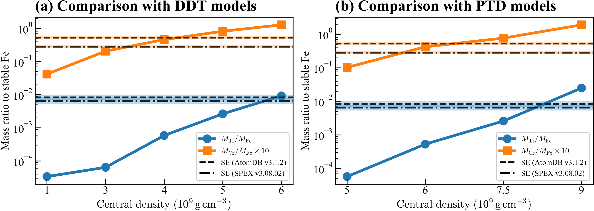
图注：Predicted mass ratios of Ti/Fe (blue circles) and Cr/Fe (orange squares) in the innermost ejecta (see text) as a function of the WD central density. Panel (a) shows DDT models, and panel (b) shows PTD models. The observed ratios in the SE region derived with AtomDB (dashed) and SPEX (dash-dot) are overlaid as horizontal bands indicating the $1\sigma$ statistical uncertainty. The Cr/Fe ratios are multiplied by 10 for clarity. {Alt text: Two line graphs showing the comparison between the calculated mass ratios of Ti/Fe and Cr/Fe and measured values as a function of the central density.}
对应解读：建议重点查看的图表 6；关键图表逐图导读 图 5；关键结果中关于中心密度下限的模型比较段落。
入选理由：这是全文物理结论最直接的支撑图，横轴就是白矮星中心密度，分别给出 DDT 与 PTD 模型中 Ti/Fe、Cr/Fe 随中心密度的变化，并叠加 SE 区观测允许带。它最清楚地展示为什么低中心密度模型被排除，以及为何得到 DDT 需 >=4.0e9 g cm^-3、PTD 需 >=6.0e9 g cm^-3 的结论。
来源与置信度：\(arxiv_source\)；high；\(arxiv_source\) / pasj02.tex:figure[6]
Fig05
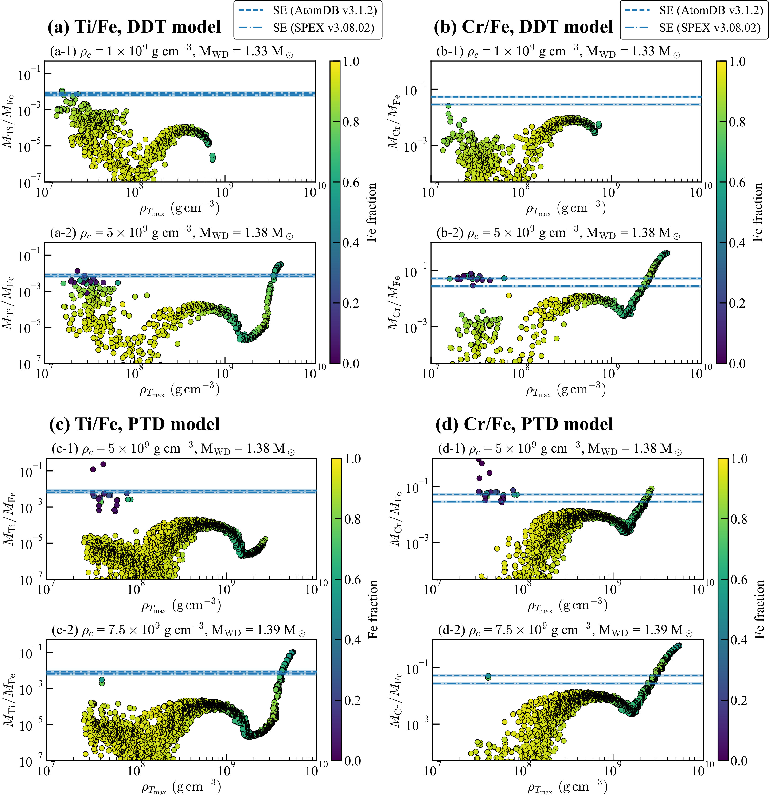
图注：Predicted distributions of the Ti/Fe and Cr/Fe mass ratios as a function of $\rho_{T_{\rm max}}$, the density at which each tracer particle reaches its maximum temperature during nuclear burning, for near-$M_{\rm Ch}$ SN~Ia models with solar metallicity in \(\citet{Leung18}\) and \(\citet{Leung20}.\) (a) Ti/Fe distribution predicted by the deflagration-to-detonation transition (DDT) models for $\rho_c=1\times10^9$~g~cm$^{-3}$ (a-1) and $\rho_c=5\times10^9$~g~cm$^{-3}$ (a-2). (b) is the same as (a) but for Cr/Fe. (c) and (d) are the same as (a) and (b), respectively, but for the pure turbulent deflagration (PTD) models with $\rho_c=5\times10^9$~g~cm$^{-3}$ (\nobreakdash-$1$) and $\rho_c=7.5\times10^9$~g~cm$^{-3}$ (\nobreakdash-$2$). Only tracer particles with $T_{\rm max}\ge 5.5\times10^9$~K are shown, and the Fe mass fraction of each particle is color-coded. The observed mass ratios in the SE region, derived with AtomDB (dashed) and SPEX (dash-dot), are overlaid as horizontal bands indicating the $1\sigma$ statistical uncertainty. {Alt text: Eight line graphs showing the comparison between the calculated mass ratios of Ti/Fe and Cr/Fe and measured values as a function of $\rho_{T_{\rm max}}$.}
对应解读：建议重点查看的图表 6；关键图表逐图导读 图 5；详细解读中 Ti/Fe 与 Cr/Fe 来自高密度电子俘获核合成的论证。
入选理由：该图把 Ti/Fe 和 Cr/Fe 的模型预测分解到不同燃烧密度 tracer particle 上，并用观测水平带与 AtomDB/SPEX 结果比较，比单纯中心密度曲线更能说明这些元素比为何指向最内层、高密度、富中子核合成环境。
来源与置信度：\(arxiv_source\)；high；\(arxiv_source\) / pasj02.tex:figure[5]
Fig02
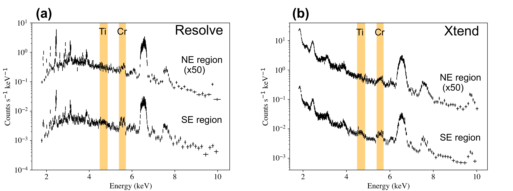
图注：(a) Resolve spectra extracted from SE and NE regions. The latter is multiplied by 50 for visibility. K-shell lines from Ti and Cr, the fluxes of which exhibit the most apparent differences between the regions, are highlighted in orange. Note that a line around 9.7~keV is an instrumental line as modeled in fugure~\(\ref{fig:TiRichspectra_SE}\) and \(\ref{fig:TiNonRichspectra_NE}.\) (b) Same as the top panel, but for Xtend spectra. {Alt text: Two line graphs showing the X-ray spectra obtained by Resolve and Xtend from the NE and SE regions.}
对应解读：建议重点查看的图表 2 和 3；关键图表逐图导读 图 2、图 3；作者怎么做中关于 Resolve 与 Xtend 谱、Ti/Cr 东南增强的描述。
入选理由：这张图同时展示 SE 与 NE 的 Resolve/Xtend 谱，并特别标出 Ti 和 Cr K 壳层线，是判断局部增强是否直接来自观测谱线差异的最关键原始谱图。它比单一区域拟合图更适合说明东南/东北差异。
来源与置信度：\(arxiv_source\)；high；\(arxiv_source\) / pasj02.tex:figure[2]
Fig01
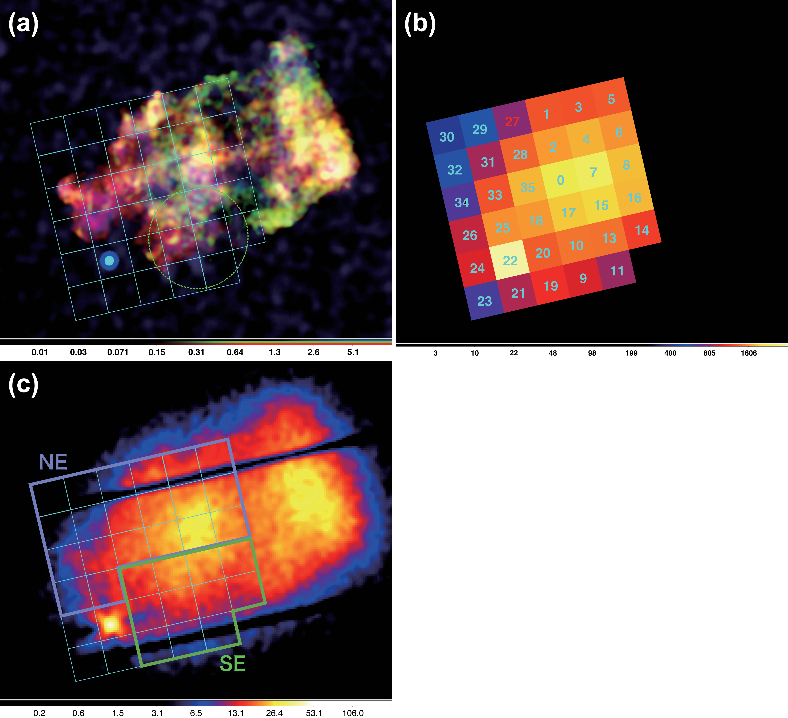
图注：(a) Three-color image of 3C~397 by Chandra with the energy range from 0.5--10.0~keV. Resolve pixel array (cyan squares) and the Cr-rich region identified by \(\citet{Ohshiro21}\) (green dashed ellipse) are overlaid. (b) Resolve count map in the energy range from 2.0--10.0~keV with the pixel IDs. The calibration pixel at the bottom right corner of the array is not exposed. (c) Xtend count map with the same energy band as that of the Resolve image. The photon-extracted regions for spectral analyses are defined as polygons with green (southeastern region) and blue (northeastern region). Two line-shaped missing areas across the remnant designate the charge injection lines, which are taken into account in the calculation of the effective area. {Alt text: Three images showing the X-ray count maps obtained by Chandra, XRISM/Resolve, and XRISM/Xtend.}
对应解读：建议重点查看的图表 1；关键图表逐图导读 图 1；局限和下一步中关于 Resolve 只覆盖东半部、SE/NE 区域划分的讨论。
入选理由：该图给出 Chandra、Resolve、Xtend 图像、Resolve 像素阵列、SE/NE 提谱区域以及先前 Cr-rich 区域的位置，是理解空间覆盖和区域选择偏差的基础。它能防止把视场内结果误解为全遗迹结论。
来源与置信度：\(arxiv_source\)；high；\(arxiv_source\) / pasj02.tex:figure[1]
Fig07
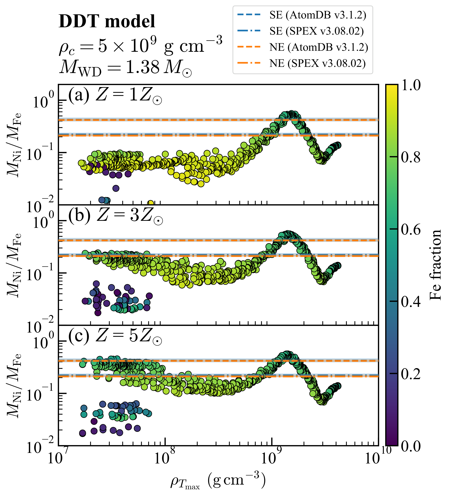
图注：Same as Fig.~\(\ref{fig:model_mass_distribution},\) but for the Ni/Fe mass ratio predicted by a delayed-detonation (DDT) model with $\rho_c=5\times10^9$~g~cm$^{-3}$ at three progenitor metallicities, $Z=1,\,3,$ and $5\,Z_{\odot}$. The observed ratios in the SE (blue) and NE (orange) regions, derived using AtomDB (dashed) and SPEX (dash--dot), are overlaid as horizontal bands indicating the $1\sigma$ statistical uncertainty. {Alt text: Three line graphs showing the comparison between the calculated mass ratio of Ni/Fe and measured values at three different progenitor metallicities as a function of $\rho_{T_{\rm max}}$.}
对应解读：建议重点查看的图表 5 和 6；关键图表逐图导读 图 5；详细解读中关于 Ni/Fe 在两个区域都增强、可能需要高前身星金属丰度解释的段落。
入选理由：这张图专门比较 Ni/Fe 与不同前身星金属丰度 DDT 模型，并同时叠加 SE 与 NE 观测带，直接支撑“Ni/Fe 全视场偏高但不完全由局部电子俘获解释”的结论。
来源与置信度：\(arxiv_source\)；high；\(arxiv_source\) / pasj02.tex:figure[7]
Fig03
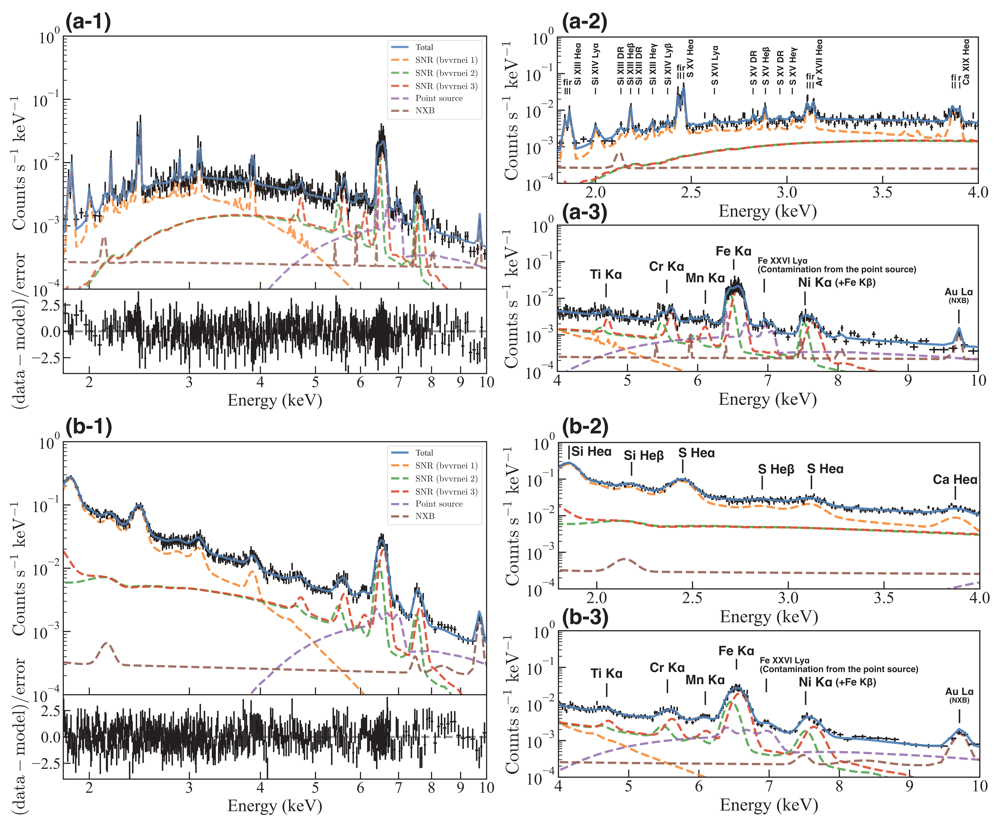
图注：(a-1) Resolve spectrum extracted from the SE region and the best-fit model with \(\texttt{xspec}\) in the 1.8--10.0 keV band. (a-2) and (a-3) show the same spectrum in the 1.8–4.0 keV and 4.0–10.0 keV bands, respectively, with line identifications. (b-1), (b-2), and (b-3) are the same as (a-1), (a-2), and (a-3), respectively, but for Xtend spectrum. {Alt text: Six line graphs showing the spectra extracted from the SE region with fitting curves.}
对应解读：建议重点查看的图表 2、3、7；关键图表逐图导读 图 2、图 3；模型拟合段落中关于多组分 NEI 同时拟合高分辨率线结构和宽能段连续谱的说明。
入选理由：该图展示 SE 区 Resolve 与 Xtend 的最佳拟合模型，并分能段标注谱线。由于 SE 是 Ti/Fe、Cr/Fe 增强和中心密度约束的核心区域，这张拟合图最能检查线识别、模型拟合质量以及弱铁族线是否可能受 Fe 线翼或连续谱建模影响。
来源与置信度：\(arxiv_source\)；high；\(arxiv_source\) / pasj02.tex:figure[3]
强相关工作
这篇工作与 3C 397 的早期 XMM-Newton、Chandra、Suzaku 和 NuSTAR 研究直接相连，后者已经指出其铁族元素丰度异常并支持近钱德拉质量前身星。本文的新意在于 XRISM Resolve 的高分辨率确认并细化了 Ti、Cr、Ni 等诊断，而不是重新发现 3C 397 的富铁性质。检索关键词可用“3C 397 Type Ia supernova remnant Mn Ni Fe abundance”、“3C 397 Chandrasekhar mass progenitor”、“XRISM Resolve 3C 397”。
理论上，它应与近钱德拉质量延迟爆轰、纯爆燃和亚钱德拉双爆轰模型对照阅读。相反观点并不是说 3C 397 一定不是近钱德拉质量，而是强调高 Ni/Fe 或高 Mn/Fe 也可能受初始金属丰度、三维混合、反向激波选择效应和原子数据系统误差影响。检索关键词可用“Type Ia nucleosynthesis neutronization electron capture central density”、“sub-Chandrasekhar Type Ia Mn Fe Ni Fe”、“delayed detonation turbulent deflagration Type Ia yields”。
同一事件 / 同类源线索：
相似工作：
- https://ui.adsabs.harvard.edu/abs/2015ApJ...801L..31Y/abstract
- https://ui.adsabs.harvard.edu/abs/2016ApJ...826L..28Y/abstract
基础理论 / 方法工作：
- https://ui.adsabs.harvard.edu/abs/1999ApJS..125..439I/abstract
- https://ui.adsabs.harvard.edu/abs/1984ApJ...286..644N/abstract
- https://ui.adsabs.harvard.edu/abs/2014ARA%26A..52..107M/abstract
相反观点 / 张力线索：
6. S301 and friends: Measuring the spin of Sgr A*
- 来源：arXiv / astro-ph.HE
- 链接：https://arxiv.org/abs/2607.24931v1
- 作者：T. Piran, P. Amaro-Seoane, B. Aytac, G. Bourdarot, A. Burkert, D. Calderon, J. Cuadra, F. Eisenhauer
- 评分：novelty 8/10，importance 8/10，relevance 7/10，final 8.65/10
- 推荐理由：利用新近发现的近心恒星S301及参考星分离牛顿混淆、测量Sgr A*自旋的方案，银河中心黑洞物理意义较强；虽非伽马射线论文，但对GC致密天体物理有较高价值。
中文题目：“S301 和它的朋友们”：用近银心恒星测量 Sgr A* 自旋
做了什么：这篇文章讨论一个很具体但很关键的问题：新发现的高偏心率近银心恒星 S301 是否能用来测量银河系中心黑洞 Sgr A 的自旋。S301 的近心距只有约 \(280\,r_g\)，相对论性 Lense--Thirring 节点进动会比经典 S 星更强；但任何非球对称的扩展质量，比如恒星盘、扁平星团或暗残骸分布，也会给轨道平面施加牛顿力矩，产生看起来相似的节点进动。作者的核心想法是用与 S301 远心距相近、但近心距大得多的 S2、S55、S38 作为“牛顿背景校准星”：这些星受到类似的扩展质量力矩，却几乎没有可观的 Lense--Thirring 信号。这样就可能从 S301 的进动中扣除牛顿混淆，提取 Sgr A 自旋在天平面内的投影。
为什么重要：Sgr A* 的质量和距离已经由 S 星轨道测得很准，Schwarzschild 近心点进动也已被观测验证；但自旋仍是银河系中心黑洞最重要的未知参数之一。自旋关系到黑洞成长史、吸积角动量、喷流或外流历史，以及银河中心强场相对论检验。本文的重要性在于，它没有只说“更近的星就能测自旋”，而是正面处理了实际观测中最麻烦的牛顿混淆：扩展质量的非球对称部分可以模仿 frame dragging。
理论 / 观测 / 仪器方法价值：对理论而言，文章给出一个清晰的尺度分离：牛顿扭矩主要由轨道远心端采样的质量分布控制，而 Lense--Thirring 进动主要由近心端的强引力控制。对观测而言，它提出了多星联合校准策略，把 S301 与 S2、S55、S38 组成差分测量系统。对方法而言，文章把解析的轨道平均力矩估计与数值轨道平均计算相互验证，并讨论了离散扰动体造成的随机下限。
为什么应该关注：如果这个方案可行，Sgr A* 自旋的第一步约束可能不只依赖未来找到更极端的 S 星，而是可以利用已经或即将被 GRAVITY+ 和 ELT 精密跟踪的一组恒星。它也提醒我们：强场相对论信号不是只靠提高测量精度就能拿到，必须同时建模银河中心的暗质量、恒星盘和颗粒噪声。对任何关心 S 星动力学、黑洞自旋、银河中心暗残骸分布或强场引力检验的人，这篇文章都值得读。
展开详细解读：文章讲解、背景、理论、重点章节、图表与相关工作
文章详细讲解
科学问题：Sgr A* 的自旋会通过 Lense--Thirring 效应拖曳局域惯性系，使绕黑洞运动的恒星轨道平面发生节点进动，也会引起近心点方向的相对论性变化。过去 S2 的轨道已经给出了引力红移和 Schwarzschild 近心点进动的检验，但 S2 的近心距仍然太大，frame dragging 很弱。S301 的新发现改变了局面：它的偏心率约为 \(e=0.9825\)，近心距约为 \(r_p=280\,r_g\)，因此在近心点短时间内进入更强的 Kerr 时空区域，Lense--Thirring 信号可显著增强。
作者怎么做：文章把问题转化为两个进动源的可分离性。一个是广义相对论中的 Lense--Thirring 进动，它随黑洞自旋 \(\boldsymbol{S}_\bullet\) 和轨道半长轴、偏心率强烈变化，尤其受近心距控制。另一个是牛顿力学下由非球对称扩展质量产生的轨道平均力矩，例如盘状或扁平分布。作者比较 S301 与 S2、S55、S38 这些远心距接近的恒星，使用解析估计和数值轨道平均力矩计算，考察在不同盘半径、质量、倾角和扁率下，各星的节点进动如何相关。
关键结果：文章指出，对一个延伸到恒星近心距以外的盘或扁平分布，高偏心率轨道的长期牛顿力矩主要由恒星在远心点附近停留的时间和空间位置决定，而不是由短暂经过近心点时的强引力区域决定。因此，远心距与 S301 相近的 S2、S55、S38 会受到与 S301 可比的牛顿节点进动；但它们的近心距大得多，Lense--Thirring 信号小得多，文摘中特别指出 S2 的相对论自旋信号约比 S301 小 \(\sim 30\) 倍。于是这些“朋友”星可以作为牛顿背景的测量器，用它们的节点进动或上限来约束盘状扰动体的质量和取向，再从 S301 的观测进动中扣除。
另一个有意思的结果是，S301 的 Schwarzschild 近心点进动会让其近心方向相对于任何固定的牛顿扰动盘逐渐旋转，从而使牛顿节点进动贡献带有可预测的时间变化；而 Lense--Thirring 节点进动方向由黑洞自旋矢量决定，在这种平均意义下具有不同的时间结构。这为分离信号提供了又一个维度，不只是比较不同恒星的进动幅度，也可以比较同一恒星随时间的进动模式。
局限和下一步：主要限制不是公式上的，而是银河中心真实质量分布的复杂性。扩展质量不是平滑连续体，而是由暗恒星、恒星级黑洞、中子星、白矮星和可能的残余盘结构组成，颗粒性会产生随机力矩，给牛顿背景扣除设置随机底噪。作者认为通过多轨道平均、多星平均以及长期 GRAVITY+ 天体测量和 ELT 光谱速度测量，可以压低这类噪声。近期较可能测到的是 Sgr A* 自旋在天平面内的投影；完整三维自旋矢量还需要积累更长时间的 Lense--Thirring 近心点进动信息。
关键结果是怎么做出来的
本文最重要的结果不是某一个单独数值，而是一个可操作的差分测量方案。样本选择围绕 S301 展开：S301 近心距约为 \(280\,r_g\)，偏心率约为 \(0.9825\)，因此是目前测量 Sgr A* 自旋最有希望的恒星之一；同时选择 S2、S55、S38 作为参照，是因为它们的远心距与 S301 接近，能够采样相似的外部牛顿扰动环境，但近心距更大，相对论自旋拖曳弱得多。
证据链的第一步是比较进动的尺度关系。Lense--Thirring 节点进动随 \(a^{-3}(1-e^2)^{-3/2}\) 增强，对高偏心率轨道可近似理解为对小 \(r_p\) 非常敏感；而盘状或扁平扩展质量的轨道平均牛顿力矩，对高偏心率轨道主要由远心端决定，因为恒星在远心附近停留时间最长，且那里是与外部质量分布耦合最强的区域。作者用解析估计先给出这个物理尺度，再用轨道平均数值计算验证 S301 与 S2、S55、S38 的牛顿节点进动确实可以处于相同量级。
统计意义上，文章并不是报告已经测得的 Sgr A* 自旋，而是评估未来观测如何从混合信号中提取自旋。可观测量是各恒星轨道平面方向随时间的变化，即升交点经度和倾角的漂移，以及可能的近心点方向变化。模型比较的核心是把观测进动写成相对论项、平滑牛顿项和随机颗粒项之和，然后用参照星约束平滑牛顿项的质量、取向和扁率参数。S2 特别关键，因为它的观测基线最长、轨道参数最精确，且文中指出其 Lense--Thirring 信号相对 S301 约小 \(30\) 倍，因而更像纯牛顿校准器。
支撑结论的图表应当包括几类诊断：不同恒星的牛顿节点进动幅度随盘半径或盘取向变化的比较图；Lense--Thirring 进动与牛顿进动的比例图；轨道平均解析估计与数值积分结果的对比图；以及加入颗粒噪声后的误差预算图。读者需要特别看 S301 与 S2、S55、S38 的曲线是否在大范围扰动模型下保持相关，而不是只在某个精细调参的盘模型下成立。
系统误差方面，最大的风险来自真实银河中心质量分布与简单盘或轴对称扁平模型不同。若存在局部子结构、少数大质量暗残骸、未建模双星或时间变化扰动，参照星校准可能偏离 S301 所受扰动。文章通过讨论颗粒性下限和星间平均来说明这种误差不能简单忽略，但也不是无解：多星、多历元和更高精度的角位置加视向速度可以把随机项从相干自旋信号中区分出来。
稳健性检验的关键在于两点。第一，牛顿背景模型不应只用 S301 拟合，而必须能同时解释 S2、S55、S38 的进动或非探测上限。第二，自旋信号的方向和时间结构应与黑洞自旋矢量一致，而牛顿项会受到 S301 Schwarzschild 近心点进动调制，具有不同的相位演化。若未来数据同时满足这两个条件，对 Sgr A* 自旋投影的约束才可信。
展开背景、理论、公式、模型、章节和图表导读
背景知识
研究对象是银河系中心的超大质量黑洞 Sgr A 及其周围的 S 星族。S 星是在中心 \(\sim 0.01\) 到 \(0.1\) 秒差距内高速绕行的恒星，轨道周期从十几年到数十年不等。它们是少数能够以恒星轨道动力学直接探测强引力势的天体系统。S2 是经典样本，已经用于测量 Sgr A 的质量、银河中心距离、引力红移和 Schwarzschild 近心点进动。
历史问题是：黑洞质量容易从开普勒轨道得到，自旋却难得多。自旋信号是后牛顿阶的小效应，通常表现为轨道平面和近心方向的缓慢进动。对 S2 这样的恒星，Schwarzschild 进动已经可测，但 Lense--Thirring 进动仍远低于目前或近期的系统误差。只有当恒星的近心距非常小、偏心率很高时，frame dragging 才可能积累到可观水平。
观测背景正在快速变化。GRAVITY 和 GRAVITY+ 的近红外干涉测量把银河中心天体测量推进到微角秒量级，ELT 级望远镜将显著改善拥挤场中的光谱速度和更暗 S 星的跟踪。S301 的发现重要，是因为它在轨道几何上比 S2 更适合测自旋：近心距小、偏心率高、相对论效应强。问题在于，越想测小的相对论效应，就越不能忽略银河中心星团自身的牛顿扰动。
为什么现在值得重新看：过去讨论 Sgr A* 自旋测量时，一个常见思路是等待发现极端短周期、极小近心距的恒星。但本文强调，单颗极端星并不够；真实瓶颈是如何从扩展质量引起的经典进动中分离相对论信号。S301 加上 S2、S55、S38 提供了一个多星几何配置，使“相对论信号近心控制、牛顿扰动远心控制”的差异可以被观测利用。
该领域常见误区之一是把所有轨道进动都当作广义相对论检验。事实上，球对称扩展质量会引起额外的近心点进动，非球对称扩展质量会引起节点和倾角变化，离散扰动体还会造成随机游走。另一个误区是认为提高单星天体测量精度就足以测自旋；本文的观点更现实：需要多星联合建模，且必须把银河中心的动力学环境当作待拟合的系统误差，而非外部小修正。
基础理论 / 方法脉络
基础物理图像可以从轨道角动量开始。若中心势严格为点质量的牛顿势，恒星轨道是闭合椭圆，轨道角动量方向固定，近心点方向也固定。广义相对论打破了这种闭合性：Schwarzschild 时空导致近心点在轨道平面内进动；Kerr 时空中黑洞自旋进一步拖曳惯性系，使轨道平面本身绕自旋轴进动，这就是 Lense--Thirring 效应。
本文关心的关键量包括半长轴 \(a\)、偏心率 \(e\)、近心距 \(r_p=a(1-e)\)、远心距 \(r_a=a(1+e)\)、黑洞引力半径 \(r_g=GM_\bullet/c^2\)、无量纲自旋 \(\chi\)，以及轨道平面方向参数如倾角 \(i\) 和升交点经度 \(\Omega\)。Lense--Thirring 节点进动对 \(a\) 和 \(e\) 非常敏感，尤其在 \(e\) 接近 \(1\) 时增强明显，因此 S301 的小 \(r_p\) 是核心优势。
牛顿混淆来自非球对称扩展质量。若银河中心存在一个盘状恒星结构、扁平暗残骸团或任何具有四极矩的质量分布，它会对恒星轨道角动量施加平均力矩，使 \(\Omega\) 和 \(i\) 发生长期变化。对高偏心率轨道，恒星在远心点附近速度慢、停留时间长，因此轨道平均力矩很大程度由远心端决定。于是远心距相似的恒星可感受到类似牛顿扰动，即使它们的近心距不同。
本文的模型假设可以理解为三层：第一层是中心黑洞主导的 Kepler 椭圆；第二层加入一阶后牛顿 Schwarzschild 进动和自旋导致的 Lense--Thirring 进动；第三层加入外部非球对称质量分布的轨道平均力矩。作者并不需要知道每一颗扰动体的位置，而是用盘或扁平分布的质量、尺度和取向来描述平滑分量，同时用颗粒性噪声描述离散扰动体的随机贡献。
常见退化关系是黑洞自旋矢量与扁平质量分布取向之间的退化：二者都可能让轨道平面转动。本文试图用多星比较和时间结构打破它。S2、S55、S38 的作用是约束牛顿扁平项；S301 的强近心相对论响应则提供自旋敏感性。另一个系统误差是参考系、红外源混淆和视向速度零点，这些会影响轨道平面参数的长期漂移估计。
公式与推导
第一步从中心黑洞尺度出发。定义 Sgr A* 的引力半径为
其中 \(G\) 是引力常数，\(M_\bullet\) 是黑洞质量，\(c\) 是光速。S301 的近心距约为 \(r_p=280\,r_g\)，意味着它在近心点处探测的是比 S2 更强的相对论区域。
第二步写出 Kepler 椭圆的近心距和远心距：
其中 \(a\) 是半长轴，\(e\) 是偏心率。本文的尺度分离正来自 \(r_p\) 与 \(r_a\)：Lense--Thirring 信号强烈偏向小 \(r_p\)，而外部牛顿力矩对高偏心率轨道常由 \(r_a\) 附近主导。
第三步是轨道角动量。单位质量角动量为
轨道平面的方向由角动量矢量 \(\boldsymbol{L}=m_\star\boldsymbol{h}\) 决定，其中 \(m_\star\) 是恒星质量。任何垂直于 \(\boldsymbol{L}\) 的平均力矩都会改变节点 \(\Omega\) 和倾角 \(i\)。
第四步给出 Schwarzschild 近心点进动，它不依赖黑洞自旋：
这里 \(\omega\) 是近心点幅角。本文利用这一点指出，S301 的 \(\omega\) 会相对于外部盘取向不断转动，从而调制牛顿力矩的时间结构。
第五步写出 Lense--Thirring 节点进动率的标准尺度：
其中 \(J_\bullet\) 是黑洞自旋角动量。若写成无量纲自旋 \(\chi\)，则
代入后可见 \(\dot{\Omega}_{\rm LT}\propto \chi a^{-3}(1-e^2)^{-3/2}\)，这解释了高偏心率、小近心距轨道为何特别有利。
第六步用近心距近似说明高偏心率增强。因为 \(1-e^2=(1-e)(1+e)\)，当 \(e\to 1\) 时有
因此在比较相似远心尺度但不同近心距的恒星时，\(\dot{\Omega}_{\rm LT}\) 会对 \(r_p\) 的差异非常敏感；这就是 S301 相对 S2 的自旋信号可大很多的物理原因。
第七步写出外部非球对称质量导致的轨道平均力矩。若扰动势为 \(\Phi_{\rm ext}(\boldsymbol{r})\)，轨道平均扰动哈密顿量可写为
其中 \(P\) 是轨道周期。对应的角动量演化满足
这两式说明牛顿节点进动取决于整条轨道对外部势的时间平均采样。
第八步给出高偏心率轨道的时间权重。真近点角 \(f\) 的时间元满足
其中 \(r=a(1-e^2)/(1+e\cos f)\)。在远心点附近 \(r\) 大且速度慢，\(dt\) 权重大，因此 \(\langle \Phi_{\rm ext}\rangle\) 和 \(\boldsymbol{\tau}_{\rm N}\) 往往由远心区域控制。
第九步把观测到的节点漂移分解为三项：
其中 \(k\) 标记 S301、S2、S55、S38 等恒星，\(\boldsymbol{\theta}_{\rm ext}\) 是扩展质量的参数，\(\epsilon_k\) 包含测量误差和颗粒噪声。本文的策略就是用参照星约束 \(\boldsymbol{\theta}_{\rm ext}\)，再从 S301 中提取 \(\boldsymbol{S}_\bullet\)。
第十步给出一个实际拟合可用的高斯似然形式：
这里 \(\boldsymbol{d}_k\) 是观测到的轨道方向和进动量，\(\boldsymbol{m}_k\) 是包含相对论和牛顿项的模型，\(\boldsymbol{C}_k\) 是协方差矩阵。若参照星能显著压缩 \(\boldsymbol{\theta}_{\rm ext}\) 的后验不确定度，S301 对 \(\boldsymbol{S}_\bullet\) 的约束才会变强。
模型拟合 / 应用方法
这类工作的拟合对象不是单一轨道元素，而是一组随时间变化的天体测量位置、视向速度和由此推断的轨道参数。对每颗恒星，基本参数包括 \(a\)、\(e\)、\(i\)、\(\Omega\)、\(\omega\)、轨道周期、近心时刻以及参考系参数。相对论模型还要加入 Sgr A* 的质量、距离、自旋大小 \(\chi\) 和自旋方向；牛顿背景模型则需要扩展质量的质量归一化、径向尺度、扁率或盘厚、以及空间取向。
似然通常来自天体测量残差和光谱速度残差。若误差近似高斯，可以使用协方差加权的 \(\chi^2\) 或等价高斯似然；若存在源混淆、系统漂移或非高斯离群点，则需要更稳健的误差模型。本文强调的多星校准可以自然写成联合似然：S301 对自旋敏感，S2、S55、S38 对外部牛顿扁平项敏感，所有星共享同一个 Sgr A* 质量、距离和扩展质量背景。
参数退化是核心难点。黑洞自旋方向与盘状扰动体法向都能造成节点进动；扩展质量归一化与扁率也可相互补偿；参考系旋转误差可能伪装成所有轨道平面的共同漂移。打破退化的方法包括：利用不同恒星的 \(r_p\) 和 \(r_a\) 差异，利用 S301 Schwarzschild 近心点进动导致的牛顿项相位变化，利用视向速度约束三维轨道方向，以及把已有 S2 长时间基线纳入联合拟合。
残差诊断应该分层看。第一层是单星轨道拟合残差，看是否存在局部混淆事件或未建模加速度。第二层是轨道元素随时间的残差，尤其 \(\Omega\)、\(i\)、\(\omega\) 的长期漂移是否与模型一致。第三层是多星共同残差：如果 S301 需要一个牛顿盘模型，而该模型会预测 S2 或 S55 出现已经被排除的节点进动，那么自旋解释或牛顿扣除就不可信。
模型可能失败的地方也很明确。真实扰动体可能不是平滑盘，而是少数大质量恒星级黑洞主导的离散噪声；某些参照星可能处在不同的空间区域，不能代表 S301 所受牛顿力矩；或者长期数据中的参考系系统误差超过理论预期。文章对颗粒性随机下限的讨论很重要，因为它决定了即使仪器精度无限提高，牛顿背景扣除也不会无限精确。实际应用上，未来最现实的结果可能先是给出 Sgr A* 自旋天平面投影的置信区间或上限，而不是一次性测出完整 Kerr 自旋矢量。
重点章节 / 结果段落怎么读
数据和目标星选择：读者应先看 S301 的轨道参数，尤其 \(r_p\)、\(e\)、\(r_a\) 与 S2、S55、S38 的比较。这里的重点不是这些星都同样相对论性，而是它们在远心距上足够接近，可作为外部牛顿扰动的同环境探针。
解析估计部分：这一部分应重点读作者如何推导或解释“牛顿力矩由远心端控制，Lense--Thirring 由近心端控制”。这是全篇逻辑支点。若该尺度分离不成立，多星校准策略就会弱很多。
数值轨道平均力矩部分：这里应检查解析估计是否被数值计算支持。特别要看不同盘半径、盘倾角、扁率和质量分布下，S301 与 S2、S55、S38 的牛顿进动是否保持相关，以及相关性在何种几何条件下变差。
相对论信号与牛顿扣除部分：这一节应关注 S301 的 Lense--Thirring 信号相对参照星的增强倍数，以及参照星的进动上限如何转化为对扩展质量的约束。S2 的角色尤其重要，因为它的观测基线和轨道精度目前最好。
颗粒噪声和观测前景部分：最后应读作者如何估计离散扰动体导致的随机力矩，以及 GRAVITY+ 和 ELT 在多少时间尺度上可能达到有意义的自旋投影约束。这里决定论文结论是近期可行、长期可行，还是只是一种理想化方案。
建议重点查看的图表
-
目标恒星轨道几何图：检查 S301、S2、S55、S38 的近心距和远心距关系，尤其是否确实是远心距相近而近心距差异大。
-
Lense--Thirring 进动尺度比较图：看纵轴是否为 \(\dot{\Omega}_{\rm LT}\) 或每轨进动量，横轴可能是恒星编号、\(r_p\) 或 \(a(1-e^2)\)。关键是确认 S301 相对 S2 的增强倍数。
-
牛顿节点进动随盘参数变化图：看不同盘半径、质量或取向下，S301 与参照星的牛顿进动是否同量级。若曲线只有在狭窄参数区间重合，校准策略就较脆弱。
-
解析估计与数值轨道平均对比图：检查两者残差，尤其在极高偏心率和盘边界附近是否偏离。
-
Schwarzschild 近心点进动调制图：看牛顿贡献是否随 \(\omega\) 的相位产生可区分的时间变化，以及这种变化是否足够大到可观测。
-
颗粒噪声误差预算图或表：关注随机力矩随扰动体数量、质量谱和观测时间的缩放。它是最终自旋测量的系统误差底线。
-
未来观测灵敏度或时间基线图：看 GRAVITY+ 与 ELT 假设下，自旋投影约束如何随年份改善，以及完整三维自旋为何需要更长时间。
关键图表逐图导读
图 1：建议把它作为轨道几何总览来读。横纵轴通常可能是天平面位置、轨道半径或三维投影，数据点或轨道线对应 S301、S2、S55、S38。重点看 S301 的近心端是否明显更靠近 Sgr A*，同时其远心端是否与参照星处在相近尺度。读图陷阱是不要只被近心距吸引；本文的校准逻辑还要求远心距相似。
图 2：若论文给出 Lense--Thirring 进动比较，应关注纵轴的单位是每年、每轨还是角度单位，模型线是否按同一 \(\chi\) 归一化。S301 的点或曲线应显著高于 S2、S55、S38。陷阱是自旋方向投影会影响实际可观测节点进动，因此标称幅度不等于直接测量显著性。
图 3：牛顿力矩比较图最关键。横轴可能是盘外半径、盘内半径、盘倾角或扁率，纵轴是 \(\dot{\Omega}_{\rm N}\) 或相对力矩。读者应看 S301 与 S2、S55、S38 的曲线是否形状相似、幅度接近。若参照星曲线能包住 S301 的牛顿项，说明扣除策略有希望；若曲线交叉剧烈，则说明模型依赖较强。
图 4：解析与数值轨道平均的对比图应看残差而不只看主曲线。坐标轴可能是偏心率、盘尺度或轨道取向。若高偏心率端解析估计仍跟随数值结果，说明“远心控制”的物理解释可靠。陷阱是盘边缘效应可能导致局部偏差，不能把简单幂律外推到所有几何。
图 5：时间演化图应显示 S301 的牛顿贡献如何随 Schwarzschild 近心点进动改变相位，而 Lense--Thirring 项保持与自旋矢量相关的固定结构。读者应看两种曲线的相位、周期和振幅是否可由未来观测区分。陷阱是如果观测基线太短，时间结构可能退化成近似线性漂移。
图 6：误差预算或灵敏度预测图应把天体测量误差、光谱速度误差、平滑牛顿模型不确定度和颗粒噪声分开。横轴通常可能是观测年份或历元数，纵轴是自旋投影误差或进动不确定度。重点看误差是否最终进入颗粒噪声平台；如果是，继续提高仪器精度的收益会递减。
论文原图 / 可嵌入图片
Fig01
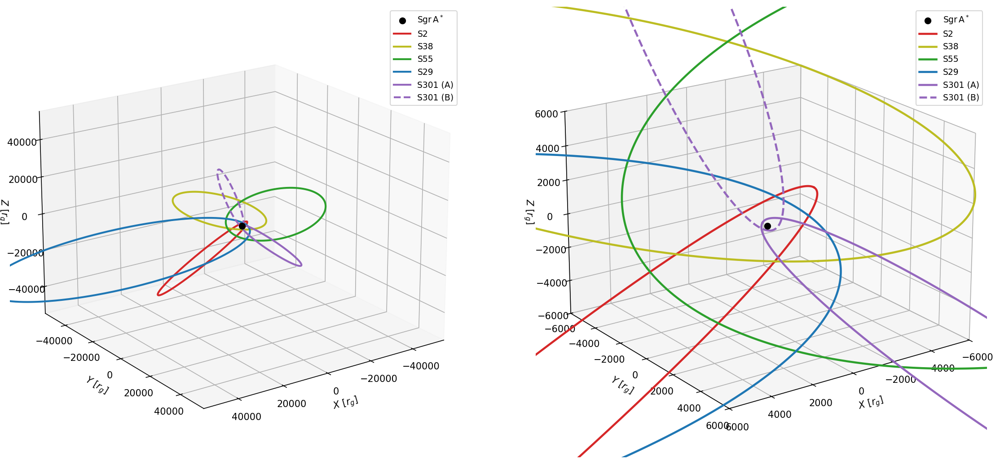
图注：Orbits of the benchmark S-stars and S301 around Sgr~A* in gravitational radii, projected in 3D. \(\emph{Left:}\) full-scale view; the apocenters set the scale. \(\emph{Right:}\) zoom into the inner $\sim 6000\,\rg$, showing the disparate pericenters and the strongly inclined, mutually misaligned orbital planes. S301 is shown for its two degenerate orbit solutions (A, B). The inner tracers S301, S55, S2, and S38 have comparable apocenters ($31{,}700$-$50{,}400\,\rg$) but pericenters differing by more than an order of magnitude, while their distinct orientations provide the geometric diversity needed to resolve the spin vector.
对应解读：对应“建议重点查看的图表”第1项以及“关键图表逐图导读”图1：S301、S2、S55、S38 的轨道几何总览。
入选理由：该图直接展示 S301、S2、S55、S38 的三维轨道、近心距和远心距关系，并在图注中明确说明这些恒星远心距相近但近心距相差超过一个数量级。这正是本文多星校准策略的几何基础，比其他图更能支撑日报中关于“远心距相似、近心距差异大”的核心解读。
来源与置信度：\(arxiv_source\)；high；\(arxiv_source\) / \(S301_LT_arXiv.tex\):figure[1]
Fig04
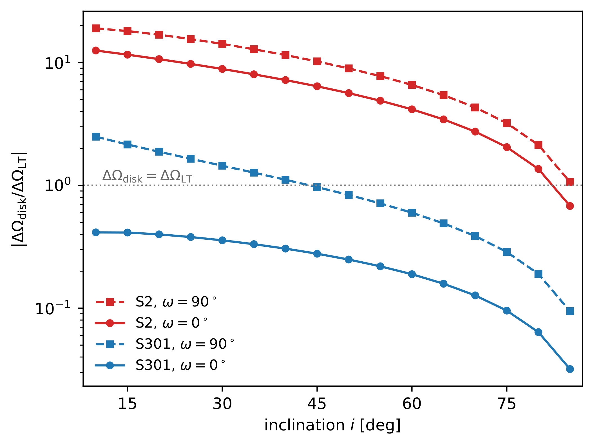
图注：Disk-to-LT confusion ratio $|\DO_{\rm disk}/\DO_{\rm LT}|$ as a function of the orbit--disk inclination $i$, for S301 (blue) and S2 (red) and for $\omega=0^\circ$ (solid, circles) and $\omega=90^\circ$ (dashed, squares), computed for the $\alpha=-1$ disk of Table~\(\ref{tab:numerical}.\) The dotted line marks $\DO_{\rm disk}=\DO_{\rm LT}$. S301 lies below unity at all geometries except $\omega=90^\circ$ with $i\lesssim45^\circ$, whereas S2 is disk-dominated almost everywhere -- the $\sim10\times$ vertical offset between the two stars is the pericenter lever arm of Eq.~(\ref{eq:LT_ratio}). The ratios vanish at $i=90^\circ$, where the disk torque $\propto\cos i$ goes to zero.
对应解读：对应“建议重点查看的图表”第2、3项以及“关键图表逐图导读”图2/图3：Lense--Thirring 与盘致牛顿节点进动的相对尺度、牛顿混淆强弱。
入选理由：该图给出盘致节点进动与 LT 节点进动的混淆比 |dΩ_disk/dΩ_LT|，横轴为轨道—盘倾角，并区分 S301 与 S2 以及不同近心角 ω。它直接检验 S301 的 LT 信号是否能超过牛顿盘扰动，以及 S2 是否主要作为牛顿背景校准星；图中 S301 与 S2 的垂直偏移也体现了近心距杠杆效应，是判断自旋测量可行性的关键图。
来源与置信度：\(arxiv_source\)；high；\(arxiv_source\) / \(S301_LT_arXiv.tex\):figure[4]
Fig02
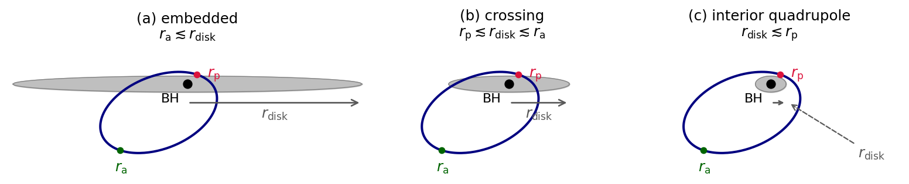
图注：The three orbit--disk configurations, shown edge-on for the same inclined eccentric orbit (drawn with $e=0.75$ and $i=35^\circ$ for clarity; the black circle marks the black hole, red and green dots the pericenter and apocenter): (a) embedded, $r_{\rm a}\lesssim r_{\rm disk}$; (b) crossing, $r_{\rm p}\lesssim r_{\rm disk}\lesssim r_{\rm a}$; (c) interior quadrupole, $r_{\rm disk}\lesssim r_{\rm p}$. In (a) and (b) the secular nodal torque is dominated by the apocenter, while in (c) it is set by the semi-latus rectum (Eq.~\ref{eq:exterior}). Cases (a) and (b) are the relevant ones: any disk extending beyond S2's pericenter places both stars in the embedded/crossing regime, while (c) requires a highly contrived mass configuration.
对应解读：对应“建议重点查看的图表”第3、4项以及详细解读中关于“远心控制”的物理解释：不同盘半径构型下的轨道平均牛顿力矩来源。
入选理由：该图将轨道—盘关系分为 embedded、crossing 和 interior quadrupole 三种情形，并明确标出在前两种相关情形中长期节点力矩由远心点主导。这为日报中“牛顿扰动受远心距控制，而 LT 受近心距控制”的核心论证提供直观支撑，虽不是残差图，但科学解释价值很高。
来源与置信度：\(arxiv_source\)；high；\(arxiv_source\) / \(S301_LT_arXiv.tex\):figure[2]
Fig03
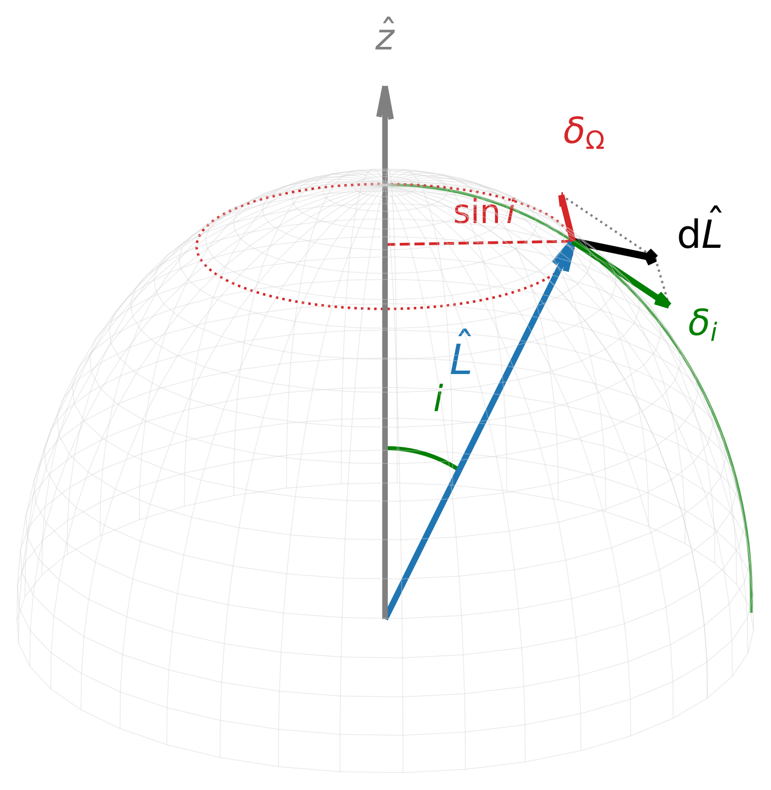
图注：Decomposition of the orbital-pole drift. Any torque rigidly tilts the orbital plane, producing a frame-independent drift $\mathrm{d}\hat{\mathbf{L}}$ of the orbital pole $\hat{\mathbf{L}}$, which sits at colatitude $i$ from the reference-plane normal $\hat{z}$. The drift decomposes into a meridional part $\delta_i$, which changes the inclination directly ($\dd i=\delta_i$; Eq.~\ref{eq:DiLT}), and an azimuthal part $\delta_\Omega$, which moves the node along a circle of radius $\sin i$, so that $\Delta\Omega=\delta_\Omega/\sin i$. The nodal rate grows toward small $i$, and in the limit $i\to0$ the node is undefined.
对应解读：对应模型拟合与残差诊断段落中关于节点 Ω、倾角 i、轨道角动量方向随时间漂移的解释。
入选理由：该图解释轨道极点漂移如何分解为倾角变化和节点变化，有助于读者理解节点进动观测量与实际轨道平面扭转之间的几何关系。不过它不直接展示 S301 与参照星的差异、LT 增强倍数或牛顿扣除效果，因此优先级低于 Fig01、Fig04 和 Fig02。
来源与置信度：\(arxiv_source\)；high；\(arxiv_source\) / \(S301_LT_arXiv.tex\):figure[3]
强相关工作
这篇工作直接接在 S 星强场检验传统之后。S2 的引力红移和 Schwarzschild 进动测量证明了近红外干涉与长期光谱监测可以在银河中心做后牛顿动力学；S301 则把目标推进到自旋测量。应检索关键词包括“\(\mathrm{Sgr\ A^*}\) spin S stars Lense Thirring”、“S2 Schwarzschild precession GRAVITY”、“S301 GRAVITY 2026”、“Galactic Center extended mass Newtonian precession”。
相近工作包括早期关于用短周期 S 星或脉冲星测量 Sgr A* 自旋的理论研究，以及关于暗残骸团、质量分离和矢量共振弛豫对 S 星轨道扰动的研究。本文与这些工作的不同点在于，它提出利用远心距匹配的多星样本来校准非球对称牛顿项，而不是只依赖单颗最内侧恒星。
可能的相反观点或张力来自两类研究。一类强调银河中心扩展质量和颗粒扰动过强，会掩盖 frame dragging；另一类认为只要找到更近的恒星或脉冲星即可直接测自旋。本文处在中间：它承认牛顿混淆是主要障碍，但认为通过 S301 与 S2、S55、S38 的联合轨道平均校准，至少自旋在天平面内的投影可能进入近期可测范围。
同一事件 / 同类源线索：
- https://arxiv.org/abs/2607.24931
- https://arxiv.org/pdf/2607.24931
- https://arxiv.org/abs/1807.09409
- https://arxiv.org/abs/2004.07187
- https://arxiv.org/abs/1006.0064
相似工作：
基础理论 / 方法工作：
相反观点 / 张力线索：
（未提供）
说明
评分由 LLM 给出初评，再由本地阈值策略过滤；IACT、TeV 伽马射线和高能中微子天文学按重点方向处理。